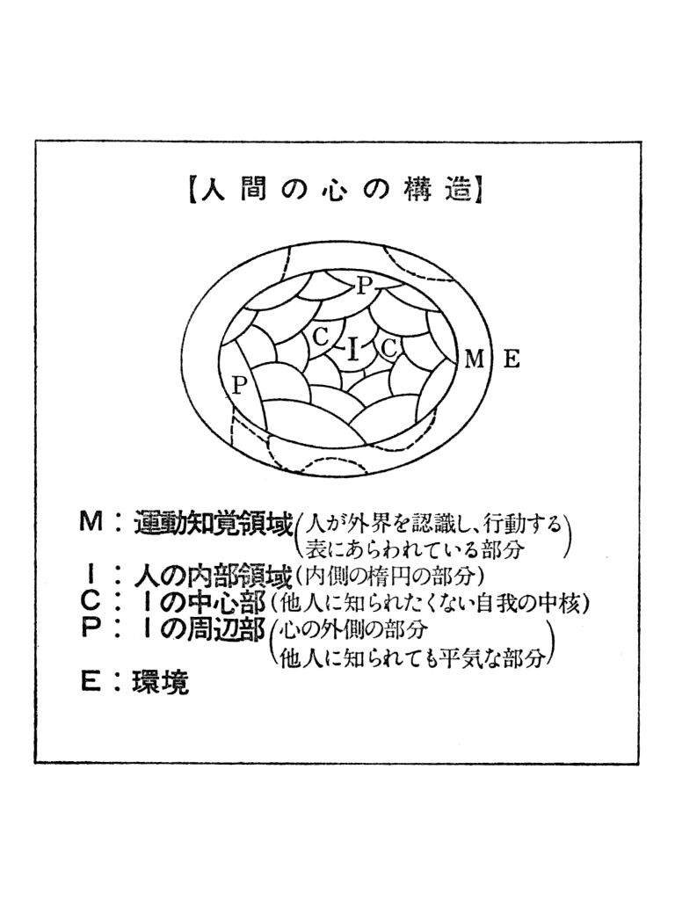
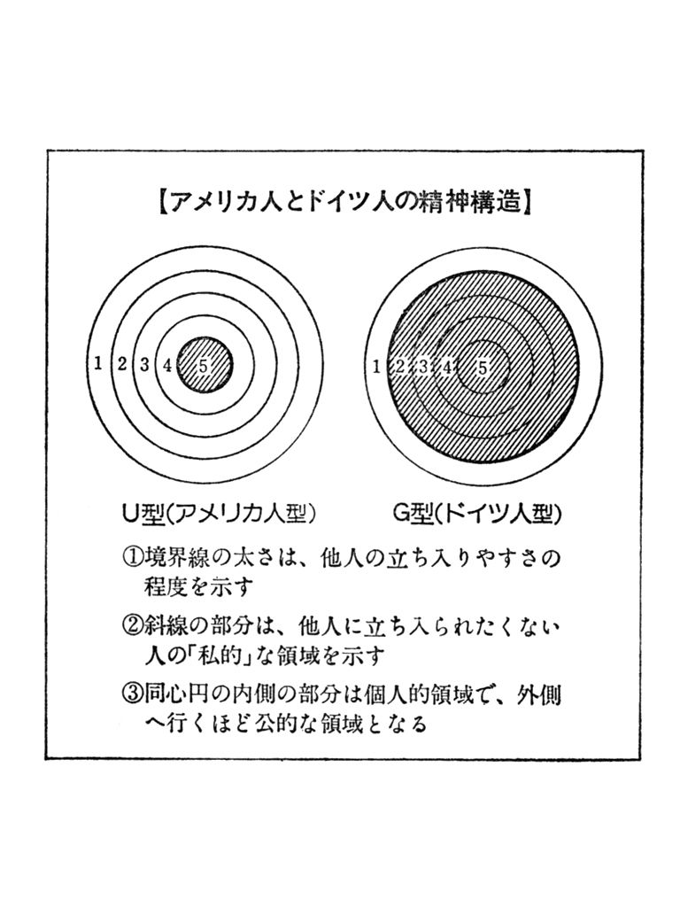

| 【大活字シリーズ】深層説得術 | |
| 多湖輝 | |
■目 次■
はじめに ――深層説得術とは何か
一 相手の心を開かせる――警戒心を取り除く深層説得術
● 説得を妨げる警戒心の見分け方
● 相手を話しやすい気持にさせる姿勢をつくる――警戒心を取り除く深層説得術１
● 自分と共通のものを、相手の中に見出す――警戒心を取り除く深層説得術２
● 相手の論理よりも、心理の流れに合わせて話を進める――警戒心を取り除く深層説得術３
二 相手の考えを変えさせる――先入観を取り除く深層説得術
● 説得を妨げる先入観の見分け方
● 相手の主観を吐き出させ、客観視させる――先入観を取り除く深層説得術１
● 意外性のある〝体験〟をさせる――先入観を取り除く深層説得術２
● 相手の論理との一致点・相違点を明確にする――先入観を取り除く深層説得術３
● 単純化したくり返し刺激を与える――先入観を取り除く深層説得術４
三 相手の意志を変えさせる――心的圧力を取り除く深層説得術
● 説得を妨げる心的圧力の見分け方
● グループ・スタンダードを逆用する――心的圧力を取り除く深層説得術１
● 相手の背後にいる〝陰の実力者〟にアタックする――心的圧力を取り除く深層説得術２
● 相手を第三者に対する中間説得者に仕立てる――心的圧力を取り除く深層説得術３
● 相手の「意識」と「現実」のずれを利用する――心的圧力を取り除く深層説得術４
四 相手を満足させる――欲求不満を取り除く深層説得術
● 説得を妨げる欲求不満の見分け方
● 挑発してでも相手の不満をとにかく吐き出させる――欲求不満を取り除く深層説得術１
● 禁ずるのではなく、反対のことを勧めてみる――欲求不満を取り除く深層説得術２
● 不満の方向や位置を転換させる――欲求不満を取り除く深層説得術３
五 相手を協調的にする――反感を取り除く深層説得術
● 説得を妨げる反感の見分け方
● 相手の〝言い分〟を感情で容認する――反感を取り除く深層説得術１
● 共通の〝目標〟をつくり、反感をそちらにそらせる――反感を取り除く深層説得術２
六 相手を発奮させる――自尊心・虚栄心を利用する深層説得術
● 説得を妨げる自尊心・虚栄心の見分け方
● 相手の誤りを指摘しない――自尊心・虚栄心を利用する深層説得術１
● 相手の〝肥大した自我〟をくすぐる――自尊心・虚栄心を利用する深層説得術２
七 相手を積極的にする――不安感を取り除く深層説得術
● 説得を妨げる不安感の見分け方
● 不安の正体を相手自身に把握させる――不安感を取り除く深層説得術１
● 説得の内容が現実化したときの状態を示す――不安感を取り除く深層説得術２
● 説得をしたい内容の全体をはじめから明らかにしない――不安感を取り除く深層説得術３
八 相手の信頼をかちとる――不信感を取り除く深層説得術
● 説得を妨げる不信感の見分け方
● 相手と自分の情報量の差をなくす――不信感を取り除く深層説得術１
● いったんは、相手のペースにひたりきってみる――不信感を取り除く深層説得術２
● 誠意を示すタイミングを計る――不信感を取り除く深層説得術３
はじめに――深層説得術とは何か
私を唖然とさせた名説得術
昨年、私は、『深層心理術』『深層言語術』と、深層心理学の知恵を身近な生活の中に生かす方法を述べた本を出版した。その直後、たまたま、若い警察官による不祥事や、原因不明の子どもの自殺など、人間の不可解な心理を背景にした事件が相つぎ、はからずも、〝深層心理〟という言葉が流行語にまでなってしまった。それだけでなく、読者の方々からも多大な反響をいただいたが、そのなかには、人の心の奥底が読みとれたなら、それらを踏まえて、実際に人をどう動かすかを知りたいというものがかなりあった。
世に、いわゆる説得術の本は数多くある。しかし、私はつねづね、他人とコミュニケートし、その態度を変容させ、こちらの思いどおり相手を動かしていくには、深層心理のレベルでの説得が行なわれなければならないと考えていた。その具体的な方法がここでいう「深層説得術」ということになるのだが、本題に入るまえにまず、あるビル解体にまつわるエピソードを聞いていただこう。
東京駅八 重 洲 口の近くに、数十年前に建てられた小さなビルがある。地下一階、地上五階建て、敷地面積七十五坪というこのビルは、建てられた当時、この界隈では、鉄筋ビルの草分けとして、話題をさらったものだった。先代社長が、ロシヤからわざわざ技師を呼んで造ったビルだけあって、外装には、こった装飾もほどこしてあり、美術建築の趣きを漂わせている。この由緒あるビルが、解体されることになった。私は、このビルの持ち主である二代目社長を存じあげていたし、ビル解体を業とする社長のほうも知り合いだったので、私が仲に入って、このお二人を引き合わせることになった。いわば、ビル解体の契約が成立するかどうかの「商談」であった。
私が、ド肝を抜かれたのは、この会談の冒頭における、解体屋社長の発言である。社長室に通され、相手の社長さんと引き合わされたとたん、この解体屋さんは、こう口を切った。
「いやぁ、すばらしいビルですね。多湖先生から、このビルをこわされるという話を承ったんですが、社長さん、このビルはおこわしになってはいけません。これだけの美術建築は、八重洲の名所として、お残しになる義務がおありになるんじゃないですか。亡くなられた先代の御意向はどうだったんですか、先代の御夫人は、ご健在だそうですが、お許しは得ていらっしゃるんですか。これだけ由緒あるビルともなりますと、こわせとおっしゃられても、おいそれとお受けするわけには参りません」
私は正直いって、びっくりした。ビルをこわさせてほしいという商談に、この社長は、こわしてはいけないと言い出したからだ。ビルの持ち主の社長さんも、いかにも驚いたという表情だったが、やがて、よくぞ言ってくれたという感慨の面持ちに変わっていった。
先代が精魂こめてつくり上げた宝物のようなビル。こわすという決断を下すまでには、さまざまな曲折があったろう。親族会議で解体に反対した人もいたかもしれない。なによりも、何十年来馴れ親しんだ持ちビルをこわすことには、感慨もひとしおのものがあるだろう。こわすことは決まっていても、あっさり、こわしましょうと言われては、立つ瀬もない心境かもしれない。そうした相手の心理の機微を、この老練な解体屋の社長さんは、いち早く読み取り、あえて解体反対を言い出したのだ。
表面的な態度だけで、人は動かせない
こうして、一〇分か二〇分ほどの話し合いの結果、すっかり相手を信用したビルの持ち主の社長は、「すべてをおまかせします」ということになったわけだが、このあとのやりとりもなかなか見事なものだった。
「こわさせていただくとしましても、けっしておろそかにはやりません。最新の水圧式の機械を使って、音一つ立てず、ほこり一つ立てずにみごとにこわしてごらんにいれます。それにしても、ビルのどこかに、ここだけはどうしても記念に残しておきたいとお考えのところはございませんか。どんなご要望にも、添えるように、たいせつにやらせていただきます」
傍で聞いている私でさえ、もし、自分のビルなら、この人にこわして欲しいと思うだろうと、ひそかに考えたほどだ。それほど、この社長の言葉は誠意にあふれ、説得力に満ちていたのだ。
それは、この解体屋の社長さんの商談の進め方が、まさに、私の言う「深層説得術」を地でいくものだったからである。本来、説得というものは、「深層説得術」と改めて銘打つまでもなく、深層説得でなければ効果がない、と言ったほうがいいのかも知れないのだ。
だれもが経験するように、説得というのは、なかなか難しい。成功してしまえば、手の裏を返したように態度が変わる相手でも、説得の過程ではなかなか応じようとしない場合もあるし、反対に、表面はいかにも説得に応じたかのように見えながら、いざというときになって、ガラリと態度を変えてしまう相手もいる。要するに、説得しようとする相手の表面的な態度だけを問題にしていたのでは、まるで理解に苦しむようなことが、説得には、つきものだといえるのである。
考えてみると、これは、むしろ当然のことで、そもそも説得とは、相手の態度変容を起こさせることが目的であって、口先だけの対応など、まるでアテにならないことになるし、いくら言質をとったからといって、行動を起こさせるまでに到らないのではあまり意味もない。そのあたりのメカニズムをよく承知しておかないと、とんだ煮え湯を飲まされることにもなりかねない。

説得を妨げる心の壁の多層構造
そこで、深層説得術の心理的メカニズムについてすこし掘り下げて考えてみることにしよう。深層説得術について考えるとき、私たちが、まず知っておかなければならないことは、人間の心理は、形層的 構造を持っているということである。
ここで、「層」といっている内容には、じつは、二通り意味がある。一つは、以前に書いた『深層心理術』で、詳しくお話ししたが、人間の心は、「表層」と「深層」、つまり「意識」されている部分と「無意識」の部分があるという意味で、フロイトらの考え方である。そのメカニズムを、私は、氷山にたとえたり、舞台にたとえて説明してきた。こうした意識、無意識の問題とまったく無関係ではないとしても、もう一つ別な心の「層」という意味がある。
これは、文字どおり「表層」と「深層」、つまり、心の上っ面の部分と、心の奥底の部分とに分ける考え方で、ドイツの心理学者でナチに追われてアメリカに渡り、アメリカで死んだクルト・レヴィンの唱えた説である。レヴィンは、人の心の構造を、前ページの図で表わした。言われてみれば、あたりまえのことだが、私たちの心は幾重にもヴェールにつつまれている。中心部には、だれにも知られたくない心の秘密（自我の中核）があるし、外側には、日常のつき合いで、平気で人前にさらすことのできる心の周辺部がある。
もちろん、その「心」自体は、眼で見えるものではなく、表情や身ぶり、言葉など、広い意味での行動を通じて表面化されてくる。私たちは、この表に表われた言動を見て、相手の心の状態を推しはかっているのである。話をもうすこしわかりやすくするために、同じレヴィンの、国民性の違いについての考え方を紹介してみよう。
彼は、アメリカ人とドイツ人を取り上げて、その精神構造の違いについて論じているが、確かに、一般的に見ても、アメリカ人とドイツ人ではその国民性には明らかな違いが見られる。アメリカ人は、性来、開放的、ざっくばらんで、人なつっこく、気軽に打ちとけるタイプの人が多いのに対して、ドイツ人は、威厳をつくろい、形式ばり、閉鎖的で、とっつきが悪い。
こうした両国民の国民性を、レヴィンは、Ｕ型（アメリカ人型）とＧ型（ドイツ人型）とに分け、その精神構造を次ページの図のように表現している。こんなふうに表現されてみると、人の心の構造というのが、じつによくわかるような気がする。ドイツ人は、比較的固い層が表層に近い部分にあるから、はじめはちょっとつき合いにくいが、この表層の殻をつき破って、すこし深く交際するようになると、たちまち、肝胆相照らす仲になる。というのも、心の中心層でのふれあいが起こり、心の秘密である私的領域にまで、容易に相手を招き入れてくれるからである。
これに対して、アメリカ人は、はじめからうちとけやすく、かなり深いプライベートな部分まで、平気でさらけ出しながら交際する。すべてを許し合った深い友情というような関係でなくとも、アメリカ人とつき合ってみると、個人的にずいぶん、突っ込んだ人間関係ができるような気がするのは、アメリカ人がＵ型の精神構造を持っているためであろう。
説明がやや難しくなったかも知れないが、人間の心が表層と深層を持つという、レヴィン的意味が、これで、十分ご理解いただけたかと思う。

相手の自我の核心部に変化を起こさせる
さて、こうした形層的な考え方をふまえて、説得の構造を考えると、説得が深層説得でなければ意味を持たないことが、おのずから理解されてくるであろう。というのも、説得場面では、しばしば、相手の自我の核心部において、重大な変化を起こさせる必要が起こってくるからである。
改めて言うまでもなく、説得には、さまざまな場面がある。職場での管理職と従業員、家庭における親と子、学校における先生と生徒などのほか、商談、恋愛から、政治、宗教場面での説得など、およそ、人と人との関係のあるところ、あらゆる場面で、説得の必要が起こってくる。こうしたさまざまな説得の場面のなかには、それこそ、口先だけの表層説得で十分な場合もあるが、いささかなりとも、相手の自我にふれるような問題になってくると、どうしても、そこに、深層心理的問題がからんでくる。この心の壁を突き破って、相手を説得しようとすれば、必然的に、深層説得の領域に足を踏み入れざるを得なくなるのである。
その一つのよい例として、冒頭にあげた、ビルの解体にまつわる話を思い起こしてみていただきたい。ビルをこわすという、表面的には単純に見える事柄のなかに、じつは、重大な深層心理とのかかわり合いがあった。それを無視しての説得は、おそらくは、成り立ち得なかったのではあるまいか。あのとき、解体業の社長さんが、いきなり値段の交渉のような、ビジネスの話にはいったとしたら、どうであったろうか。疑いもなく、相手社長の反発を買って、商談はたちどころに失敗してしまったであろう。
ところが、老練な解体屋さんは、そんな愚かなことはしなかった。彼は相手の深層心理を読み取り、解体反対という意外な発言で、相手の心の壁をさりげなく取り払ってしまった。わずか、二〇分足らずの話し合いのうちに、悠々と相手の心の内部に入り込み、結果的に、商談を成立させたのだ。もちろん、この社長に、深層心理学の素養があったわけではない。彼は、長年の経験を通じて、深層説得の心理テクニックを身につけてしまっていたのである。
深層心理を読み取りそれに訴えかける
こう考えてくると、深層説得術の出発点は、まず相手の深層心理の構造を把握することである。先のＵ型・Ｇ型の説明では、理解をたやすくするために、表層と深層の境界線を極端な形で表わした。が、現実の人間は、かならずしも、こんな明確な心の構造を持っているわけではない。表層と深層の境い目が第三層くらいのところにある場合もあるだろうし、第四層という場合もあるだろう。
また、各層のあいだを仕切る心の壁の厚みも人によってさまざまである。ある人は、表面の第一層の壁が厚く、最初は取りつくシマがないかもしれないし、逆に、表面は、柔軟に見えながら、二層、三層と進むにつれて、しだいに壁を厚くして、絶対に中心部に足を踏み入れさせない人もいるかもしれない。さらに、問題なのは、相手の自我の核心部の構造と内容である。相手がたいせつにしている心の秘密はいったい何であるか、そこに迫まる道は、どこに求めればよいのかなど、相手の深層の状況を、はっきり見極める必要が出てくる。こうした深層心理の状態を読み取る手がかりが、相手の表面的な表情、身ぶり、言葉にあることは、前二作の『深層心理術』『深層言語術』と同じである。
ただ、一口に心の壁と言っても、いろいろな拒否の壁がある。そこで、説得にあたって妨げとなる心の壁を八つに分類してみた。警戒心、先入観、心的圧力、欲求不満、反感、自尊心、不安感、不信感の八つの拒否の原因で、これらが、そのまま本文の章になっている。各章では、まず、相手の表面的な言動から、説得に応じない原因がこの八つのどれに当たるのか、そのおもな着眼点についてふれてある。いわば、「拒否」の心理を読み取る深層心理術といってもいいだろう。
さて、こうして、相手の拒否の深層心理的原因がわかったならば、つぎにたいせつなのは、いかにして、相手の深層部に食い込み、心の壁を取り去ってしまうかという点である。これが、この本で述べる、深層説得術の奥義ということになる。なぜなら、私たちが、ひとたび、相手の深層心理にパイプをつなぐことさえできれば、相手の心は意のままになる、つまり、説得など、朝飯まえということになるからである。極端なことを言えば、相手の深層にわだかまっている感情のしこりを取り除くことさえできれば、説得の内容にかかわりなく、相手を〝その気〟にさせることも可能になってくるのである。
以上述べた深層心理の構造をふまえて、以下本論でお話しする具体的なテクニックを駆使していただければ、あなたのこれまでの人間関係は、より一層スムーズになり、人を動かすことの感動を、身をもって味わっていただけるものと確信している。
一 相手の心を開かせる
――警戒心を取り除く深層説得術
●説得を妨げる警戒心の見分け方
あなたは、相手からこんな態度で説得を拒否されたことはないだろうか
＊はじめのあいさつの言葉からして感情がこもっていない。
＊意思を確認しても、曖昧で煮えきらない返答しかない。
＊説得の本題に入ると、話すテンポが急に遅くなる。
＊相づちを打つだけで、沈黙している。
＊どうでもいいと思われるようなことを、微に入り細にわたって質問してくる。
＊リラックスせずに、格式ばった姿勢をとりつづける。
＊対話中、視線をはずしたり、しきりと視線を縦に動かす。
説得相手が急にていねいな言葉を使ったら、警戒心を抱いたと思っていい
説得に際して、まず最初にぶつかるのが、相手の警戒心だ。初対面の人ならなおさらのこと、旧知の間柄でも、こちらの目的がわからないときは、相手は警戒心を抱く。それはちょうど、面をかぶった相手と相対するようなものだ。相手の真意は、面の奥にあってまるでわからない。相手がどう出てくるのかさっぱり見当がつかず、とりつくしまがない。しかし、この「面」に恐れをなして、引き下がってしまっては、戦わずして相手の軍門に下ってしまうことになる。
それにも増して怖いのは、相手のこうした警戒心に気づかず、無神経な説得を試みた場合だ。このとき相手は、「面」をかぶるどころか、あなたにくるりと背を向け、さらにかたくなに心を閉ざしてしまうだろう。
そこで、まず相手の心の中に、こうした警戒心があるかないか、相手の言葉や表情や態度を仔細に観察することが必要になってくる。
概して、警戒心を抱いている人は、自分をさらけ出すのを極端に嫌い、言動に責任を負うのを避けようとする。そこで、あいさつや言葉に感情がさっぱりこもらず、紋切り型になりやすい。確かに、態度はていねいで、こちらを無視してはいないが、自分を押し殺しているので、ちょっとした会話でも無意味で無色透明な表現になってしまうことが多い。
商談の席でも、話がトントン拍子に進んで、お互い和気あいあいになってきたとき、突然、それまで親しげに話していた相手が、語調を変えて、「お話はよくわかりました。それでは、社にもちかえりまして、検討させていただきます」と、事務的に突き放すことがある。期待も甘えも、その瞬間に吹き飛んでしまう。相手は、警戒心の「面」をこうしてかぶりなおしたわけだ。
神経質な人ほど警戒心を持ちやすく、それだけに、失礼にならないようにと、しきりに気を遣い、それが言葉に表われると、煮えきらないあいまいな返事になる場合もよくある。その点、日本語は便利な言語で、あいまいな表現に満ちている。
よく言われることだが、主語と動詞が離れているために、その中間に言葉が多くはいると、いったい何を言っているのかわからなくなる。また話の展開を論理的にするはずの接続語にも、「それはそうとして」「ともあれ」「......とはいえ」など、意味不明な用語が無数にある。これらを駆使して、さらに、言葉を言い換え、慎重に選び、話すテンポもふだんより遅くなってきたら、その人の深層にある警戒心はかなり深刻と思っていいだろう。知人のアメリカ人ビジネスマンは、日本企業との交渉のときには、目をつぶって相手の語調にじっと耳を傾けるという。通訳を通じて言葉の意味を知るよりも、このほうが日本側の〝脈〟がよく読みとれるというのだ。日本語の構造とも相まって、日本人の言葉は、テンポの振幅が欧米人よりも激しく、その遅れが、警戒心の昂まりを忠実に反映するからである。
しかし、いっそうやっかいなのは、ほとんどしゃべらない相手である。何を言っても、「はい、ごもっとも」だけで、一方的に説得者に話させようとするのだ。これは、こちらに何か矛盾やおとし穴がないかと探っている証拠とみてまずまちがいない。
これとはまったく逆に、微に入り細にわたって質問をしてくるのも、その裏に警戒心が働いているためと考えられる。それも、あまり本論とは関係のない話題に集中してくることが多く、これはちょうど、未知の動物に遭遇したイヌが、そのまわりをグルグル回りながらうなり声を発するのに似て、こちらのふところの中になかなか飛びこもうとしないのである。
警戒心は説得者との距離に表われる
ところで警戒心は、言葉のみに表出されるわけではない。むしろ言葉を発するよりも先に、対面した相手の態度を、即座に読みとることができれば、それだけ対応も素早くなるだろう。その意味で、もっともたやすく警戒心を判別できるのは、相手の坐る位置である。
「距離を置いて付き合う」という言葉があるが、警戒する心理は、そのまま、物理的距離の隔りに表われるわけである。しかも、遠くに坐りたがる人にかぎって浅く腰かけるようで、これは無意識のうちに、いつでも逃げられるようにという深層心理が働いているからにちがいない。
坐る位置ばかりでなく、姿勢もまた有力な表示器の役割を果たす。あるファッション企業の人事部長が、社員募集の面接のときに、応募者の姿勢を合否のポイントのひとつにしていると話してくれたことがある。それによると、あまりだらしのない姿勢も考えものだが、ピンと背筋を伸ばしたまま両手を膝の上で揃え、終始身じろぎもしない応募者には、躊躇なく× をつける、という。
理由をたずねてみると、彼は、つぎのように答えてくれた。ファッションを扱う業務の性質上、さまざまな相手とフランクに交際する必要があり、人の心の動きにも柔軟に対応できる人材を集めたい。だから、とりつくしまのないような姿勢をとる人は、他人とのあいだにつねに壁をつくって、警戒おさおさ怠りないことを心掛けている証拠で、それを態度にまで出すようでは私どものような企業には向かないと、彼は言うのだ。確かに、一理ある考え方である。
私たち心理学者が、カウンセリングのとき、とくに注意するのも、坐る位置と姿勢に関してで、第一にクライアントを適当な距離に坐らせ、第二に、自分もリラックスした姿勢をとるように心掛けている。そして第三に、視線をできるだけ直交しないように努めるということがある。これらはいずれも相手の警戒心を取り除く配慮なのだ。
一般に、「心の窓」である眼を通じて、心のなかまでのぞかれることを嫌う警戒心の強い人は、わざと視線をはずして心の動揺を察知されるのを防ごうとする。それでいて、視線を縦にしきりに動かして、こちらの頭のてっぺんから足先までじっくりと観察しようとするために、目の動きが落ち着かなくなるのだ。遠くへ坐ろうとするのも、ひとつには、それだけ、縦に動かす度合が少なく、相手に気取られなくてすむからでもある。
視線や態度は、このように、「口ほどにものを言」って、深層の警戒心を自然と表出してしまう。それらの微妙な動きに着目するのが、説得にあたり、相手に一歩先んずる秘訣と言えるだろう。
説得者が警戒心を抱く相手は、やはり説得者に対しても警戒心を抱く
説得される側が警戒心を抱くのは、説得者の説得内容そのものに対してだと考えられて、今まで、説得の技術がいくつか開発されてきた。しかし、それらがかならずしも説得の成功に結びつかないのは、警戒心が、じつは、説得者のパーソナリティに向けられていることを見逃がしていたからである。つまり、心理学で言う対人認知のあり方が警戒心を生むことのほうが、説得の場面においては多いのだ。
私たちは、家族の者や、親しい友人・知人に対しては、よほど特別な事情でもないかぎり、警戒心を抱かないが、初対面の人には、意識するしないにかかわらず、何らかの警戒心を抱いている。これはまだ相手をよく知らず、正確な認知ができていないからである。しかし、いったん意気投合すると、心の枠を取り外して、「ほかならぬあなたが言うのなら、ひと肌脱ぎましよう」などと、一も二もなくＯＫしてしまうこともある。説得内容よりも説得者への認知が優先するのだ。
だから逆に、相手のパーソナリティが自分とはまったく相容れないものだと認知してしまうと、とたんに不快になり、警戒心を強めることがある。アメリカで行なわれた調査だが、新入社員に、上役に対する好感情・悪感情を十点法で自己採点させ、つぎに、こんどは上役に、各部下とのコミュニケーションの度合をやはり十点法で採点してもらったところ、両者の結果はほとんど符合したという。部下が「快い」と思っている上役とは意思の疎通もうまくいくが、「不快」な上役とは、たとえ仕事のことでも、通じ合わないのである。
この堅固な城を崩して説得するには、深層心理に食い入って、こちらのパーソナリティへの好感・共感を相手に植えつけることが必要になるのだ。
●相手を話しやすい気持にさせる姿勢をつくる
警戒心を取り除く深層説得術―１
相手への「関心」を積極的に示す
以上のようにして、相手の心の中の警戒心に感づいたら、さっそくその警戒心を取り除くための行動にうつろう。警戒心の仮面をはずさせて、ともかく話だけは聞いてもらう段階までもっていくことができれば、説得は半ば成功したと思っていいのだ。
そのためには、「いやあ、そんなに警戒なさらないでくださいよ」と面と向かって言っても、何の効果もないばかりか、逆効果でさえある。深層に隠してあるはずのものを見透かされて、相手はますます〝心の壁〟を厚くしてしまうからだ。そこで、まず説得はいちおう脇において、お互いの心と心を結び合う努力をすることだ。いわば、心のベルトをかけるようにするのである。
人の心を車輪にたとえてみると、外側の表層と内側の深層とに分かれる。お互いの心の車輪にまず外側からベルトをかけて、共に回転し、しだいに内側つまり深層にまでしっかりとベルトをかけていく。心理学で「ラポートづけ」と言うが、ラポートがついて、心の車輪が心地よく回転すれば、共感が生まれ、説得の素地もおのずからつくられていく。
かつてブロードウェイを沸かした奇術師ハワード・サーストンは、四〇年間に六千万人の客を集め、二〇〇万ドルにおよぶ収入を得た。といっても、彼がとりわけすぐれたテクニックを持っていたわけではない、という。しかし、彼が観客に対するときの態度は、他の芸人とちがっていた。普通の芸人は、「こんなまの抜けた客をだますのは簡単、簡単」と思いながらステージに立つが、サーストンは、ステージに上がるまえにかならず、心のなかで、「私はお客さんを愛しています」と何度もくりかえしたそうだ。
つねにお客のひとりひとりに「ラポートづけ」を試みていたわけで、それが客を動かし、彼は多数の人に受け容れられたのである。ショーのたびに大ホールが満員になるという歌手の三波春夫さんは、「お客さまは神様です」をキャッチフレーズにしているが、これは単なる唱い文句ではなく、ファンとの間に心のベルトをかけるという、心理学の法則にもかなったものと言えよう。
こちらに相手を受け容れる気持がないうちは、まだ、ラポートを拒否しているわけで、説得はとうてい功を奏さない。その気持を相手に伝えるには、相手の話に耳を傾け、まず相手への関心を積極的に示すことである。
自動車セールスマンの養成教育に長年たずさわっている人の体験談によると、セールスマンの成功率は「おしゃべり三、無口八」が原則だという。おしゃべりの人がセールスマンとして成功する率が三割なのに対し、口数の少ない人は八割も成功するという意味である。自分のおしゃべりをセーブして、その分だけ、見込み客の話を聞くために時間をさけば、相手から好意をもたれ、結局それが売り上げにもつながるというわけだ。
かつて、郵政省の簡易保険セールスマンで、年間契約額が最も多い十人を集めて座談会が開かれたことがある。驚いたことに、この十人が十人とも、話し下手だったという。口下手な人に対しては、相手は警戒心を抱かず自由に話し、結果的には、訥 弁 の説得者が聞き手にまわって、うまく双方の心の車輪にベルトがかかるのではなかろうか。
女性精神分析医として名高いライヒマンは、心理療法でも、クライアントの話に耳を傾けることがもっとも重要だと述べている。こうして相手の心をとらえ、知らぬまに〝共感的な理解〟に達するのが〝治療〟の第一歩なのである。深層説得術でも、原理はこれと同じだ。
しかし、ただ黙然と聞いているだけでは、相手は、壁に向かって話しているようで、しだいに索莫とした思いにとらえられるだろう。相手を元気づけ心を開くようにするには、「聞いてますよ」というサインを送る必要がある。同意の印に大きくうなずき、関心を示して身を乗り出し、あるいは親しみをこめて微笑するのである。
さらには言葉に出して、「なるほど」「おっしゃるとおり」などとあいづちを打ち、同意を表現する。紋切り型のかしこまった話し方で警戒心を顕にする人に対しても、ゆっくりと大きなゼスチュアでうなずき、あいづちを打つと、しだいに相手をリラックスさせることができる。
たとえ相手の話に同意できない場合でも、まず同意してしまうのである。いかに非論理的・非道徳な話でも、いったんはすべて受け容れるわけで、こうしたやり方は、治療面接でも重視されている。
相手の意識の下に飛び込んでいくようにする
相手が警戒心を解き、評価されているといった感情を持つようになれば、逆にこちらの説得を受け容れやすくなるのである。アメリカの心理学者エクマンは、死刑制度反対の意見を持つ学生に、終始「よろしい」の一語だけを反復して使用することで、最後には学生の意見を変えてしまう実験に成功したことがある。相手をすべて受け容れて、結果的にはこちらの考えを受け容れさせてしまったわけだ。
相手の話をうまく引き出し、スムーズに話させるには、相手の言葉の流れに合わせてあいづちを打つのも一法だ。たとえば、誘いに応じない女性の心を何とか開かせようとするとき、
「きょうは、ちょっと家に用事があって......。それにあんまり気分がよくないの」
「そうか。夜まで予定が決まってると、うっとうしいよね」
「いえ......。予定というほどはっきりしてもいないんだけど」
「なるほど。だったら、家に電話でもしてすっきりさせたほうがいいんじゃないかな」
「そうね。そうしようかしら......。でも電話するほどのことでもないのよ。ほっとこうかしら」
「たいしたことじゃないんだね。そんなら、遅くならないうちに切り上げるとして......」
と相手の語調に合わせて応答していくと、相手はつぎの言葉を選ぶ手間もかからないから、つい口が軽くなって話もはずむのである。
こんなとき、相手を言いまかそうとするとかたくなな態度を強めるだけだが、微笑、うなずき、あいづちなどによって説得する側が相手の話を受容していることを示すと、相手の内面で、心から受け容れてくれる必要もない、それほど大げさなことではない、といういい意味での反発が起こって、それによりこちらのペースに乗ってくるのだ。この受容的態度は知的なレベルでなく、深層の部分で作用するから、効果もそれだけ大きいわけだ。
ところが、相手の話に耳を傾けて、受け容れようとしても、相手がさっぱり話をしてくれないで黙っているときがある。こんな場合は、迷わず相手のなかに斬りこみ、相手の持ち物や着ているものを話題にすると効果がある。腕時計、ネックレス、ネクタイなどには、その人の嗜好や個性が凝縮されているので、それに注目されると、口を開かざるを得なくなる。
また、相手が無意識にしている行為を取り上げるのも、沈黙を破るさりげない方法の一つだ。しきりに指でテーブルを叩いていたら、「ほう、ピアノでもおやりになるのですか？」とたずねてみる。小指を立てながら文字を書く人には、「珍しいですね、あなたの小指ごらんなさい」と言う。相手は、無意識の行動を指摘されて、相手への警戒心よりも、自分に関心が移り、容易に話し出すはずである。
大道の香 具師 は、しばしば道に円や三角形を描いてブツブツひとり言を言っている。何事かと通行人が集まってきて、周囲に立つ。頃合を見はからって「さて、お集まりのみなさん」とはじめる。
また、黙っている人に対しては、逆に、この手で、相手の好奇心をかきたてそうな仕草をこちらが意識してする方法もある。
ある新聞記者に聞いた話だが、彼は倒産寸前と噂のある企業の広報課長を取材に出かけたのだが、相手はすっかり警戒して何も話さない。そこで仕方がないからタバコを吸おうと思ってポケットをさぐったが、どこかに置き忘れてきたらしく、どこを探しても出てこない。コートのなかまでひっくりかえしていると、課長氏が、はじめて「どうかしましたか」と心配そうに聞き、事情を話すと、自分のタバコを差し出してくれた。それがきっかけとなって、充実した取材ができたという。これはいわばケガの功名だが、ある仕草をすることで、それが、相手の警戒心を取り去るきっかけになることは十分考えられる。
《相手を話しやすい気持にさせて警戒心を解く実用例》
１ 相手の話に耳を傾け、ときには身を乗り出して相手への関心を積極的に示すようにする。
２ 相手の話にうなずいたり、あいづちを打って、同意のサインを送る。
３ 話の途中で微笑して、親愛感を抱いていることを知らせる。
４ 沈黙している相手には、相手の持ち物や無意識の動作・仕草などを話題にしてみると、相手の口を開くよいきっかけになる。
５ 相手の好奇心に訴えるような話題を持ち出してみるとよい。
●自分と共通のものを、相手の中に見出す
警戒心を取り除く深層説得術―２
自分の内面を表出して相手の心をもみほぐす
警戒心を抱く人とのラポートづけを困難にしている事情のひとつに、「あの人と私はまるで別の世界の人間だ」という考えにとらわれているということがある。車輪のサイズも形もちがうと思いこんでいては、ベルトがかかるはずがない。これを突破するには、お互いに同じ世界の人間つまりはイン・グループ（集団内）の人間であることを印象づけるのだ。
アルコール中毒患者に対してもっとも説得力をもち得るのは、同じ苦しみを味わった者だという。互いの仲間意識が警戒心を弱め、虚心に話をきく土壌をつくるからである。熟練した家庭訪問セールスマンは、玄関を入ると、どんな小さなものでもいいから、その家の主婦と共通の話題を探して話の糸口にする。花ビンのカーネーションを見て、「きれいなカーネーションですね。じつは私もこの花が大好きで......」と話すだけでも、相手との共通の心理的地盤に立てるからである。
初対面の人とよく交わす会話に、「お国はどちら」「学校は？」などというのがある。ほとんど儀式のようになっているが、これは、無意識のうちに相手との共通性を探す行為でもある。出身地がわかると、「ああ、それなら私も二年まえに行ったことがありますよ」といった具合に、急に親しみが沸いてくる。それだけで心理的距離が一挙に縮まるわけだ。
『日曜日には鼠を殺せ』という映画で、グレゴリー・ペック演ずるフランスに亡命中のスペイン人ゲリラが、祖国に残した母の死を知らせに来た神父の言葉を頑として信じないシーンがある。彼にとって神父は、敵＝スペイン政府と結託する、悪の手先でしかないからだ。ところが、神父の故郷は、彼が幼時を過ごした町であることを知るにおよんで、彼は警戒心を解き、ついには神父を救うためにみずからの生命を投げ出すまでに至る。
これほどでなくても、大学の同じ学部の出身者とわかると、たとえ初対面でも、まったくの他人とは思えなくなり、リラックスして話しはじめるなどの経験はだれにでもあるだろう。
さらに効果があるのは、相手の身近な第三者を話題にすることである。むずかしい交渉事があるとかならず、相手の家族関係を調べあげて、これを話のタネに使う不動産業者を私は知っている。私も一度だけ保証人として交渉の席に顔を出したことがあったが、その不動産業者に「ところでお坊ちゃんはもう小学校三年生でしたね」と話しかけられた私の後輩は、固い表情をとたんに崩して、「よくご存知ですな。なにしろきかなくて 」とニコニコ応じていたのが印象的だった。私の後輩にとってもっとも身近な人間である子どものことを話題にすることで、ラポートをつけることに成功したわけだ。少なくとも、拒否の姿勢だけは、これで崩せたわけである。
かつてフランクリン・ルーズベルト大統領の下で新政長官をつとめたジム・ファーレイも、初対面の人からは、かならず氏名、家族、職業それに政治への見解を聞き出し、すっかり頭に入れ記憶する習慣があった。つぎに会うのが、一年後でも、ちゃんと相手の妻や子のことを聞きただしたという。
逆に、こちらの内面を表出するのもまた、共通の心理地盤形成に役立つことがある。昭和四十三年の参議院選挙の際、石 原 慎 太 郎 候補の選挙参謀をつとめた飯 島 清 氏 は、有権者のあいだに、「石原さんは、インテリで冷たい」という警戒心があるのを見てとり、四人の息子の父であることを強く押し出して選挙戦を戦った。
有権者は、四人の男の子に囲まれた頼もしい父親の姿を石原氏のなかに見出して、強い親しみを抱いたにちがいない。警戒心を払 拭 するイメージ戦術はみごとに功を奏し、最高点当選となって結実したことは、周知のとおりである。
このようにみてくると、むずかしい説得であればあるほど、本題にはいるまえに、まるで無関係な自分の履歴・趣味・家族などについてフランクに語って、相手に裸の自分を見せるのは、マッサージのように、相手の竪い心をもみほぐし、心地よい状態にもっていく、かっこうの準備運動になることがおわかりいただけたと思う。
話のなかに相手の名まえをたびたびはさみこむ
話の内容だけでなく、ちょっとした言葉遣いを工夫して、相手をつねに意識していることを示すのも、ラポートをつけるのにおおいに役立つ。
フランクリン・ルーズベルト大統領の専用乗用車が、ホワイトハウスに届けられたときのことである。それをつくった機械工が紹介された。内気な機械工は、大統領が上機嫌で、見物人とおしゃべりをしているあいだずっと黙って陰にいた。しかし、辞去する時間になると、ルーズベルトはその機械工を探し出し、一度しか耳にしていなかった名を呼んで、礼を言い、握手をしたという。
機械工の感激はひとしおだったが、もし大統領が名まえを呼ばずに、ただ「ありがとう」と言って、握手をしただけだったら、このエピソードはいまに伝えられることはなかったであろう。
生まれた直後から耳慣れ、親しんできた自分の名まえを呼ばれることは、人に対して、ある種の特別な呪術的効果を持つ。無意識のうちに心が開かれ、それがたびかさなると心地よい気分になって、呼んでくれた人への好感が生まれる。名まえの呼びかけは、警戒心の厚い扉を開く、大切なカギなのである。
会話の最中に、「× × さんもそうでしょうか」とか「○○さんのおっしゃるように」と、相手の名まえを混ぜる言葉遣いをしてみるといい。また、「あなた」「きみ」といった二人称単数の言葉で、しきりに相手個人を引合いに出して話すと、つい警戒心が弱まり、相手は引きこまれてくるものである。
ある友人は、アメリカで入院したとき、回診のドクターに、〝How are we today ?〟ときかれて、心強い気持になったと私に話してくれたことがある。〝How are you today ?〟なら、「きよう、あなた の具合は？」だが、youをwe（私たち）に代えることで、このドクターは、さあ一緒にがんばろうと元気づけているのである。ひとりぼっちで異郷にいる、心細い友人が、言葉の遣い方ひとつで、医師と心と心が通い合うようになったのである。
相手の好きな言葉を意識して使う
ただし、相手の気分を損ね、不利益になるような対話の際には、相手を直接名指すような言葉遣いは、かえって警戒心を強める結果になることがある。そんなときは、逆に抽象的で不明確な用語に〝逃避〟するといい。
「あなたは、あそこで間違いましたね」ではなく、「人間、だれしも間違いはあります」とかわし、「あなたも年齢 をとりましたね」のかわりに、「老人になっていくのは、運命です」と一般化する。大人、子ども、女、男、若者、中年、老人などを、人称代名詞のかわりに使うと、相手は、自分を含む「類」に関する話なので、警戒心が失せ、知らず知らずにこちらの言い分を認めてしまうのである。
さらに、人には好きな言葉遣いがあり、その特定語を言われるとたちまち心に深く浸み込み、抵抗力が失せてしまうものだ。たとえば、京都の人は京都弁に弱く、鹿児島県人は、薩摩弁を聞くとうっとりする。かつて、名司会者宮 田 輝 氏が、お国言葉を引用して、他 所 者 に強い警戒心を抱く地方の人の心をつかんだ話はあまりにも有名である。
企業内でも、松 下 幸 之 助 ファンの部長には、〝松下節〟で迫り、麻雀狂の同僚に対しては、麻雀用語をさしはさむといった、ちょっとした言葉遣いの工夫が、意外に説得の素地づくりにつながるのである。
流行語も、ある一時期に通用する特定語だが、とくに世代や環境の隔った者同士の対話には、〝特効薬〟にも似た効果を発揮する。都内のある高校の先生に、流行語のリストを渡して、各用語の使用例を書いもらったところ、正しい使い方ができる先生ほど、生徒に人気のある教師だった、という調査結果がある。
中高年層にとっては、〝年寄り〟に警戒心を抱く若者を説得する際に、流行語は不可欠の武器になるようだ。
《相手の中に自分と共通のものを見出して警戒心を解く実用例》
１ 出身地・出身校をたずねて、親しさを演出する。
２ 相手の身近な第三者を話題にする。
３ 自分の内面表出をして、相手の心をもみほぐす。
４ 話の途中で相手の名まえをたびたび呼ぶようにする。
５ 「あなた」「きみ」と、相手個人をつねに引合いに出す。
６ 相手の気分を損ねる心配があるときは、人称代名詞をやめて、抽象的な言葉に置きかえてみる。
７ 相手の好きな言葉・流行語で、抵抗力を失わせるようにするとよい。
●相手の論理よりも、心理の流れに合わせて話を進める
警戒心を取り除く深層説得術―３
瑣末な小さなことから話をはじめる
言葉の遣い方だけでなく、話の展開をも、相手の心に浸み込むように変えてみると、さらにいっそう丈夫なベルトで互いの心と心にラポートがつけられる。私たちには、話の筋道さえキチッとしていれば相手はわかってくれるという考え方があるが、真に理解してもらうためには、そうした論理的コミュニケーションの底を流れる心理的なコミュニケーション・プロセスにチャンネルを合わせなければならない。
「彼の言うことは頭ではわかるが、どうも実感が伴わない」などと言うが、これは、心理的な底流にまでラポートづけが成功していないことを物語っている。そこで、相手の深層に説得を到達させるには、まず論理的な展開をやめて、心理的に受け容れられやすい、瑣末な小さなことから話をはじめるとうまくいくことがある。
セールスマンはよく、「お買いにならなくても結構ですから、お手にとってごらんください」と言う。これは、購入を直接説得するよりもまず、より小さな、手にとるという行為を相手に求めているのである。もしそれが香水なら、つぎには「どうです、すばらしい香りをちょっとかいでごらんなさい」と、すこしだけ大きなことをすすめる。こうして、一歩一歩、小さなことから積み上げて、ついには買わせてしまうのである。
こちらの説得を、相手が〝買う〟ように仕向けるには、この人間心理を見極めて、相手に圧力を感じさせない、小さなプッシュで、警戒心のハードルを低くさせながら接近していくやり方が有効である。
相手への心理的圧力を軽減するには、説得したい内容を、まるで第三者が語っているように見せる方法もある。心理学者のジャニスとターウィリガーは、三一人に対して、「喫煙は肺ガンの原因だから、タバコをやめるか量を減らすべきだ」という説得的コミュニケーションの実験をしたことがある。被験者を二つのグループに分け、一方には肺ガンの苦痛を、脅かすような言い方で伝え、もう一方のグループには権威者の言葉を客観的に伝える方法をとった。
その結果は、確かに、脅威を与えられた人のほうが肺ガンへの興味を持ったが、実際に説得に応じて、喫煙に対する態度を変えたのは、第三者の言葉として聞いたほうが六八・八パーセントだったのに対し、脅かされたグループは、わずか三六・〇パーセントにとどまったという。
タバコ→肺ガン→苦痛→死は、たしかに論理プロセスとしては正しいが、相手の深層にまでは到達せず、第三者の視点というオブラートに包んだほうが、かえって強い説得力を持ったわけである。
結論から先に述べてしまうのもときには効果的
また、何を説得したいのかを早目に明確にしてしまうのも、話が長びく可能性がある場合は、相手に、無用な警戒心を与えないので効果がある。これは、最少の労働で最大の効果をあげたいという「最少作用の原理」にもあてはまり、「何が言いたいか」を早く知りたいという、相手の欲求を満足させることができる。結論が先に知られていれば、途中の理由や動機がいかに長く複雑でも、虚心に聞くはずである。
これらはいずれも、相手に拒否の「心の構え 」をつくらせない配慮から出ているが、さらに進んで、最初から肯定・同意の「心の構え」をつくってしまう、大胆なやり方が、〝ソクラテス式問答法〟である。古代ギリシャの哲学者ソクラテスが得意とした方法で、相手がＹＥＳとしか答えられない問いばかりを投げかけていくのだ。これをつづけると、相手の心理は、ちょうどビリヤードの玉が、真っすぐ走る方向に突き進むように、肯定の方向へ動きはじめる。一度回転がはじまると、警戒心の力で、その方向を逆転させるのがひじょうに困難になってしまうのだ。
この方法で成功した電気メーカー、ウェスティングハウス社のセールスマンの例が、セールス教科書に載っている。モーターを売った相手から、「きみのところのモーターは、焼けすぎてうっかりさわれもしない」という苦情が持ちこまれた話である。相手の工場へ出かけたセールスマン氏――
「もし、そのようなものなら、これ以上買ってくださいとは言えませんね。協会の基準以下の熱さの製品を選ぶのは当然でしょう？」
「ＹＥＳ」
「規格では、室内温度より、華氏七二度まで高くなることを認められていますね」
「ＹＥＳ」
「工場内の温度は？」
「七五度ぐらいじゃないか」
「では、七五度プラス七二度は百四十七度ですね。こんな高温の湯に手を入れたら、すぐやけどしますよね」
「ＹＥＳ」
「じゃモーターには、手をふれないように気をつけないと、やけどするわけですね」
相手はカブトを脱いで、つぎの製品注文を出すことに同意した、という。
人間は、拒否の態勢をとるときには、筋肉・神経・内分泌腺のすべてを動員して、身体ごと拒むという。つまり、文字どおり、かたくなな体勢になるのだ。
しかし、ＹＥＳと肯定するときは、逆に進んで外部のものを受け容れようという〝体勢〟になる。そこで、ＹＥＳの「構え」をつくってしまえば、説得の核心にさしかかっても、容易に警戒心を排除できるのである。
《相手の深層心理の流れに合わせて警戒心を解く実用例》
１ 瑣末な小さなことから話しはじめ、だんだんと本筋の問題にはいっていく。
２ 説得したい内容を、第三者の言葉を借りて話してみる。
３ 話が長びきそうなときは、結論を先にし、理論づけを後まわしにすると効果的である。
４ 相手がＹＥＳと肯定するしかない質問を連発して、拒絶の気持を喪失させてゆく。
二 相手の考えを変えさせる
――先入観を取り除く深層説得術
●説得を妨げる先入観の見分け方
あなたは、相手からこんな態度で説得を拒否されたことはないだろうか
＊話が聞こえないようなふりをする。
＊「ダメといったらダメ」など、理由にならない理由で断わる。
＊一つだけの理由をタテにして反撃してくる。
＊謙虚な態度をとりながらも、婉曲に反論してくる。
説得相手の先入観は、持った〝負い目〟の中に表われる
アメリカの説得術の大家Ｄ・カーネギーは、人を説得しようとする場合、相手を論理の動物だと思ってはならない、相手は感情の動物であり、偏見や先入観に満ちて行動するということをよく心得えておかねばならないという意味のことをいっている。
確かに、こちらが論理的に正しいと思って主張していることでも、相手が深層心理に、訪問セールスは信用のおけぬもの、上役は部下を利用しようとするもの、あそこの商品は質が悪いなどという先入観や偏見を持っていて、説得がなかなかうまくいかないことがある。この先入観の壁をつき破らないかぎり、相手の説得はありえないわけだが、そのまえに、日常の説得場面で、偏見や先入観がどのような形で表われるかを、つぎの例でみてみよう。
城 山 三 郎 氏の小説『学・経・年・不問』は、ベッド販売戦争に狂奔するセールスマンの生態を詳しく描いた作品だが、この小説に登場する二人の主人公Ａ、Ｂのうち、Ａは口八丁手八丁のいかにもやり手のセールスマンであるのに対して、Ｂは、のんびりしていて、口数の少ないセールスマンである。Ｂは、ときおりＡをあっといわせるような方法で、商売を成立させるのだが、あるとき、どのセールスマンも成契できなかった肥料屋の主人をある方法で説得し、ベッドを一挙に六台買ってもらうという成果をあげる。彼はどんな方法で、この主人を説得したのだろうか。
じつは、その肥料商は耳がきこえなかった。それまで、どのセールスマンも、その客が耳がきこえない、話ができないとわかるや、これでは話にならないと、すぐに見切りをつけ、引きさがってしまったのだが、この一見のんびり屋のＢは、口で説得する方法をうちきり、紙と鉛筆を持ち出し、筆談で根気よく時間をかけて、相手を説得しはじめたのである。これが功を奏して、肥料屋の主人はしだいに心を開き、ベッドの売り込みに成功したのだ。
このエピソードを、私なりに解釈してみると、Ｂ以外のセールスマンの側に、「耳がきこえなければ、話してもしようがない」という先入観があったことは確かだろうが、一方、耳がきこえないというハンディキャップを負った、その肥料商の側にも、「健康人は油断がならない、とくに物を売りつけようなどという輩 には......」といった一種の先入観があったことは、心理学的に十分考えられることだ。日ごろ、耳が聞こえないために、相手にされないとか、相手にうまく利用されるのではないかという先入観、猜疑心もなかったとは言い切れないだろう。つまり、心理的な観点からみると、多くのセールスマンたちは、この肥料商の先入観、偏見を取り去れなかった、取り除く方法に気がつかなかったと解釈できるのである。
ところが、セールスマンＢは、相手にハンディキャップがあるとわかると、俗に「セールス話法」といわれる方法でなく、「筆談」という意外なコミュニケーション手段で、相手の説得にかかったばかりでなく、相手がもっていたであろう偏見や猜疑心をもとりのぞいたのである。これは、あとでお話しするように、先入観、偏見をもっている相手に対しては、極めて有効な説得方法の一つなのである。
それに関連して、先入観を持った相手を説得する際の重要な問題として、第二にあげられるのは、セールスマンＢが「筆談」という方法をとったように、相手の得意なコミュニケーション手段で、あるいは、相手がリラックスする雰囲気の中で、相手の言いたいこと、つまり主観を吐き出させ、それを客観視させるということである。とかく私たちは、自分の得意な手段で、また、自分のペースで相手を説得しようとする傾向があるが、これは、相手が先入観をもっているときは、あまり有効ではない。それどころか、相手は、そうした話し方をされただけで態度を硬化させる傾向があるのだ。こうした一方通行的な説得ではなくして、相手の〝土俵〟に飛びこんでこそ、相手の先入観を溶解させたり、こちらの〝説得方向〟に誘導させたりすることも可能になるのだ。
第三の問題として、相手の先入観とこちらの考えの相違点と、一致点を示すということである。これは、相手に、相手自身の先入観を客観視させるために、欠かせないことである。
第四には、相手の先入観を性急にとりのぞこうとしても、無理だということである。セールスマンＢが根気よくしかものんびりと説得したように、相手に〝新しい先入観〟を植えつけるつもりで、説得をくり返すことが重要になってくる。これは、一見、平凡なことのようだが、先入観や偏見の深層心理的な本質を考えた場合、欠くことのできないテクニックである。
このように、四つの問題が、説得にあたって、相手の先入観を解き、あるいは相手の先入観を逆用するためには、かかせない点だ。というのも、つぎにお話しするように、先入観の深層心理におけるメカニズムとその成立過程が、右の四つの問題と密接に結びついているからである。
説得相手の先入観は、対話中の〝断定的な口調〟に表われる
私たちは、さまざまな説得の場面で、意識的に、また無意識的に、自分なりの評価の基準を働かせるものだ。「あのデパートの商品は高い」とか、「年寄りはがんこだ」「一人っ子は甘ったれだ」「おやじは口うるさいものだ」「政治家はウソを言う」など、数えあげればきりがない。これらの〝断定的〟な観念は、場合によって、先入観とか偏見とか固定観念とか呼ばれている。
こうした先入観や偏見は、科学的な裏づけがなされた「ＡはＢである」式の判断と違って、その形成過程の中で個人の自我が関与したエモーショナルなものが多いため、論理ではその非がある場合も少なくない。たとえば、「街頭販売の品物はよくない」と思っている人は、過去に何度か苦い経験を味わされた結果、そう思いこんでいる場合がある。また、アメリカの子どもが「黒人は白人より劣る」という偏見を持つのは、幼児期に黒人蔑視の態度をとる周囲の大人に感化された結果である場合が多い。ある実験結果によると、白人の黒人に対する偏見は、子どものころ黒人と接触する機会が多い少ないにかかわらず、歳をとるにつれて強くなるという。このように、個人の体験や周囲の環境から、物事に対して、非好意的態度や、ある場合には好意的態度をとるようになるわけだ。しかし、だからといって、その非を責めてみても、その先入観や偏見を、取り除くことができない場合が多いのだ。
もちろん、こうして形成される先入観や偏見は、せまい個人的体験であり、不十分な学習であるという見方はできるにせよ、一種の〝生活の知恵〟的な役割をもっている。つまり、生活を維持し、防衛していくうえでの、城壁的な役割を持っているのである。このように、論理では説得しにくいエモーショナルなものであるうえに、極端な場合は、過去数十年の経験によって「強化」されているという形成過程があるため一朝一夕には、それを変えることができないということなのだ。
こうお話しすると、「では説得にあたって、こうした相手の先入観が大きく立ちはだかった場合、その壁を破ることができるのか」と疑問に思われる方も多いだろう。確かに、深層心理に根強く存在するような偏見や先入観を簡単に取り除くことはできないことがあるにしても、これらが、先にお話ししたように、せまい個人的な自我の中で形成され、しかも、絶対的な根拠が存在しているわけではないことを考え合わせれば、これらの感情をゆさぶることはできるはずである。
というのも、こうした先入観や偏見は、あくまでも、その人の「過去」に源を発しているわけだから、そうした過去的な体験では推し測れないような場合に出会ったとき、この判断の基準は、バランスを失うことが十分に考えられる。「過去の体験ではおしはかれないような場合」とは、たとえば、説得する側が、相手の先入観では考えられなかったような態度で接した場合や、相手がこれまで見聞したことのなかった事実を提示された場合、相手の先入観や偏見は、こちらの説得方向に傾いてくる可能性が大いにある。
その時点で、相手の〝生活の知恵〟は、その内容を変えさせられることになり、同時に、〝新しい先入観〟が相手の中に生まれ、また、こちらと相手との新しい人間関係も生まれてくるわけだ。たとえば、「保険はきらいだ」という先入観を長年もっていた人が、あるセールスマンに口説かれ、加入したとすれば、その人は、「なるほど、いままで保険とはこうだと思っていたのにこんな利点もあったのか」と思ったか、あるいは、「いままで のセールスマンは、みんなこうだったのに、このセールスマンは、こんなにいい人だったのか」と思ったか、とにかく、それまでの先入観を一掃するか、または、それまでの先入観に何かをプラスした〝新しい先入観〟を持ったかのいずれかの理由で、保険にはいったと考えられる。
したがって、相手が根強い先入観や偏見をもっている場合は、それを一朝一夕に変えることはできないにしても、それを逆用することで、相手を意外に簡単に、説得できる余地が生まれてくることがありうることも、深層説得術の効用である。
説得に対して理由にならない理由を主張する人は、先入観を持つ
さて、このように見てくると、心の深層部に先入観や偏見を持った人が、説得者に対して、表面的にどのような態度をとるかは、ある程度予想できる部分もある。たとえば、最初に耳のきこえない人の例をだしたが、耳がきこえる人の場合なら、一時的にきこえない状態になったような態度をとりがちだ。よく、〝きく耳を持たない〟とか、〝耳がきこえないふりをする〟などというが、深層部に先入観を持った人は、よくこうした態度で、こちらの説得を拒否しようとする。これは、こちらの説得を受け容れると、それまでの先入観によって支えられてきた〝生活の知恵〟が崩れるため、「自己防衛」上、話がきこえないふりをして、そのシーンを逃れようとする心理の表われとみていいだろう。
また、深層的な先入観をストレートに出すタイプとして、よく、お年寄りに見うける「がんこじいさん」のタイプがある。どんなに理をつくして、説得しても、がんとして受けつけない。たとえば、「ダメといったらダメだ」などと、理屈もまったく歯がたたない拒否の態度をとる。
お年寄りにかぎらず、こうして、理由にならない理由を主張して、こちらの説得を拒む人も、深層に先入観を持っている場合が多い。一つの理由だけを盾に、こちらに反撃してくるような場合も、この可能性が強い。
逆に、表面的には、ていねいで謙虚な態度をとりながら、こちらの言うことに、「しかし」とか、「ですけれども」とか、「そんなこといったって」などと、婉曲に反論してくる人も、深層に先入観を持っている場合がある。これは、こちらに対する拒否というよりは、自分の先入観を防衛しようという、「自己防衛本能」の深層心理的な表われであると考えられよう。つまり、見方を変えれば、このタイプの人も、先の〝がんこじいさん〟と同じように、一種の〝がんこさ〟を自分の中で、保持していたいと思っていると考えてさしつかえないだろう。
こうした表層態度をとる人に対して、こちらの説得が万一失敗すると、相手は「やはり......」「やっぱり......」と考えることになる。たとえば、「やはり自分の考えは正しかった」とか、「やはりこの人はこうでしかなかった」などと、自分の〝先入観〟をさらに〝強化〟してしまうことになる。
そこで、説得する側としては、説得に応じようとしない相手を、どのような方法で説得し、相手に「やはり......」と言わせないかが重要になってくる。それでは、つぎにその具体的な方法を先にあげた、四つの問題を軸にして考えてみよう。
●相手の主観を吐き出させ、客観視させる
先入観を取り除く深層説得術―１
どんな〝バカげた〟考えでも反論しない
先にもお話ししたように、先入観、偏見は、その人その人のせまい個人的な体験に根ざしているのだから、これを相手に上手に気づかせ、「なるほどこういう考え方もあったのか」「こういう人もいたのか」などと、相手を広い視野に立たせることができれば、説得はなかば成功したといえる。
そのためには、相手の先入観を吐き出させ、それを〝客観視〟できるような状態におく必要がある。たとえば、あるベテランのインタビュアーに聞いたことだが、話を聞きだすコツは、「こちらがしゃべらないこと」だという。確かに、初対面の相手などは、とくにどんな先入観や偏見を持っているかわからないから、下手な質問をして、ツムジを曲げられたりしては、元も子もない。
こうしたインタビューのテクニックは、先入観を持った相手に対する説得の場合も同じで、あくまでも相手の先入観を吐き出させることが大事だが、インタビューの場合と違って、吐き出させるだけでは、説得にはならない。それがなぜまちがっているか、思い違いであるかを、〝それとなく〟気づかせなければならないからだ。
したがって、相手の先入観を頭から、「そんな考えはバカげている」とか、「あなたの話は論理的におかしい」などと、否定したり、批判したりするのは、深層説得術の立場からいえば、まさしく〝バカげた〟方法である。というのも、先にお話ししたように、先入観や偏見は、たとえそれがどんなに偏った経験や個人的な体験によって形成されていたとしても、その人のそれまでの人生観の一部であり、世界観の一部である。それが説得者からはどんなに〝バカげた〟ものに見えるにしても、相手にとってはそれまでの自分の人生を支えてきた貴重な判断の基準なのだ。
それを、説得者に簡単に否定されたり、批判されたりすると、先にお話ししたように、先入観とか偏見は、もともと、エモーショナルなものであるだけに、相手は心の壁をますます閉ざしてしまうことになりかねない。こうした対応は、こちらが説得される側になったと仮定すればよくわかることだが、たとえば、好印象を持っていた相手が、こちらの考えていることに、反論してきたりすると、相手の言い分が正しいように思える場合でも、相手に反撥を感じることが多いものだ。
そこで、吐き出した先入観が、はたして客観的に見て正しいかどうかを、相手自身が余裕をもって判断できるような状態を、こちらがそれとなくつくるわけである。「あなたの言うとおりだが、たとえば、こうした事実もあるのではないだろうか」というような態度で、相手の先入観を客観視させていくのである。
本題にはふれずに、その周辺を考えさせる
それに関連して、精神療法のテクニックの一つに、相手が当面している問題にはふれずに、その問題の周辺について話させながら、相手に自然にこちらの意向を浸透させていく方法がある。アメリカの精神科医ミアーズ博士の『人を見る眼をどう養うか』によると、夫と子どもを捨て、愛人といっしょになろうと思っている婦人に対して、夫や子どものことにはふれずに説得したところ、彼女は翌日気持ちを変えたという。もちろん、博士は、言葉に直接表現しないで、彼の考え、つまり家を出るのはよくないという考えをすべりこませていったのである。
このテクニックは、先入観を持った相手に、その先入観を客観的に見直させる場合にも十分応用できるものである。
相手の先入観にふれるような話題を出すと、相手は態度を硬化させることが多いから、それにわざとふれないように話をすすめていくわけだ。そうすると、相手がなぜそういう先入観を持つに至ったかがわかることもある。セールス話法の一つに、「なぜセールスマンがきらいになったのですか」と相手に先入観を与えた原因を問い、つぎに、「私の場合はそういうことはございません」と相手の先入観を変えさせていく手法があるが、深層説得術の場合は、それから一歩進んで、相手自身にその原因をつきとめさせ、相手の内部でその先入観を客観的に改めるきっかけをつくってやるようにするのである。
この〝きっかけ〟をつくるうえで、わざと本題にふれないで、相手にその周辺を考えさせていこうというわけだ。本題にはふれないでも、相手にはこちらの意向がわかっているから、〝問わず語り〟に、自分がなぜこうした先入観を持ったかを話し出す場合も多い。
こちらは、あくまでも、相手が古い先入観から脱皮し、〝その気〟にさせる産婆役をつとめることがたいせつである。
《主観を吐き出させ、客観視させて先入観を取り除く実用例》
１ こちらが原則として、しゃべらない態度でのぞんで、相手の主観を言葉や文字に表出させる。
２ 相手がどんな〝バカげた〟ことを言っても、すぐには反論しない。
３ 相手の先入観そのものにはふれず、その周辺から話を進める。
●意外性のある〝体験〟をさせる
先入観を取り除く深層説得術―２
「味覚」を「視覚」にかえる
ふつう私たちは、「ダメといったらダメだよ」というふうな態度で、終始一貫して説得を拒否する人に出会うと、とりつくしまもなくなり、説得をあきらめてしまう場合が多い。この場合は、冒頭にあげた「耳のきこえない人」を相手にしているのと同じ条件の中にいるといってよい。相手は、まさに「きく耳を持たない」のだが、ところが、その悪条件の中から、あのベッドセールスマンＢは、筆談という方法を使った。これは、相手の先入観がせまい個人的な体験で形成されていて、「セールスマンとは、一般にこういうものだ」という観点から、「こういう例外もある」という〝新しい先入観〟を起こさせるきっかけをつくった。説得のテクニックの点では、「聴覚」を「視覚」に転じて、相手に意外性を与え成功したといえる。
これと同じように、相手の先入観を、感覚器官を転じさせることによって、説得の好材料とした例がある。この場合は、「味覚」を「視覚」に転じさせたといえる。以前アメリカでは、マーガリンがバターよりも品質が悪く、味も悪いと毛嫌いされ、需要がのびなかった。しかし、マーガリン業者たちは、品質の点でも味の点でも、また栄養の点でも完全にバターの代用品になるという自負もあって、なんとかマーガリンの有用性を訴え、需要をのばしたいと考えた。業者たちは、「マーガリンはバターより劣る」という大衆の先入観を、なんとか取り除きたいと思ったわけである。
そこで、種々の機関に依頼して、この〝先入観〟の原因追求と、それに対処する方法が研究された。アメリカの深層心理研究家パッカードが、その著『隠れた説得者』でつたえるところによると、つぎのような実験が、その一環として行なわれたという。
ある昼食会に出席していた多数の婦人たちに、バターとマーガリンの区別がつくかどうかをたずねたところ、九〇パーセント以上の人が区別がつくと答え、マーガリンは、「油くさい」など、味が劣るからすぐわかるということだった。そこで、一人一人の婦人に、黄色と白の二つの塊を与え、二つの味をためして区別してもらった。すると、九五パーセント以上の婦人が、黄色の塊をバターだと思いこみ、その味が「新鮮だ」「純粋だ」などのいい評価を与え、白い塊をマーガリンだと思いこみ、「油っぽい」など悪い評価を与えた。
しかし、事実は逆で、じつは、白い塊は、できあがったばかりのパターで、黄色の塊はマーガリンだったのである。つまり、婦人たちは、色による先入観で、バターとマーガリンを区別していただけで、味覚的な「油っぽい」という評価は、根も葉もないものだという結果がはからずもでたのである。
このように自分たちの〝味覚音痴〟ぶりを暴露するハメに陥った婦人たちが、どのように反応を示したかは、心理学者としてひじょうに興味のあるところだが、さすがに、業者たちは、「奥様、油っぽいなどといって、味の区別はできなかったじゃないですか」と、相手の先入観を破壊する愚は犯さなかった。彼らは、バターとの〝類似性〟を強調することをやめ、もっと別の〝満足感〟を与えるイメージづけをはじめ、市場をのばしたという。
こうした先入観の心理構造がわかれば、相手の先入観を正面から論破しようとして、それをますますつのらせるのでなく、さりげなく意外性を与えることで、説得に成功することもできるわけである。
私の知っているセールスマンは、ある客に、「私どもはアフターサービスを完璧にやっています」の一言で、相手を簡単に契約させたことがあるという。その客が他のセールスマンに、「勧誘には熱心だが、一度勧誘させると見むきもしない」といっているのを小耳にはさんだ彼は、ほかのことは何もいわず、〝アフターサービス〟という、ただ一点の意外性で客の先入観をゆさぶったのである。このように、相手の先入観の中に眠っている潜在的欲求にそった意外性を、それとなく提出することで、一挙に相手の核心にせまり、説得に成功することも可能になるわけだ。
また、相手の先入観をくつがえすよりも、先入観を利用したほうがスムーズに説得できる場合は、それを逆用する方法もある。ある若手デザイナーは、新しい取引先の宣伝課長が、フランスかぶれであることを知って、この方法をうまく使った。新しいプランを求められたとき、さりげなく、「この感じがいまパリで流行だそうで......」と言って、提出した。もちろん、このプランはデザイナーのオリジナル案だったが、ひどく感心され、多少の修正を加えられただけで、実現したという。
相手の先入観が「例外」であることをそれとなく示す
私たちは、ある人間に対する偏見から、その人の使っていた道具に対してまで、偏見を持つことがある。私の知人にも、有名な女性強姦殺人魔がベレー帽をかぶっていたことから、ベレー帽に偏見を持っている人がいる。このあたりの事情は、どの国でも似たりよったりなようで、アメリカでも同じようなことがあった。
さきにも引用した深層心理研究家パッカードの話によると、第三二代大統領Ｆ・Ｄ・ルーズヴェルトは、人も知るパイプ党で、漫画などにも、パイプをくわえた姿がよく描かれたという。ところが、パイプの潜在購買者であるアメリカの高額所得者たちは、パイプというとルーズヴェルトがとった、「ニューディール政策」での苦い体験を思い出し、その連想心理から、パイプに対して否定的な印象をもっていた。さらに、一般に「パイプを使う男は、キザで女性的な男だ」という偏見も手伝って、パイプの売れ行きはよくなかった。
潜在購買者たちの先入観を知ったパイプ業者たちは、どんな手をうって、それに対応しただろうか。彼らはこうした先入観とは逆のイメージの、男性的でごつごつとずんぐりしたパイプを売り出したのである。
このように相手の先入観につきまとっている悪いイメージを取り除くために、まったく逆の新しい意外性のある実例を示してやるのも、深層説得術の一つである。
この場合にも、相手の先入観が、その個人的な体験の中で形成された〝例外〟であって、〝一般的〟には、そうでないということを、納得させるために、相手の先入観はわざと気にかけないような客観的な態度を示しながら説得を行なうわけである。ある大学の就職課長は、学生が、地味な中小企業を紹介されて、「あんなところはどうも......」としぶりはじめると、その企業の成長ぶり、給与水準の高さなど、美点と思われる要素を一つなり二つなり、〝さりげなく〟示して説得するのだという。学生たちの先入観には、そうした実績がはいっていない場合が多いから、こうした説得によって試験を受けに行く学生も多いという。
さりげなく意外性を与えていく方法によって、相手はいつのまにか、こちらのペースに巻き込まれ〝その気〟になり始めるのである。
《〝意外性〟で先入観を取り除く実用例》
１ 相手の先入観が「一般的」なのでなく、「例外」であることをそれとなく示して説得する。
２ 相手の「聴覚」を「視覚」に、「味覚」を「視覚」になど、感覚器官を置きかえて、先入観であることをわからせる。
３ 相手の先入観を利用したほうがいい場合は、それを逆用して説得する。
４ 先入観にまつわる悪いイメージを取り去って説得するには、それとは逆の新しい実例をさりげなく示す。
●相手の論理との一致点・相違点を明確にする
先入観を取り除く深層説得術―３
相手との〝わずかな一致点〟を拡大していく
相手がどのような先入観、偏見を持っていても、それが、こちらの説得内容とまったくくい違っていることもあろうが、多くの場合、どんなに違っているように見えても、どこかにわずかでも一致点はあるものだ。
私の友人の娘さんは、数年まえに結婚したが、婚約成立時の話をきくと、この「わずかな一致点」による説得が、功を奏したようである。友人の家では、友人自身はかなり柔軟な態度で娘の結婚を考えていたようだが、奥さんが以前から結婚相手にきびしい条件をつけていた。学歴、家系、年齢など、できるだけ条件のいい青年をのぞんでいたのだ。先にあげた小説の題ではないが、「学、経、年、不問」ではだめだというわけである。
ところが、娘さんが好きになった青年は、文字どおり「学・経・年・不問」の一匹狼的なタイプで、奥さんの希望とはまったく相反していた。もちろん、奥さんは反対、父親である私の友人も当初は難色をしめしていた。やがて、仲介者がこの夫婦を説得するために訪問してきた。夫婦は、ありがたい話で、いろいろ考えてみたが、娘の幸福を考えると 、どうもこの縁談には、のり気でないとあたりさわりのない言葉で断わりを言った。
すると、仲介者は、「お嬢様の幸福を考える点では、私どもも同じです」という点から彼らを説得しはじめたらしい。娘さんの立場に立って、娘さんの幸福を考えるなら、もう一度考えなおしてはくれないだろうかともちかけたのである。そこで、友人夫婦は、自分たちの持っているような〝婿の理想像〟を追っていたら、いつまでたっても娘は結婚できないのではないかと態度を軟化させ始めた。自分たちの願いを一時ひっこめ、娘さん自身の〝願い〟を考える余裕をもったのである。「あの仲介者の一言にしてやられた」と友人は、あとで苦笑まじりに言っていた。
もちろん、ほかにいろいろないきさつもあったろうが、その仲介者が、「お嬢様の幸福」という〝わずかな一致点〟にしがみつかなかったら、この結婚がうまくいかなかったことは十分考えられる。
先入観を持った相手に対しては、このようにこちらとのわずかの一致点を拡大していく方法も有効だが、逆に、相手との〝相違点をほのめかす〟説得も効果的である。というのも、どちらの方法も、相手の先入観を相手自身に客観視させ、反省させるきっかけを与えるからだ。
お互いの相違点をほのめかす
相手の先入観とこちらのそれとの〝相違点をほのめかす〟説得とは、「こちらの考えこそ偏見であるかもしれないが」と断わって、自分自身の主張をさりげなく話す方法である。
もちろん、相手の考えが、偏見であることは承知のうえだが、それに直接ふれると、相手は硬化するから、こちらの考えを〝偏見〟にしたてて相手にせまるのだ。
すると相手は、他人の中の〝偏見〟を見ることによって、ちょうど、鏡に自分を映すように、自分の考えにも点検を加えるようになる。
そこまでいかなくとも、世の中には、いろいろな考え方があるものだということに気づき、自分のかたくなな考え方を自分自身の中で相対化できる。つまり、自分の考えが絶対ではないことに気づくわけである。
これも、相手の心の壁を取り除く説得術の有力な武器である。
以上みてきたように、相手の一見厚そうにみえる先入観や偏見の壁も、説得のやり方しだいで、意外に容易に取り除き、相手を〝その気〟にさせることができるのである。
《相手とこちらの一致点、相違点を示して先入観を取り除く実用例》
１ 相手とこちらの〝わずかな一致点〟を、意識的に拡大して話す。
２ 相手の考えではなく、自分の考えこそ偏見かもしれないがと断わって、お互いの相違点をほのめかしながら説得する。
●単純化したくり返し刺激を与える
先入観を取り除く深層説得術―４
印象に残る形で〝くり返す〟
先にもお話ししたように、先入観は、せまい個人的な体験であるだけに、相手にその先入観が例外的なものであり、根拠のない思い込みにすぎないことを気づかせることができれば、相手は〝その気〟になりはじめるというわけだ。
その点で効果があるのは、「くり返しによる暗示効果」である。人間は同じ刺激を何回もくり返し与えられると、それが意識の中にある種の〝痕跡〟をつくるという心理学な原理を応用したものであるが、これを説得に使う場合は、ただくり返すだけでは、「闇夜に鉄砲」「ヌカに釘」で、あまり効果がないことが多い。そこで、先入観を持った相手に対して、この暗示効果を使う場合は、相手がその先入観を体験によって「強化」させてきたことを、考慮にいれながら、応用する必要がある。
ご存じのように、宣伝や広告には、キャッチフレーズやシンボルマークで、私たちの心に、その商品や人物を印象づける方法がある。この原理も、くり返しの暗示効果にある。「○○はみんな駅のそば」とか、「ハトのマークの○○○○」などとくり返し聞かされると、いつのまにか記憶していて、〝親近感〟をもたせられているものだ。
とくに、相手がある種の先入観を持っている場合、効果があるのは、相手の先入観と逆の内容をキャッチフレーズ化して、印象づける方法である。たとえば、とかく冷たい印象を与えがちな銀行や保険会社が、暖かい印象を与えるキャッチフレーズを流したり、食品メーカーが、インスタント食品に手作りの感じを与えるのがこれである。宣伝・広告にかぎらず、一対一で相手を説得する場合にも、このように、相手の先入観とは逆の意味をこめた言葉や態度をくり返すと効果的である。
最近はあまり聞かなくなったが、歌手志願の青年が、作曲家の家に行って、入門を断わられたが、玄関まえに日参して坐り込み、ようやく入門を許されたという話をよく聞いた。こうした〝肉弾作戦〟は、一見深層説得術とは、縁遠い方法のように見えるが、〝くり返しによる印象づけ〟の原理には、かなっているといえる。こうして、自分自身をキャッチフレーズ化して、「ほかの入門志願者とは違いますよ」と、師匠の先入観をうちくずしていったのである。このくり返しの印象づけが説得術として効果があるのは、相手の心理に一種の〝暗示効果〟を与えると同時に、相手がこちらに有利な〝新しい先入観〟を形成していくことができるからである。
また、シンボルマークにして、視覚にくり返し訴えるのも、同じ効果がある。これは、たとえば、言葉で説明したりすると、どうしても中性化して親近感を与えにくい場合などに、「× × のおばさん」などと、セールス担当者をシンボル化して身近な感じを与えることによって、相手の先入観と対立する内容を、受け容れやすくさせる方法である。したがって、この場合は、相手の先入観を打ち破るというよりは、相手の先入観を一種の〝緩和剤〟によって、こちらの有利な方向に誘導していることになる。
いずれも、くり返しの印象づけをうまく使った深層説得術である。
パターンのくり返しで、新しい先入観を植えつける
アメリカの言語学者Ｓ・Ｉ・ハヤカワは、同じ音のくり返しや文法的構成のくり返しが、人に感化的な力をおよぼすといっている。たとえば、リンカーンの有名な言葉、「人民の人民による人民のための政府」も、情報を伝えるためだけになら、「人民の政府」といってもさしつかえなかった。ところが、リンカーンは、三度も「人民」という語を使って、より深い感化力をもたらしたと、ハヤカワは言う。たしかに、それを聞く人民は、人民の政府ができたという自覚を、いやがうえにも強化される効果があったようだ。
この〝一点くり返し効果〟は、恋愛のシーンなどでもよく見かける。自分で美人ではないと思っている女性が、男性に、「あなたの目は美しい」などと、くり返し言われるうちに、自分をすばらしいものと思いはじめ、その男性に心を傾斜させていく。こうした強化は、先にもお話しした〝新しい先入観〟のうえつけでもある。
ある一点をくり返し刺激することによって、相手は、そこを基盤にして、こちらに有利な先入観を持ちはじめるのである。したがって、このように相手の先入観に対応した〝くり返し効果〟を使うことで、深層説得術はさらに威力を発揮するわけだ。
《単純化したくり返しで先入観を取り除く実用例》
１ 相手の先入観と逆の内容をキャッチフレーズ化して話す。
２ ときには、自分自身をキャッチフレーズ化して、相手に対する印象を強める。
３ 〝一点くり返し効果〟を利用して、こちらに有利な、新しい先入観を植えつける。
三 相手の意志を変えさせる
――心的圧力を取り除く深層説得術
●説得を妨げる心的圧力の見分け方
あなたは、相手からこんな態度で説得を拒否されたことはないだろうか
＊こちらの話に乗ってこずに、「はあ」とか「ええ」とか紋切り型の返事をする。
＊言葉を選りにえった慎重な発言をする。
＊強く意思決定を迫ると、急に話の細部を問いただしてくる。
＊いったんは受け容れながら、その直後に急に態度を翻す。
＊いったんは受け容れながら、時間を置いて、人を介したり、多忙を理由に断わってくる。
＊いくら念を押しても、「自分にまかせてくれ」と言う。
説得される者にかかる背後からの圧力
たとえば、組織の中の一担当者と接触する場合、真の意志決定者は背後にいる上司であり、担当者は、そこからの圧力を感じながら応対するというケースがよくある。数年前、大学紛争の嵐が吹き荒れたときも、私はいまさらながら、こうした個人と集団の心理的関係のあり方の複雑さを、身を持って経験させられた。
大学の抱えるいろいろな問題について、私は、学生諸君たちとも大いに討論した。こうしたとき、比較的少数の学生たちと話し合うと、学生諸君も、私の意見に賛意を示し、納得して引きあげていくのだが、その同じ学生と、数時間後、数日後の大勢の集会で討論をすると、先ほど納得したことを忘れてしまったごとく、集会を主催した学生集団の意向に同調して、逆に反論してきたり、あるいはそこまでいかなくとも、押し黙って積極的に賛意を唱えようとしないということがたびたびあった。
この例に端的に表われているように、ある人間を説得しようとするとき、その人間とその背後にある集団の利害関係、心理的関係が障害となって、説得がままならないということはよくあることで、あなたもこうした経験はきっと一度ならずあるはずである。
このことは、私たちが説得される側になってみれば、もっとよくわかるであろう。集団のメンバー相互の心理的結びつきが緊密で、カチッとまとまった性質を具えた集団、つまり集団の結束力、凝集力が強い「職場」や「家庭」といったなかの一員であるとき、あなたは、まったく自分一人の意志だけで、判断を下すだろうか。あなたがそれを意識する、しないにかかわらず、あなたの判断には、集団の意向が色濃く反映しているのだ。説得を受け容れたら、家族はどう思うだろうか、上司に反対されないだろうかという心理が、ほとんど無意識に近い状態で作用して、あなた自身が意志決定を下すことを妨げるのである。
このような集団のメンバーが受ける圧迫感を、心理学では人間の深層心理にかけられる一種のプレッシャー（圧力）という意味で、「心的圧力」と呼ぶこともある。国家予算の編成期になると、圧力団体という言葉をよく耳にするが、予算をすこしでも自分の団体に有利な方向に導こうとして集団の「圧力」を行使するのが「圧力団体」とすれば、「心的圧力」とは、集団が、そのメンバーの深層心理に自然ともたらす「圧力」といっていいだろう。
一口に集団といっても、公的な組織からはじまって、家庭、子どもの遊び仲間や会社のなかの麻雀仲間、趣味仲間といった仲間集団、そして、現実に所属している集団ではなくて、意識のうえで所属している集団＝準拠集団と、人間社会にはじつにいろいろな集団がある。したがって、子どもの勉強嫌いの原因が、遊び仲間とのちょっとした約束にあったとか、恋人が結婚に同意してくれない理由が、彼女の親せき連中に反対されたところにあったという具合に、一見したところでは、説得を拒んでいる原因が、深層にわだかまっている「心的圧力」にあることが見破れないことも多い。
しかし、相手がいかにひた隠し、どんなに抑圧しようとも、その心的エネルギーは、出口を求めて、ふとしたはずみにかならず顔を表わすのだ。そこで、つぎに、相手のなにげない言動のどこに目をつければ、心的圧力を読み取ることができるかお話ししよう。
言質をとられないようにするのは、集団と説得者に板ばさみにされている証拠
深層説得術の第一段階は、まず相手の深層にある拒否の心理状態がどのようなものかを読み取ることにあるということは、ほかの章と同じだが、「心的圧力」の場合、着眼点は、大きく分けて三つある。一つは、自分の責任を問われないような形に話をもっていこうとする人で、こうした態度を「回避―回避型」と名づける。第二の目のつけどころは、いったんは話を受けておきながら、あとで急に態度を変えるような人で、これを「接近―回避型」とする。最後は、全部自分にまかせてくれというような態度をとる人で、これを「接近―接近型」とする。あなたがもし、説得の場面で、相手のこうした言動に気がついたなら、一歩立ち止って、じっくり、心理学的観察をする必要がある。
まず、第一の場合は、より具体的に言えば、たとえば、こちらの話に乗ってこないので、シビレをきらしてこちらから意志を確認しても、「はあ」とか「ええ」とか、紋切り型の感情を押し殺したような返事しかしない人であり、一見、言葉を選 りにえったような慎重な発言をする人である。ただ、こうした表層態度は、「警戒心」を持った相手がとることもあって、かならずしも、「心的圧力」を感じている人間に典型的に表われるとはいえない。が、こんなときは、わざと相手に強く意志決定を求めてみることで、相手の深層心理は、より明確に表出してくるようになる。こうすると、相手の深層に「心的圧力」がかかっている場合には、身ぶりがぎくしゃくしてきたり、顔が赤らんだりといった具合に、身ぶり、表情にあきらかな情動の動揺が表われ、それまでの態度とうってかわって、急にこちらの話の細部を問いただしてきたりするのだ。
なぜ、こうした変化を見せはじめるのかといえば、相手は、その場だけは話を聞いているふりをしておけば、あとでどうにでも断われると思っていたものが、こちらの意志の強さに直面して、一度は背後にある集団に持ち帰って説明しなければならない、という心理が作用するからである。ただ、必要以上に意志決定を迫ると、相手は、逃げを打つなどして、説得の手がかりをまったく失ってしまう危険性があるから、深追いは禁物である。
相手が「わかった」と言うときは、説得を受け容れていないことが多い
このように、はじめから回避的な態度をとり、強く意志決定を求めると、さらに回避的になるのを、「回避―回避型」とすれば、第二の「接近―回避型」は、はじめは、説得を受け容れるかのような一見好意的な態度をとりながら、そのあとで、「じつは......」という形で断わってくるパターンを示す。
しかし、よく観察すると、この型には、二つの典型的な態度があることがわかる。この違いは、相手の深層にかかる集団からの圧力の強弱によって表われてくる。というのも、比較的「心的圧力」が弱い場合、相手は文字どおり、こちらに好意的に接近してくることがある。ところが、それを背後の集団に持ち帰ったところ、集団全体の意向にそぐわないことがわかって、今度は回避してくるというパターンだ。この場合、相手は、時間をあまり置かないで、態度を急変させることが多い。「じつは......」という断わり方も、心底から不賛成ではないので、自分としては受け容れたいのはやまやまなのだが、といったニュアンスが言葉のはしばしに感じられる。
一方、「心的圧力」を相手が強く感じている場合、相手が「わかった」というのは、単なる時間かせぎでしかないことが多い。つまり、はじめから集団に受け容れられそうもないことがわかっている。しかし、こちらの手前、即座に断わることもできない。そこで、その場では、「わかりました。よく考えてみましょう」と相手の体面を立てておいて、時間を置いて、人を介して断わってくるとか、多忙なことを理由になかなか話を聞こうとしないで、うやむやのうちに済ませてしまおうとするなどの態度をとることが多い。
このように、接近―回避型の表層態度は、一見したところ、ひじょうに好意的な印象を受けるだけに、うっかりこれに応じて話をすすめていくと、深層に「心的圧力」がかかっていることは、「回避―回避型」の場合と変わりがないから、とんだシッペ返しをくらうことも少なくないのだ。
好意的な態度は、心的圧力による拒否の表出
第三の「接近―接近型」の態度というのは、たとえば、ある主婦を説得しているとき、主婦だけでは不安なので「御主人にもお話ししていただけますか」と念を押そうとすると、「いえ、私がわかっていますから」という具合に、全部自分にまかせてくれという態度をとる人である。これは、第二の「接近―回避型」とよく似ているが、接近―回避型と違う点は、いくら念を押しても回避しないところにある。
このような態度は、「接近―回避型」以上に好意的な態度ともとれなくないが、じつは、それどころか「回避―回避型」以上に、堅固な拒否の心理の表われなのだ。というのも、集団と説得者のあいだに立って、自分を防波堤にして、相手の説得内容を一歩たりとも背後に波及させまいという心理のなせるわざだからである。
これは、相手が「心的圧力」を強く感じていて、そのためにこれを抑圧しようとして、「取り入れのメカニズム」を働かせていることによって起こることが多い。
人間は、たいていの場合、自分のパーソナリティに不安を感じる場合、自分の属している集団のなかで、強力で安定していると思われる他人のパーソナリティを取り入れようとする傾向を持っている。たとえば、自我の確立が充分になされていない子どもが、両親や周囲の大人たちの習慣や習性を、そっくりまねるようになるというのも、この取り入れのメカニズムが強く働いている一つの好例である。
また、こうした取り入れのメカニズムがもっとも端的に表われるのは、社会心理学者の南博氏によれば、封建社会における主従関係であり、それが忠義の心理的基盤になるという。浅野内匠頭が殿中で恥を受けたとき、大石内蔵以下の家臣がまるで自分が恥を受けたように感じたのも、忠義の精神が、強制ではなく、心理的な取り入れを通じて、パーソナリティの一部になっているからというわけだ。
いわゆる「似たもの夫婦」というのも、一緒に暮すうちに、夫婦がお互いに歩み寄ってそうなることはもあるが、たいていの場合、妻が夫の、夫が妻の態度を取り入れるという具合に、一方通行で、知らず知らずのうちに形成されてくることが多い。だから、あなたが、「主人にとりなしてくれ」というようにたのんだとき、相手の女性が「主人に聞かなくとも、私がわかっています」と反論してくるようなら、説得は見かけほどうまくいかないと思ったほうがよい。これは、「上司に聞かなくとも、わかっている」と反論するビジネスマンの場合にも同じことが言えるが、表面的に意志決定権を持っているように見えて、じつは、夫や上司の態度に自分の態度を一致させておくことがいちばん安全だ（怒られもしない、見捨てられもしない、保護してくれる）という心理が働いているがために起こる表層態度にすぎないのである。
さて、このようにして、相手の深層に「心的圧力」がわだかまっていることがわかったならば、つぎに、相手の心の中で、説得に応じられない壁になっている「心的圧力」をいかにして取り除き、こちらの思うままに誘導していくか考えてみよう。
●グループ・スタンダードを逆用する
心的圧力を取り除く深層説得術―１
グループ内の標準を知る
暗闇の中で、小さな光の点をひとつだけ、ポツンと出しておき、これをジッと見つめていると、やがてその光の点は、上下左右に動いて見えはじめる。こういう現象を、知覚心理学では「自動運動」と呼んでいる。アメリカのシェリフという学者が、この現象を利用した、おもしろい実験を思いついた。彼はまず、三人の被験者について、それぞれ独立に、この自動運動を観察させ、光の点が動きまわる範囲を、個人別に測定した。その結果、各人の判断は、ひじょうにまちまちで、ある人は、一センチぐらいしか動かないというのに、ある人は七センチも動いたと報告した。そこで、つぎに、三人をいっしょに実験室に入れ、一人一人の判断を、口頭で順番に報告させてみた。すると、どうだろう。別々のときにはあれほどバラバラだった三人の判断が、みるみるうちに一致してしまったのだ。しかも、その判断の落ちつき先が、三人のうちの中間くらいの人の判断に近づいてしまったのだから、なんとも傑作である。
このように、何人かの集団の物の見方や考え方などは、だいたい平均的なところに落ちついてくる傾向があるが、こうしたグループ内の基準のことを、心理学では、「グループ・スタンダード」と呼んでいる。
この場合、さらにおもしろいことには、グループ・スタンダードができ上がったこの三人の被験者について、もう一度はじめのような個人別の測定を試みてみたところ、三人が三人とも、このグループ・スタンダードを後生大事に、今度は自分の標準として持ちつづけようとした。この人間の心理のなかに、集団のなかの個人を説得する場合の重要なヒントが隠されていると言えるのだ。
グループ・メンバーの説得を通じて、相手の態度を変容させる
ところで、このグループ・スタンダードも、つねに一定に保たれているわけでなく、集団外からのインパクトによって、刻一刻と変化していく。たとえば、職場のなかでも、人事異動があれば、新メンバーの中でグループ・スタンダードが再形成されてくるし、新規の仕事に取りかかるときには、それに応じたグループ・スタンダードがつくられてくるのがふつうである。
そこで、相手の心の壁を取り除くには、この心の壁をつくっているグループ・スタンダードそのものを、こちらの都合のいい方向へ誘導してしまうことが、一見遠まわりのようでいて、意外と近道なことがある。つまり、説得の相手が、よりどころとしていたグループ・スタンダードが変化して、彼の考えが、集団のなかの大部分のメンバーと対立するような少数意見に転落してしまうように仕向けたら、彼はどういう態度をとるようになるのだろうかということだ。
アメリカで行なわれた実験に、「村八分の実験」というのがある。これは、大多数がほんものの被験者で、一人だけがサクラになる。そして、このサクラ氏は、あらかじめ打ち合わせた予定のとおり、仲間の意見にはごとごとに反対し、なかなか頑強で、自分の意見をひっこめないようにふるまった。こんな場合、何が起こるか。ご賢察のとおり、まず手はじめは、ほかの仲間からの集中攻撃である。集団内のコミュニケーションは、あげて、このサクラ氏に集中した。ところが、このサクラ氏が、頑強に自説をまげずにいたところ、今度は風向きが変わって、「村八分」、つまり、集団からのボイコット作戦がとられるようになったというわけである。
こんなわけで、周囲の意見に屈せず、自説を押し通せたのも、反対のための反対に仕立てたサクラ氏だったからこそできたことで、ふつうは、集中攻撃をあびる以前に自分を放棄して集団に忠誠をつくす気になってしまうのである。つまり、集団の意志が、初めの自分の意志とは逆の方向に決定し、自分が集団の意志と異なった意見を持つことになったとき、人は、グループに同化しようとする無意識的傾向から、その意志を、しだいに集団の意志の方向に変容させていく。しかも、彼ら自身は、そのことに気がつかない。彼らは態度の変化を合理化し、もっともらしい理由を考えつくのである。
第二次大戦中のアメリカで、物資不足の折、家庭の主婦にレバーや肝油を食べさせるキャンペーンのブレーンとして参画した心理学者レビンは、説得の手段として、個人的に態度変容を起こさせるような訴えを止めて、心ある国民の多くは、すでに肝油やレバーを愛用している、というキャンペーンに切り換えたところ、ひじょうに効果をあげたという。主婦たちは、愛国心に富んだ国民という錦の御旗の下に、知らず知らずのうちに説得に応じてしまったというわけだ。
日本ではよく、いわゆる〝根まわし〟ということが行なわれる。これも一種の説得と言っていいのだろうが、この外国にはあまり見られない日本独特の事前の説得工作も、見方を変えれば、グループ・スタンダードを逆手にとった深層説得術なのである。つまり、グループ・メンバーの説得を通じて新しいグループ・スタンダードをつくっていくやり方で、これは、人前で物を言うことを避けたがる日本人の特質が生みだしたひとつの知恵なのだろうが、説得しようとする相手自身よりも、その周囲を説得することによって、実際に対面したときには、ダメを押すだけでいいという方向に持っていこうとするわけだ。もっとも、これが〝密室政治〟などに利用されているのはきわめて残念なことだが。
人を積極的にする「みんながそうしている」式説得術
これと一見よく似ている説得法に、セールスや広告・ＣＭなどで使われる「みんなが使ってます」式のテクニックがある。社会的動物である人間には、「隣りがこれを買ったから......」「みんながそうしているから......」という動機にもとづいて、行動していることが意外に多いものだ。「みんなが使ってます」という説得法のポイントも、この弱みにつけこんで、相手に集団内の異分子であることを、実際にそうでなくとも、言葉巧みに信じこませてしまうところにある。しかし、このやり方は、相手にある種の強制を与えるという点からすると、即そのまま深層説得術とは言い難い。が、相手が置かれている状況によっては、この説得法がにわかに効果を発揮するのである。
このあいだも、ある小学校の先生がやって来て、いわゆる引っ込み思案の生徒がいて困っているとの相談を持ち込まれた。話を聞いてみると、この生徒、家にいるときは、自由にふるまえるのに、教室に入るや否や、必要以上に周囲の仲間の顔色が気になって、何事にも消極的になってしまうのだそうだ。いたずらなどしないかわりに、善いこともしない。先生としては、怒ることも、誉めることもできないというわけだが、そこで私は、深層説得術的見地から席がえを提唱してみた。どう換えるように指示したかというと、この生徒の周囲に、意図的に、クラスのなかでも有数のいたずらっ子と、反対に、ホーム・ルームで積極的に発言したり、掃除をキチンとやるような優等生タイプの子を坐らせるようにすすめたのだ。そして、この先生には、臨機応変に、「となりのＢ君もこんな悪いことしているだろう」とか、「となりのＡ君は、こんなにいいことしいるだろう」という具合に、みんな悪いこともするし、みんないいこともすることを強調してみせるようにお話しした。
その後、この結果は聞いていないが、私が話した説得のやり方というのは、目立つことの極端に嫌い人間には、周囲にとびぬけて目立った言動をする人間を配置して、目立ってもどうということもないことを、「みんながそうしている」式に強調しようということなのだ。これは、たとえは悪いが、バナナのたたき売りが、かならず、サクラを相手にして、客が抱いている目立つことの不安感を解消しようとするのと、同じ心理メカニズムにもとついているといっていいだろう。
説教をするより、集団で討議して決めるように誘導する
こうした集団力学を押し進めていくと、果ては、全体主義に到達してしまう危険性もあるのだが、一方、こうした現象を積極的に使えば、相手をさりげなくこちらベースに巻き込むことができる。
ミシガン大学集団力学研究センターのクルト・レヴィンらは、つぎのような実験を行なった。ある主婦のグループが正しい栄養のとり方と題する講演会に集められ、そこで栄養学の問題が、具体的に、わかりやすく話された。このとき、主婦たちは討論に加わっていない。また、別の婦人グループに同じ実験をした。ただ、今度は、相互に質問したり、意見を交換する、討論形式で行なわれた。この二つのグループについて、しばらくたってから、追跡調査をしたところ、前者の場合、その知識を実生活で生かしている人はごく限られた人たちであったのに対して、後者の場合、まずほとんどの人が、与えられた情報に進んで従う動きを見せたのである。
この実験から導き出される結論は、人は、説教をされたことより、集団で討議して決めた最終決定を〝買う〟可能性が強いし、その遂行に協力するようになる。たとえ、決定されたことが、自分の最初の意見と違う方向であってでも、ということだ。ここでは、「みんながそうしているから」というあせりや強制はまったく見られない。人は、いつのまにやら自らその態度を変容させていったのだ。
だから、たとえば子どもが手を洗わないで困っていたとしたら、その子に対して親がいくら「遊びが終わったら手を洗いなさい」と説教してもあまり効果はないことになる。親が見ている前ではたとえ手を洗っても、親の目の光らないところでは、おそらく手を洗わないだろう。こんなときは、子どもたちが遊んでいるところへ行って、さりげなく、子どもたち全員に、手を洗うことを約束するように誘導してしまうほうが、よほど効き目があるに違いない。
《グループ・スタンダードを逆用して心的圧力を取り除く実用例》
１ 人は、説得内容が、集団の態度と一致していると思われるとき、それを受け容れるようになる。
２ ときには、相手の周囲の人間に根まわししておくだけで、相手は説得を受け容れるようになる。
３ 引っ込み思案の人には、「みんながそうしている」式の説得で、積極性を持たせることができる。
４ 人は、一方的な説得よりも、集団で決めたように誘導されることで納得するようになる。
●相手の背後にいる〝陰の実力者〟にアタックする
心的圧力を取り除く深層説得術―２
相手の深層心理を操る〝陰の実力者〟
ある代理店の仲介で私たちの仲間が、Ａ社の宣伝プラントを企画していたときのことである。この代理店は、Ａ社に対しては絶対の力関係を持っており、社長はもちろん重役陣にも顔がきくので、このプランは、ほぼ無条件で通過するものと考えていた。ところが、どうだろう。こちらのプランがまだ十分形を整えないうちに、代理店の担当者が青い顔してやってくるなり、こう言ったのである。
「先生、とんでもないことになりました。どうしたわけか、ここへ来て、相手の雲行きが急に変わってきたんです」
よくよく事情を聞いてみると、つい先日までは、社長も、重役も、「君のプランなら......」とＯ・Ｋしていたのに、最近になって急に、「どうも、君のところの仕事は......」というように、手のひらを返してきたというのだ。しかも、担当者に言わせると、プランは完璧だし、交渉に粗相 があったわけでもなく、まったく思い当たるフシがないということだった。
私は、ここまで事情を聞いているうちに、ハッと気がついた。この担当者、なるほど、Ａ社の幹部には顔を売っているけれども、実際の業務を担当している課長や係長クラスに対する働きかけは、いったいどうなんだろうかと。そこで、早速聞いてみると、案の上、「そこまでは、気がつきませんでした」という返事。私は、「これだな」と思った。
やがて、私のアドバイスで、内偵をすすめてみたところ、案に違わず、この会社の〝陰の実力者〟というか〝真の実力者〟は、むしろ末端管理職と言っていい課長氏にあることが判明したのだ。この課長氏が、自分を無視した頭ごしの交渉にソッポを向いて、ごとごとに、会社の幹部連中に、この代理店の悪口を言っていたというわけだったのである。
その後の処置については、ご想像にまかせるが、このように、現実の集団では、公式的な集団（フォーマル・グループ）の管理者が、かならずしも、実力を伴った管理者であるとは限らないことがしばしばある。もちろん、正常の業務は、このフォーマル・グループを中心として展開しているわけだが、実際には、実質的な権力を握っている平社員がいたり、飲み友達や道楽仲間というような、強いきずなで結ばれた非公式のグループ（インフォーマル・グループ）があって、これらが、職場の人間関係の「心理的模様」を決定している場合が少なくない。
相手の言動から、リーダーシップはだれかを見破る
特定の人間を説得しようとするなら、その人間に直接説得を試みるのが正攻法であり、本書もそうした立場に立っているが、集団のなかの個人を説得しようとするときには、相手がだれによって心を動かされていることが多いかを把握して、その人間をまず説得することも必要になってくる。これと同じことは、説得術―１についても言えるが、１が「みんながそうしている」式の説得術だとすれば、ここでは、集団のなかで力関係が明確な場合に、「彼がそういうふうにしたなら私も」式の説得法を考えてみようというのだ。
ところで、組織上の地位や権力を持っている公式の管理者をヘッドシップと呼び、実質的に、集団を動かしている力＝リーダーシップと区別することがあるが、これはなにも、職場などに限ったことではない。家庭においても、一見父親主導型の家庭のように見えて、じつは子どもが何ごとにつけても意志決定権を持っていたり、地域集団や血縁集団においても、自然と「家の格」とやらによって優位―劣位の関係が決まっていることも多い。
先に、相手の深層に「心的圧力」がかかっている場合、いったんは「わかった」と言いながら、後になって「じつは......」というように急に態度を翻すことがあると述べたが、このようなとき、あのときは「わかった」と言ったじゃないか、と問いつめると、相手はますます心の壁を厚くしてしまうばかりである。こんなときは、いったん相手を直接説得することを諦めて、その場を、その背後にいるリーダーシップがだれかを見抜くための場に切り換えるほうが得策である。
つまり、ここでは、だれがリーダーシップを握っているかを見抜くこと自体が、ひとつの深層説得術であるわけだ。もちろん、相手の属している会社との取引関係が長く続いているとか、相手の家庭とも親しい間柄であるときは、リーダーシップもおのずと摑めていることが多いが、相手の背後の集団に関する予備知識もほとんどないまま、初対面に等しい関係で説得しようとするとき、このリーダーシップを見抜くことは、そう簡単ではない。
しかし、説得をいったん中断して、話を相手の集団のことにそれとなく誘導していくと、相手はかならず、リーダーシップがだれなのかを知らず知らずのうちにその言動に表わしてくる。
たとえば、たとえ相手の会社の実情を知らなくとも、言葉は悪いが、「おたくの部長は......」「おたくの課長は......」とカマをかけてみる。すると、部長の話のときにはたいした反応を示さなかったのに、課長のこととなると急に身を乗りだしてきたりする。こんなとき、もしかしたら、相手は、課長の手前説得を拒んでいるのかもしれない、とわかってくる。ここまできたら、今度は話を課長のことにしぼっていけば、課長がリーダーシップを握っていることを、相手は知らず知らずのうちに語ってしまうに違いない。一種の誘導尋問法と言っていいだろう。
こうして、集団のなかで相手に対してもっとも影響力を持っている人間が判明したなら、その人間を説得してかかればよいわけだが、といって、相手の頭ごしにそれをやったのでは、いくらリーダーからの圧力が解消されても、相手の面子 はまるつぶれになってしまう。極端なことを言えば、先の例のように、重役より課長が実質的権力を持っているからといって、重役を無視したビジネスなど、現実にはありえないし、たとえできたとしても、今度は重役陣がつむじをまげてしまって、〝ハンコ〟を押さないという事態も起こりかねない。
そこで、リーダーシップにアタックするときには、かならず、当面の相手を通じて、インフォーマル・リーダーを紹介してもらうという形にもっていくとよいだろう。もちろん、リーダーとて、集団のなかの一員であることにはかわりがないから、それなりの心的圧力がかかっているわけだが、その集団のなかでは心理的優位に立っているだけに、その〝心の壁〟は劣位にある者ほど厚くない。したがって、陰のリーダーに直接アタックできる状態になったなら、あとは、こちらの説得内容いかんにかかってくるのだ。
相手が属しているインフォーマル・グループのリーダーを利用する
先に、公式の集団の中にも、麻雀仲間、飲み友だちといったインフォーマル・グループがあると言ったが、これらが、公式の集団がスムーズに機能することの妨げになることがある。半ば公式集団化した「派閥」のような場合、あるいは、そこまでいかなくとも、女子社員が「群れ」をつくっていて、上役の言うことよりも、この群れのリーダーの言動のほうを重視したりするのはその例である。
ところで、部下掌握にたけた管理職が、部下をその気にさせるときによく使う手に、説得しようと思っている部下に直接アタックせずに、わざと彼の周囲の同僚を、彼の面前で、叱ったり、誉めたりするというやり方がある。私は、これを〝スケープ・ゴート（いけにえ）法〟と呼んでいる。たとえば、Ａという部下が最近どうも仕事にミスが多いと判明したとき、そのＡを叱責するのではなくて、同僚のＢを、Ａに聞こえよがしに叱りつけるという方法だ。Ｂにとっては、なぜ自分が叱られなければならないのか腑に落ちないだろうが、Ａにとっては、まるで自分が叱られているかのように感じる、〝負い目〟があるはずだ。そこで、Ａは「課長はなにも、きみだけにガミガミどならなくてもいいのにな」と逆に、Ｂを慰めたりする。そして、やがて、Ａは、この課長の意図したとおり、徐々に態度を変容させていく場合が多い。
いけにえにされたＢにとってはいい面の皮だが、さりげなくＡを自分のペースに巻き込んだ〝スケープ・ゴート法〟は、一つの深層説得術といっていいだろう。しかし、この〝スケープ・ゴート法〟がほんとうに効果を発揮するのは、説得しようとする相手が、集団のなかのだれにいちばん影響を受けているかを見抜いて、その人間を〝いけにえ〟に仕立てたときである。先に、「取り入れのメカニズム」について述べたが、主君の〝痛み〟は従臣にとっても〝痛み〟であるような、そういう人間関係に目をつけたときに、はじめて効果が上がるのであって、いたずらに相手に影響力のない人間を〝いけにえ〟に仕立てても、あまり説得の実は上がらないことが多いのである。
つまり、集団のなかにあって、同じ集団のなかの個人を説得しようとするときには、たとえば、彼が属しているインフォーマル・グループのリーダーを利用するというように、相手に対してもっとも影響力を持った人間に説得を試みることが、相手を間接的に説得する、深層説得術になるのである。
厳密な意味では説得の範ちゅうからはずれるかもしれないが、このやり方は、会議にも応用できる。会議というものは、参加する人数が多くなればなるほど、発言に片寄りがでてくるもので、なかには、会議のあいだ一言もしゃべらないで終わる人も決して少なくない。私は、このようなときの会議術を求められると、参加意識の低い人のとなりの人に、議長が集中して意見を求めるようにするといい、と答えることにしている。こうすると、参加意識の低い人間の緊張を喚起し、積極的に発言するようになることが少なくない。
だから、たとえば、インフォーマル・グループのリーダーの発言を盾にして、発言をしないような人間がいたなら、このリーダーのほうに質問、疑問の集中砲火を浴せるのだ。すると、相手は、にわかに、このリーダーの発言を弁護するかのように、しゃべりはじめるに違いない。ここまでくれば、あとは、対等な討論にはいっていけばいいのである。
《相手の背後にいる〝陰の実力者〟を利用して心的圧力を取り除く実用例》
１ 集団のなかの個人を説得するときには、公式の管理者（ヘッドシップ）が、かならずしも実力を伴った管理者（リーダーシップ）とはかぎらないことを頭にとどめておくとよい。
２ 「心的圧力」のために説得に応じないときは、その場を、背後にいる実力者がだれかを見抜くための場に切り換えたほうが得策である。
３ 話をさりげなく相手の背後の集団のことに誘導していけば、相手との会話のなかから、背後にいる〝陰の実力者〟がだれかをつかめるようになる。
４ 集団のなかの個人を説得するときには、相手がだれによって心を動かされているかを把握して、その人間をまず説得するとよい。
５ その場合、相手の面子を立てる意味でも、相手を通じて、リーダーシップの荷い手を紹介してもらうようにする。
６ 同じ集団のなかの人間を説得するときは、インフォーマル・グループのリーダーを〝いけにえ〟にすることで、相手を間接的に説得できる。
●相手を、第三者に対する中間説得者に仕立てる
心的圧力を取り除く深層説得術―３
相手自身を背後の集団に向けた説得者に仕立てる
これは、以前にも何かに書いた話だが、かつてアメリカのある航空会社で、乗客の多くが止むえない場合だけ飛行機を利用するという事実に悩まされていたことがあった。その理由の大部分は、死ぬのが恐い、だから飛行機に乗らない、という点に集中していた。そのため、飛行機の安全性を強調するキャンペーンに莫大な金を費やしたのだが、いっこうに効果があがらない。そこで、この航空会社から調査を依頼された深層心理学者ディヒター博士は、乗客の見込可能性がある人たちに、空中衝突で死ぬときのことを想像させる投影テストを試みた。すると、この瞬間に人々が心に浮べることは、「死」などではなく、むしろ家族がこのニュースをどんなふうに受けとめるかということだった。
つまり、人びとが恐れるのは、いわば死後のこと――家族が「馬鹿ね、汽車で行けばよかったものを」などといっている姿――だったわけだ。この航空会社では、この結論を取り入れて、家族向けの宣伝をはじめ、夫は飛行機で彼女のもとへ早く帰れると説得し、また家族航空計画を立てて婦人を飛行機に乗せることにした。こうすれば、「人は航空旅行に対する家族の承認のシンボルを背負って出発することになるのだ」とディヒター博士は説明している。
この博士の結論は、家族にかぎらず、集団のなかの個人を説得するうえで、ひじょうに示唆に富んだものといえる。
それは、結論から先に言えば、集団のなかの個人を説得するには、説得しようとする相手を、その背後にいる集団の人間を説得するための中間説得者に仕立ててしまうのも一法であるということだ。この例では、夫たちのかわりに、宣伝という形で家族を説得したわけだが、視点をかえてみると、間接的に夫たちに背後の人間を説得するに足る「材料」を与えて、夫自身を中間説得者に仕立てていることになる。
なぜ、このやり方が深層説得術なのかといえば、相手の深層に「心的圧力」がわだかまっているとき、相手を被説得者として攻めていくと、ますますその心の壁を厚くしていくだけだ。しかし、相手自身を説得者に仕立ててしまえば、相手の内面で、集団から相手にかかる圧力に拮抗する力が生じ、相手から逆に集団ヘインパクトを与えることになる。つまり、相手に「心的圧力」を解消してあまりある「力」を与えることになるわけだが、このインパクトの与え方には、二通りの方法がある。一つは、相手に、「タテマエ」を与えてやることであり、いま一つは、「プラスのホンネ」を植えつけることである。
背後の集団を説得するにたる「タテマエ」「ホンネ」を与える
第一の「タテマエ」というのは、要するに、何事につけても、集団のためになるということを強調するということである。「会社の将来のためになる」「御家族がお喜びになるでしょう」というように、説得内容が決して集団の利害と対立しないことをくり返し述べるのだ。
もともと、私たちが自分を殺してまで、集団の意向を優先しようとする裏には、極端なことを言えば、集団に同調してさえいれば頭を使う必要がないという「思考の節約」という側面があることが見逃せない。
だとすれば、「不安感」「不信感」などと違って、「心的圧力」がかかった人の心の壁というのは、さほど堅固なものではないし、その築かれ方も、説得者と自分とのあいだよりも、自分と背後の集団とのあいだの壁のほうが厚くつくられていることが多い。
つまり、相手は、説得の内容の正当性を認めるだけの心の余地は持っているのだが、ただ背後にまでそれを波及させたくないというだけのことなのである。しかし、それとても、「集団のためになる」という一つの信念となるバックボーンが与えられれば、相手は、背後とのあいだの心の壁を取りはらって、今度は集団を説得する側にまわるようになるのである。
さて、もう一つのプラスのホンネを植えつけるというやり方は、いま述べたように、相手が論理を受け容れる心のゆとりを持つと思われる場合のやり方で、説得を受け容れることのプラスとマイナスを論理的に相殺して、結局プラスのほうが大きいことを、相手に納得させるという説得術だ。
これには、一種の役割演技（ロール・プレイニング）を使うと有効である。たとえば、あなたが、背後にいる〝陰の実力者〟になったつもりで、わざと、説得の内容について疑問を発するのだ。「ただ、私も、この点がどうも疑問なんですが、あなたはどう考えます」と水を向けると、相手は、〝陰の実力者〟を説得することを想定して、いろいろな言い訳を言う。このとき、あなたは、「そういう考え方もあるだろうが、この点に関しては......」という形で、もっと別の大きな利点があることをそれとなく提示してやるのだ。そして、これを繰り返していけば、やがて相手は、あなたと同じレベルに立った説得者に変身してしまうに違いない。
このようにして、陰の実力者を説得するに足るロジックを相手に与えることができたならば、あなたの説得は八〇パーセント成功したと思っていいだろう。
《相手を第三者に対する中間説得者に仕立てて心的圧力を取り除く実用例》
１ 集団のなかの個人を説得するときは、集団の利益になるという「タテマエ」を与えて、相手を背後の集団を説得するための中間説得者に仕立てるとよい。
２ 背後の集団を説得するにたる論理を与えられると、相手は、心的圧力をはねかえして逆に集団を説得しはじめる。
●相手の「意識」と「現実」のずれを利用する
心的圧力を取り除く深層説得術―４
説得される側が準拠している集団の意識に訴える
この章では、これまで集団という言葉を、個人が実際にそのメンバーになっている集団という意味で使って話を進めてきた。しかし、心理学的にみると、集団には、大きく分けて二種類ある。一つは、これまで扱ってきたある個人が実際に所属している集団である「成員集団」である。もう一つは、個人が実際にそのうちに入っているかどうかとは無関係に、心理的に自分を関係づけている集団すなわち「準拠集団」である。たとえば、早稲田ファンにとっては、早稲田大学は自分のグループであると感じるように、人間は、自分にまったく無関係なグループに対しても、「自分の集団」という意識を持つことがある。もちろん、成員集団と準拠集団が一致していることも多いが、かならずしも一致するとはかぎらない。
そうだとすれば、「心的圧力」は、相手が現実に所属している集団からだけでなく、意識のうえで所属している集団からもかけられてくることがありうるわけだ。そこで、ここでは、ちょっと変な言い方になるが、準拠集団のなかの個人を説得しようとしたときに生じてくる「心的圧力」を、どう取り除き、相手をその気にさせるかを考えてみよう。
そのためには、まず、相手がどこに準拠しているかを見抜いて、その準拠集団のレベルに見合った説得材料を用意する必要がある。パーロンとヤールデルは、カトリック信者でしかも空軍の訓練生にいろいろな大きさの正方形を示し、その大きさを判断させる実験を行ない、彼らが心理的に自分を関係づけている集団が、宗教団体にあるのか、それとも軍隊なのかを見極めようとした。実験は、はじめ一人ずつ行なわれ、つぎにある者は軍服を身につけた下士官と一緒に、ある者は牧師と一緒に行なわれ、最後に再び一人ずつ行なわれた。その結果、刺激の物理的な大きさと被験者の判断がどれほどずれを生じたかみたところ、一人で判断しても、下士官と一緒に判断しても、ずれに大きな差はみられなかったが、一人で判断するのと、牧師と一緒に判断するのでは、ずれに明らかな差がみられ、牧師と一緒に判断すると、被験者が牧師の判断に同調する傾向がみられた。
つまり、カトリック信者でしかも空軍に所属している被験者が、空軍の上司よりは、牧師に強く影響されたということは、彼らが、軍隊より宗教団体により強く準拠していたことを示している。この実験を重視した空軍では、これ以降、訓練所内に牧師を配置して、訓練生たちの相談に乗れるようにしたという。
この実験からもわかるように、相手が現実に所属しているレベルではなく、ときには、意識のうえで所属しているレベルに訴えかけるような説得が必要になってくる。
これは、ある市議会選挙のときの話だが、この市には、団地が多く、しかも共稼ぎ夫婦が大部分を占めていた。そこで、Ａ候補は、選挙公約の重点を保育所の増設に置いて戦った。一方、Ｂ候補は、幼稚園の増設を選挙公約に掲げて、選挙民に訴えていった。結果は、Ａ候補は落選し、Ｂ候補は見事に当選を果たしたのだった。おそらく、Ａ候補は、共稼ぎの多い選挙民の生活に根ざした要求は、数が足らない保育所の増設にあると読んで訴えたのだが、実際に当選を果たしたのはＢ候補。この裏には、選挙民たちの要求が、現実よりも意識のうえで所属しているレベル、つまり、妻は家事、育児に専念し、夫が勤めに出るという生活パターンに根ざしていたということがあったのだ。
相手が準拠している集団から現実に引き戻すように誘導する
このように、相手が準拠している集団の意識に訴えかける説得術というのは、ＣＭや広告にももたびたび応用されているようだ。たとえば、高級ブランドで売り込もうとするのもその一つであるし、中流階級意識をあおるのもそうだ。現実に自分たちが置かれているレベルよりも、高い、しかしまったく手の届かないほど高すぎないレベル、つまり、いわゆる中流階級の生活、行動様式を取り入れようとする「意識」に目をつけて、それに訴えかけようとしているわけだ。
しかし、ときには、相手を、準拠している集団から現実に引き戻すような説得術も必要になってくることがある。
高校生の子どもを持つ母親たちからよく、子どもがやたらと大人ぶったふるまいをして困る、という相談を受ける。また、これとは反対に、高校生のくせにひどく子どもじみた言動をとるので心配でならないという相談も受ける。
こうした背のび現象や退行現象は、日本の若者にとくに顕著にみられるもののようだが、これらはじつは、日本の集団構造に深く関係した問題なのである。日本の社会構造の特徴の一つとして、子ども集団と大人集団という二つの明確な集団しか存在しないことを指摘する心理学者もいる。
近い将来、これに老人集団が加わるようになるだろうが、こうした心理学者の考えによれば、青年たちは、この二つの集団のあいだにあって、どっちつかずの状態に置かれて苦しんでいることが少なくない。そのために、自らの心理的拠り所を求めて、あるときは、大人集団に準拠して行動したり、またあるときは子ども集団に準拠して行動したりするようになるわけなのである。
しかし、多くの場合、青年は青年であって、結局は、大人のように振舞って失敗し、後悔したり、自己嫌悪に陥ったりすることが少なくないというわけだ。
また、こうした所属集団と準拠集団が一致していないためにいろいろな問題が生じてくるということで、心理学でよく引き合いに出される例が、アメリカといういろいろな人種から成る社会だ。改めて申すまでもないが、アメリカには、白人、黒人、プエルトリコ人、メキシコ人......とさまざまな人種集団がある。そして、これらの集団間でもっとも勢力を持っているのが白人というわけだが、反対に勢力を持たない集団である黒人やプエルトリコ人たちは、アメリカという社会に受けいれられている白人を準拠集団としていることがしばしばある。
しかも、単に意識のうえだけでなく、実際に、白人の生活、行動様式を取り入れようとするのだが、現実はそう甘くなく、人種の壁にはねかえされてしまう。こうして「現実」と「意識」のずれに直面して、彼らは苦しみ、葛藤し、ときには白人たちとの摩擦を生じるというわけだ。
これほどはないとしても、いわば日本における〝人種〟間の問題ともいうべき子ども集団、大人集団の差に悩むこうした青年を持つ母親たちには、彼らを現実に所属すべき集団に引き戻すようにうまく誘導することをおすすめしている。具体的に言えば、同年代の若者たちが何をしているかを示してやるとか、親が同じ年ごろのときどうしていたかを語るなどして、「意識」と「現実」のずれをそれとなく指摘するのである。こうして、現実を直視するようになるだけで、青年たちの心の壁は取り除かれ、青年本来のやる気を起こさせることができるのだ。
《相手の「意識」と「現実」のずれを利用して心的圧力を取り除く実用例》
１ 相手が現実に所属している集団だけでなく、意識のうえで属している集団を見抜き、そこに働きかける。
２ ときには、準拠集団の意識に訴えるような説得が、相手をその気にさせるようになる。
３ 背のびや退行している相手を説得するには、「意識」と「現実」のずれをそれとなく指摘してやるとよい。
四 相手を満足させる
――欲求不満を取り除く深層説得術
●説得を妨げる欲求不満の見分け方
あなたは、相手からこんな態度で説得を拒否されたことはないだろうか
＊突飛な行動に出る。
＊ドアをバタンと閉める、椅子にドサッと坐るなどの荒々しい動作をする。
＊すぐ怒ったり、反抗したり、乱暴な口調で応対する。
＊開きなおって、自分の立場を肯定する。
＊言いつけた仕事の手抜きをする。
＊すねる、ひがむ、ふてくされるという態度を示す。
説得者、説得の内容以外に欲求不満を持っているときは〝突飛な行動〟をとることがある
ＮＨＫテレビの番組に、異色の人間ドラマとして評判になった『男たちの旅路』というドラマ・シリーズがある。ご覧になった人も多いだろうが、そのシリーズの中に、「シルバーシート」と題する印象深い一編があった。題名のとおり、現代社会がかかえる最大の問題の一つである老人問題をあつかったものだが、その中に、「深層説得術」の好個の一例とも言えるある事件が登場する。
その事件とは、老人ホームに収容された数人の老人たちが、車庫に帰った都電の車輌を乗っ取り、中にたてこもるという形で起こった。老人たちのこの突然の〝反乱〟に関係者はただおろおろとするばかりで、老人たちが何を考え、何を要求してこうした挙に出たのか、皆目見当がつかなかった。過激派の乗っ取り事件のように声明を発表するわけでもなく、ときどき大小の用を足したバケツを窓から下ろす以外は、外からの呼びかけや命令にもいっさい答えることはなく、無為のうちに時間が過ぎていった。
警察の手をわずらわした強硬手段に出るしかないという関係者の言葉に、このドラマの主人公である警備会社の中年社員は、最後の説得を試みることを主張する。老人たちと以前に接触のあったこの会社の社員たちとの人間関係が突破口になって、やっと車内にはいった主人公は根気強いやりとりのすえ、老人たちの重い口を開かせるのに成功する。
老人たちの電車乗っ取りという一見突飛な状況設定をしながら、「さもありなん」と見る者を納得させたのは、この電車内での主人公と老人たちのやりとりの迫真性だったのではないだろうか。老人たちは、いずれもかつては社会において重要な役割をはたしていた人間であり、思慮も見識も浅からぬものがあったに違いない。世間の常識から見れば、とんでもない事件を引き起こしながら、表面はあくまでも冷静で温和、彼らから見れば若僧にすぎない主人公を、あわれむような態度すらうかがえた。
その老人たちに、主人公は、「不満があるならなぜ堂々と言わないか」「こんなことをして、ばかげたことと思わないか」と真剣に問いつめるいっぽう、自分が背負っている重い過去を独白したりもした。老人たちは最初のうちこそ、「いま役に立たない老人だからといって、過去に何をしてきたかで尊敬されてはいけないのか」と冷静で論理的な受け答えをしていたが、ついには中の一人が、「若いヤツにはわからない。わかってたまるか」という意味の絶叫をする。そして、しばらくののち、言葉少なになった老人たちは、主人公の説得に応じてやっと電車を降りることになった。
フィクションとはいえ、ここには、深刻な社会問題というより、人間同士が理解しあうことのむずかしさ、とくに根強い欲求不満を抱いた人びとの心の壁を取り去ることの至難さが、如実に描かれていると、私には感じられた。
主人公が、なぜ、その困難な説得に成功したのかについての私なりの分析はのちにお話しするとして、ここでこのようにいささか長い引用をさせてもらったのも、この話をきっかけに、さまざまな不満で心を閉ざした人間に、どうしたら、心を開いて自分を受け容れてもらえるかを考えてみたかったからだ。
説得内容に不満があると、乱暴な口調をとるなどの攻撃的表出をする
私たちが、他人を説得しようとするとき、いまの例のように相手の欲求不満が前に立ちはだかって障害になることは、よくあることだ。それはほかの各章であつかった「警戒心」や「偏見」「心的圧力」「自尊心」などと違って、つねにその人の心の中で自己増殖的に成長しつづけ、噴出しそうになってまた抑えつけられるという、成長、抑圧のシーソーゲームをくり返している心のエネルギーだ。また、本人が意識しようとしまいと、何々がほしい、何々がしたい、何々でありたいという具体的な「もの」や行動や存在に対する欲求が基礎になっている点で、のちに述べる対人的な「反感」「不信感」とも違い、かならずしも欲求を前提にしない「不安」、欲求を前提にしていてもそれが複雑にからまりあっている「自尊心」とも、また異なる。
とくに、説得の内容が、その欲求を満たす方向と逆の方向を指し示しているとき、不満はさらに強められ、説得は困難の度を高める。そして、「深層説得術」が必要とされるのは、まさにこのようなときなのだ。地位や給料に不満な社員のモラルをあげるための説得や、結婚したい相手を諦めさせたり、逆に離婚したがらない相手に対する説得など、その最たるものだろう。
しかも、かなり多くの場合、相手はその不満をストレートに表明することをしない。不満が強いほど抑える力も強く、表面は平静を装い、つとめて感情の起伏を見せまいとする傾向がある。たとえば、デパートで商品の配達に雇ったアルバイト学生に、配達の能率をもっとあげるよう説得する必要が生じたとしよう。この学生は、じつは仕事の待遇に不満を抱いていたが、直接的に表現すると解雇されはしないかと恐れていたとする。このような場合、彼の心中の不満を、どうしたら見抜けるだろうか。
一般に人間は、心に欲求不満が生じたとき、大まかに言ってつぎの三つの方法で、無意識のうちにその不満を処理しようとする。一つは、「合理的解決」で、いまの学生の例で言えば、もっと待遇のいいアルバイト先を見つけるとか、話し合って待遇を改善してもらうとかが、これに該当する。ただ、この場合は、まがりなりにも欲求が「解決」されるので、この本の対象からは外される。
もう一つは、「攻撃的反応」と称される処理法で、もっとも一般的なのは、怒ったり反抗したりする態度に表われるものがそれだ。説得者のまえで、乱暴な言葉遣いをしたり、ドアをバタンと閉める、椅子にドサッと掛けるなど、動作が荒々しくなることもあるし、すねる、ひがむ、ふてくされるといった屈折した感情に変形されて表われることもある。いわゆる〝八つ当たり〟も、欲求不満に対する攻撃的反応の一種と言えよう。突飛な行動をして、人々の注目を集めようとするのも、屈折した欲求不満反応の表われといってよい。
また、私たちは日ごろ欲求が生じても、それをストレートに満たせないときは回り道を要求されることが多い。どんなにのどから手が出そうになっていても、お金がなければほしいものは手にはいらない。どんな美人を見ても、すぐにベッドを共にしようとはしないだろう。ところが、欲求不満が昂じると、この回り道ができなくなることがある。これも攻撃的反応の一種で、「近道反応」と呼ばれている。店先から商品を無断で失敬したり、女性に乱暴しようとしたりする反社会的な行動はこの典型だ。デパートの配達アルバイトをしている学生の例でいえば、たとえば、以前、年賀状の束を配達の途中で川に捨てて問題になった少年のようなことをしないともかぎらない。そこまではしなくても、作業の手抜きなどは、明らかに近道反応の一種といっていいだろう。こんな行動が起きないまえに、相手の欲求不満を解消させ、モラルアップする説得が必要になってくることになる。
説得される側の不満は、「防衛的反応」に表われる
さらに、説得する相手の第三の不満の処理法として、「防衛的反応」がある。「代償」「退行」「逃避」「投射」「合理化」などと言われる、一連の無意識的な心の作用のことだ。
たとえば、子どものいない女性がペットを異常に可愛がるのは「代償」といわれる反応であり、結婚生活に失敗した男性が母親に甘えるのは「退行」、失恋した人間が急に仕事や趣味に打ち込むようになるのは現実への「逃避」と言われる。また、教師への恋情を抑圧された少女が、「先生は私にキスをしようとした」などと言いふらすのは「投射」といわれる反応だし、入試に失敗した学生が「あの大学は三流だ」と言うときの一種の〝ひらきなおり〟は「合理化」といわれる防衛反応だ。
いずれも、心理学の分野ではすでに常識ともなっている防衛的反応だが、これを逆用すれば、説得しようとする相手の心の中にひそむ欲求不満を探り出すことができるはずだ。たとえば、先の学生の例で言えば、「ほかのデパートだってここと同じようなものだ」とひらきなおったように言うのは、自分の待遇の悪さをそう言うことで「合理化」しているのかもしれないし、仕事よりもっぱら女店員のあとを追いかけ回すのに熱心だとすれば、そこに仕事に対する不満の「代償」を求めているのかもしれない。いずれにしても、そうせざるをえない内面の欲求の抑圧があると考えてみる必要があるだろう。
最初にあげたテレビドラマの老人たちの行動も、こうした観点から見ると、まさに欲求不満の形を変えた表出であることがうなずけよう。世間の自分たちに対するあつかいが不満だと、直接叫ぶことはせず、さきにも触れたように、電車の乗っ取りという突飛な攻撃的反応に出た。関係者の「出て来い」という命令にも頑として応じなかった反抗的態度、感情を露わにしない表面的な冷静さは、まさに欲求不満の典型的表出のパターンだ。
このように、相手の心中にある説得の障害、欲求不満をさぐるためには、まず相手の攻撃的反応、防衛的反応に目をつけることだ。そして、それと併行して説得作業を続けてこそ、欲求不満によって堅くガードされた相手の〝心の壁〟を取り除き、つぎにお話しするように、相手を〝その気〟にさせることができるのである。
●挑発してでも相手の不満をとにかく吐き出させる
欲求不満を取り除く深層説得術―１
被説得者の不満のエネルギーは、わざと反発するようなものをぶつけることでしぼむ
さて、相手を説得しているとき、相手の心の中にわだかまる不満の存在に気づいたら、つぎはどんな手だてで対処したらよいだろうか。第一に言えることは、相手の感情を害そうと害しまいと、とにかくその不満のエネルギーを、相手の心の中から外へ向かって吐き出させる方法を考えることだ。
この方法は、すでに心理カウンセリングなどに幅広く取り入れられて顕著な効果を上げているが、少なくとも、二つの点で、深層説得術の手法としても注目できる。一つは、自分の不満を吐き出させることによって、ちょうどふくらんだゴムまりに針で穴をあけるように、不満のエネルギーそのものがしぼんでいくということだ。これを、心理学では、情動的緊張の緩和、テンション・リダクションと言う。つまり、一種のカタルシス作用が起こり、その不満を浄化してしまうわけである。
もう一つの注目すべき点は、こうして不満を放出させることで、本人も気づいていない不満の真の原因について、より多くの情報が説得者にもたらせられ、意外なところに不満解消の、あるいは説得の、突破口が開けることがあるという点だ。
第一の点については、すでに「警戒心」の章でも述べた受け容れの態度を示すことが重要だが、ここではそれだけでなく、場合によっては、相手をけしかけたり、挑発したりするような対し方も、相手の不満を吐き出させる〝呼び水〟として効果がある。この章の冒頭にあげたテレビドラマの中で、かたくなに口を閉ざす老人たちに主人公が放った「ばかげたこととは思わないか」「不満があるなら正々堂々と言え」などという言葉は、老人たちの心を刺激し、不満を吐き出させる〝呼び水〟になった点で、期せずしてこのような心理的効果を発揮したものと言えるのだろう。
相手の感情を害することを恐れないで、心理的にゆさぶりをかけるこのやり方は、表面上は平静を装い本音を悟られないようにと防衛的になっていた相手に、思わず本心を吐き出させる働きもする。本人も意識していなかったような意外な事実が、それによって浮かびあがってくることもある。この意味で、不満の放出の第二の効用である、真の原因についての情報獲得にもつながるものなのだ。
説得者に〝ささいな不満〟を抱いているときほど、その不満は具体性をおびて表われる
説得の際、こうして不満を吐き出させる、第一の効用と、第二の効用のつながりという点では、私の聞いたつぎのようなケースもおもしろい。
ある会社に、有能なのだがなぜか反抗的な態度をとって上司を手こずらせていた女子社員がいた。たまたま、別の部署に似たようなケースで上役を困らせていた女子社員がいたので、あるとき、配置転換の際に、この二人を同じ職場に配属させてみた。すると、同じような不満を持つ二人は、ひまさえあればお互いのグチ話に耳を傾けあうようになった。そして、ひとしきり不平・不満をぶちまけあうと、緊張解消と同時に、互いに自己を客観視する眼が育ち、奇妙なほどさっぱりした気持になって、仕事に打ち込むようになった。つまり、この二人には期せずして好ましい方向への態度変容が起こったわけで、文字どおり深層説得術が成立したことになる。さらに、しばらくして二人のそれぞれに上司が個人的に面接すると、お互いに相手の一身上の事情を驚くほど詳細に知っていた。この点でも、上司は、彼女たちの心をつかむための貴重な情報を得た。とくに一人の女性については、上司が彼女の仕事ぶりをたたえるつもりで、なにげなく言った「男まさり」とか「特別な女性」という言葉が、彼女の乙女心をひどく傷つけていることがわかったという。
不満をとにかく吐き出させてみることの効用は、このようなテンション・リダクションのほかにも、その不満の真の原因が、いままで盲点になっていた意外にささいなところにあったことを気づかせてくれるところにもある。さきにも引用したアメリカのパッカードも、こんな例をあげている。同僚と地位も権利も同等であるにもかかわらず、相当の不満を持っている男がいた。何度かの調査の結果わかったのは、同僚の机には引き出しが四つあるのに、彼の机には三つしかないことが、そもそもの不満の出発点らしいことだった。
こうしたささいな原因から不満がつのるとき、人は、自分のその感情の原因を、素直に認めたがらないものだ。大のおとながこんなつまらないことで欲求不満になったとあっては、面子にかかわる、自分の不満は、もっと重大な原因から出発していると思おうとし、いつのまにかそう信じこむようになってしまっていることが多い。したがって、不満の表出をさせても、なかなか問題の核心に触れてこない。
そうしたとりとめもない話の中から、相手の本音に触れる部分をさぐり出す一つの目安は、抽象的な話の中で妙に具体性の目立つ事柄を拾い出すことだ。「男まさり」や「特別な女性」という言葉にしても、机の引き出しの数にしても、およそ仕事とか職場の悩みという一般的な話題にない具体性をおびている。頭の中で考え出した体裁のいい不満の原因には見られない真実性が、そこには感じられるのだ。
相手の不満は、聞いてやるだけでも〝協力〟にかえられる
こうした不満の放出による深層説得術は、単に言葉による放出だけでなく、行動による放出にまで及んで、現実に企業の中などで効果を上げている。たとえば、私の知っているある会社では、社長室を、社員が気軽に利用できるように開放している。このアイデアの表向きの目的は、社内のコミュニケーションをよくするためというふれこみだった。しかし、真のねらいは、社員たちの欲求不満の吐け口としての機能を果たすことだという。社員たちは、社長に直接コミュニケートしなくても、社長室に気軽に出入りしているだけで、大きな組織に管理されているという日ごろの欲求不満をはらすことができるのだ。ひところ、社長の姿をした藁人形を棒で叩いて欲求不満を解消するといった手法が話題になったことがあったが、これと似た欲求不満放出の効果を上げているわけだ。
また、これはすでに広く知られていることだが、大企業の多くは、消費者相談部とか消費者課など、消費者担当の窓口を設けている。これは無論、消費者の声を企業活動にフィードバックしていこうという前向きの姿勢の表われではあるが、いっぽうでは、欠陥商品や不良品に対する消費者のクレームの処理口としての役割を果たしていることも否定できない。こうした窓口では、訓練をつんだ担当者が、不満を持った消費者を相手に、その不満のありったけをぶちまけさせて、円満に〝お引きとりいただく〟作業を連日つづけていると言っても過言ではないだろう。
バーゲンで買ったコートの裏地に小さなシミがついていたと、青筋を立ててどなりこんできた女性に、のっけから、「それはバーゲン品ですので、多少のキズはあります。だからこそ、その分お安くさせていただいているのです」とは、けっして言わないという。客が憤慢やるかたない気持ちをぶちまけやすいように、ときには驚いてみせたり、入手経路をくわしく聞いてみたり、さらには、今後の商品研究のためと称してアンケート用紙に記入させたり、お得意様名簿に署名させたりする作戦すらあるという。
言葉による不満の放出でなく、行動による不満の放出の一変形として、ある父親から聞いた話を紹介しておこう。
彼の子どもは、近年すさまじい流行ぶりを見せているテレビゲームを買ってもらえないことで、たいへんな欲求不満に陥っていた。デパートへ行っても、売場へ行くと「買え」といってうるさいので、商品にさわらせもしなかった。
ある日、お定まりの「買え」「買わない」の押し問答のあと、父親はふと思いついて、「そんなに欲しいなら、デパートへこれから毎日通って使わせてもらいなさい。徹底的に調べてきてから相談に乗ろう。どんな子どもがやっているかも見てくるんだぞ」と言ってみた。子どもは、喜んでとんでいったが、何日か通ううちに「買え」と言わなくなり、ついにはほかのものへ関心が移っていってしまったという。
恐らくこの子は、テレビゲームを禁じられつづけたら、いつまでもそこから卒業できず以前にも増して欲求不満をつのらせていたに違いない。とくに、こうした子どもの場合、やめさせたいことには、一時期徹底的にひたらせてみるのも、欲求不満を放出させる深層説得術の一つなのである。
《不平、不満を放出させ、説得する実用例》
１ 相手の不満は何でも受け容れ、ときには挑発してすべてを吐き出させる。
２ 吐き出した不満の中には、その不満の真の原因を知る情報が隠されている。
３ 同じ不満を持つ人間同士に語り合わせると、その不満は急速にしぼむ。
４ 不満の中に相手の本音をさぐるには、具体性の目立つ事柄に注目する。
５ 社長室に出入自由にすると、管理体制に対する不満を解消できる。
６ 商品へのクレームは、商品研究への協力と評価すると円満に解決する。
７ やめさせたいことには、一時期徹底的にひたらせてみる。
●禁ずるのでなく、反対のことを勧めてみる
欲求不満を取り除く深層説得術―２
相手を批判すべきときに批判せず、誉めるときに誉める
私の友人に、お世辞にも洗練されたとは言いかねる女性を妻にして、何ヵ月かのあいだに『マイ・フェア・レディ』よろしく見違えるような美しい奥さんに変身させた、変わった男がいる。
結婚前のその奥さんは、なぜか必要以上に自分の容貌を卑下する傾向があり、およそおしゃれとは無縁な日々を送っていた。終戦まもないころだから、だれも大して着飾ってはいなかったが、それにしても彼女はおしゃれに無頓着すぎたようだ。いや、無頓着ではなく、意識が過剰にすぎて、自分にはおしゃれは似合わないと決めこんでしまったのだ。上に器量よしの姉がいたことも、彼女の自意識過剰に拍車をかけた。他人が彼女に髪型の世話などやこうものなら、「ほっといて！ 姉さんとは違うわ」とすごい見幕になるのがオチだったらしい。自分の容貌が認められないという欲求不満を、おしゃれをしないからという理由に転嫁し、合理化していたとも考えられる。
そんな彼女を、この彼はどうやって説得し、変身させたのか。似合わない服を着たときは、そのことにはいっさい触れず、似合う服を着たときだけ、「とてもいい」と誉めたのだという。髪型にしてもしかり、持物にしても同様だった。見る見るうちに、彼女はおしゃれに対して積極的になり、容貌コンプレックスなどどこかへ吹き飛んでしまった。
これに似た話を、説得の大家Ｄ・カーネギーも、その著書のなかで語っている。ある会社の社長が、工場を見まわっていると、数人の従業員が、禁煙の掲示の前でタバコを吸っていた。彼の姿を見ても、タバコをやめる気配はない。なみの経営者だったら、ここで、おい、「禁煙の文字が見えないのか」と言うところだろうが、彼はそうは言わなかった。かわりに、その男たちに一本ずつタバコを差し出し、「さあ、外へ出て吸ってこよう」と言ったという。
この二つの例に共通するのは、いずれも望ましくないことを禁止する目的はあっても、直接禁止する言葉は使わず、かわりに反対のことを勧めている点だ。しかも、説得する相手は、他人の忠告に素直に従わなかったり、上司の姿を見ても規則違反を改めないなど、反抗的態度でも共通するところがある。つまり、この二つの例に登場する賢い説得者は、欲求不満からくる反抗的態度を矯正するには、直接そのことを禁止したのでは反抗を買うだけであること、そして禁止するのでなく反対のことを勧めるのが効果的であることを、本能的に知っていたのだ。
断わったり、諦めさせたりする説得では、〝第三の道〟を勧める
私たちは、人を説得しようとするとき、当然、こちらの意図が相手にとって好ましくないという状況にしばしば立たされる。そして、そのような状況下では、相手側にもともと存在した不満のほかに、もう一つ新たな不満を与えなければならない。とすれば、こうした状況のもとでの説得は、つねに不満に対する説得ということになる。その意味では、断わりの説得などは、不満の説得術、とくにこの項の「反対のことを勧める」やり方に負うところが多くてあたりまえだ。
たとえば、これはある雑誌社の社員から聞いた話だが、外部から売り込みにくる原稿を断わるとき、どう言ったら相手を傷つけずにすむか、たいへん悩むそうだ。原稿の出来、不出来はともかく、少なくともたいせつな読者の一人が、何ヵ月もかかって書いた原稿である。「商品価値がない」「つっこみが足りない」などと、素っ気なく断わるわけにはいかない。
そこで、たとえば、「当社とは読者層が違いますが、もし読者層が一致する社だったら、トップで扱いたいほどでしょう」とか「× × 社だったら、のどから手が出るほどほしがるかもしれません」などと、作品自体を否定することはやめ、別の〝第三の道〟を勧めるのだという。
禁止したり断わったりするのでなく、相手にあることを自発的にさせたいときも、このやり方は応用できる。小学生くらいまでの幼い子どもが用事をいやがったときなど、「やはり無理かな、できないだろうな」という意味のセリフを付け加えると、不思議に子どもはいやがっていた用事を自発的に始めるものだ。つまり、いやだからでなく、できないからやらないのだろう、というニュアンスを伝えることで、子どもの不満を乗り越える自負心をかきたてるわけだ。
先日も、ある民放のテレビドラマを見ていたら、こんな内容のものがあった。業績のよくない会社に勤める定年間近のサラリーマンが、あるとき、重役から、「希望退職をする若い社員を数人集めてきたら、君を嘱託として、定年後もこの会社で働けるようとりはからおう」と言われた。サラリーマンは、必死になって若手社員を口説き、他の会社への就職の世話をしてやった。このからくりを知った若手社員からは袋だたきにあったが、そのサラリーマンは、「こうするしかなかった」と、自分を慰めるという筋書である。
このケースで、自分の目的を完全に達したのは重役だけだ。中年社員に、「定年も近いし、人員も過剰だからやめてくれ」とは言わず、会社には残りたいが規則は曲げられないというサラリーマンの欲求不満を見抜いたうえで、逆に他の社員をやめさせる任務を与えたのだ。ドラマの中では、このサラリーマンは心を鬼にしてその任務を遂行するが、現実にはどうであろうか。多くの場合、他の社員に退社を勧めているうちに、自分こそ、もっとも退社にふさわしい人間であることを思い知らされるのではなかろうか。重役の計画は、そのサラリーマンに表面上は会社に残ることを勧めながら、じつは自発的に退社を決意させずにはおかない点で、じつに巧妙にしくまれた深層説得術だったと見ることもできよう。人に、あることを諦めさせるには、諦めないためにはどんな困難な条件が必要かを知らしめるのも、一つの方法なのだ。
《禁止でなく反対のことを勧めて説得する実用例》
１ 相手の態度を改めさせるには、良くない点を指摘するのでなく、良い点だけを誉める。
２ 提案を断わるには、その提案がむしろ他の場合に適していることを強調するといい。
３ 子どもが用事をいやがったら、いやだからでなくできないからだと反問してみる。
４ 人にあることを諦めさせるには、諦めないためにはどんな困難な条件が必要かを知らせる。
●不満の方向や位置を転換させる
欲求不満を取り除く深層説得術―３
説得の場合も、「他人の不幸は、自分の不幸を忘れさせる」
以上、二つ述べた欲求不満に対する深層説得術は、いずれもその欲求不満そのものを忘れさせる点で共通していた。しかし、心中深く抱いた不満をそのまま持ちつづけさせながら、その不満に新しい光を当てることで、相手の説得に成功する方法もある。つまり、相手の不満が向かう方向をちょっと転換させたり、相手の不満が存在する場所をわずか変えてみるだけで、相手はその不満から受ける不快感を軽くでき、説得者に対して心を開いてくる可能性があるのだ。
たとえば、ある新聞の人生相談欄で、私はかつてこんな記事を読んだことがある。それは、結婚まもない新妻が、婚家の姑に生活の実権をにぎられて、毎日なすすべなく憂うつな日々を送っているという訴えだった。これに対して回答者は、自分の田舎のごく普通の主婦の生活を紹介していた。大家族に嫁いだ嫁は、食事は家族の余りもの、風呂は家族全員がはいったあとの残り湯、家計費はいっさい渡されず、朝の暗いうちから、夜遅くまで牛馬のように働かされ、手洗いにはいるときと、赤ん坊に乳を飲ませるときだけが、体の休まるときだったという。
この回答者は、何のためにこのような悲惨な嫁の一日を紹介したのだろうか。言うまでもなく、「それにひきかえ、あなたの毎日は何と安逸であることか」ということをさとしたかったのだ。おそらく、これを読んだ投書の主は、自分の不満が消えないまでも、ずいぶん軽いものになったに違いない。よく、「他人の不幸は、自分の不幸を忘れさせる」と言うが、欲求不満についても当然同様のことが言える。つまり、人は、自分より大きな不満を持つ人を見ると、自分の不満が相対的に小さく見え、苦痛が少なくなったように感じるのだ。
相手は、それまでとりこになっていた自分の不満から目を転じて、「ひどいケースもあるものだ。自分のほうがまだいい」と不満を柔らげ、説得が受け容れやすい心境になってくる。
相手の不満をこちらの不満と同調させる
このように、相手の持つ不満自体に新しい評価を与えるという点では、つぎの方法も、試してみていいやり方だ。交渉ごとの場面などで、相手がこちらの示した条件に露骨に不満の表情を示したら、その不満の意思表示そのものの価値を認めてみるのだ。
たとえば、Ａ社の社員が、Ｂ社の製品の買入れ価格の交渉に行ったとしよう。そして、Ａ社側が示した希望価格に、Ｂ社側は明らかな不満の表情を示した。こんなとき、ベテランの社員なら、「さすがＢ社さんは、商売が堅い。製品に自信がおありになればこそ、そのご不満はごもっともです」とか、「この値段が最初からすんなり通るようでは、むしろおかしいので......。ご不満は当然です」などと、要求水準が高いからこそ不満が生まれることを指摘したに違いない。
持ち込まれた縁談に不満の意を表わした女性を説得するのに、「あなたほどの人だったら、どんな相手にも不満を感じるのはあたりまえ、不満を感じるのは目が高いからよ」などと、とりあえず不満を感じること自体の価値を認めてしまうのも、これと同様のテクニックだ。
この方法がなぜ効果的かと言えば、ふつう不満を抱いた人間は、その不満が生じた現実と欲求とのあいだのギャップに敏感だ。自分の考えは、現実の環境の中で当然、厳しい抵抗を受けるだろうと、心中でひそかに身構えている部分がある。それが、この不満自体の思わぬ評価によって、ぐらつきはじめるのだ。人間とは不思議なもので、不当な不満だと言われると、なおさらその不満を強める傾向がある。逆に、その不満が正当だと言われると、ほんとうにそうなのかと疑ってみたくなるのだ。
こうした心理メカニズムと、説得側の受容的態度から生まれた人間的結びつきとが相挨って、相手はその不満を知らず知らずのうちに氷解させていくことが少なくない。
さらに念を入れるとすれば、相手に不満を感じさせるような要求をせざるをえないことになったのは、自分にとってもたいへん不満 であることを付け加えるという方法もある。相手に不満だと言われた要求が、自分の背後にある会社や上役の意向であっても、自分自身の計画のためであっても、相手に満足してもらえる条件が出せないことは、条件を出す側にとっても、掛け値なしに不満なものだろう。こうして、立場は違うが、両者ともに同じ問題に関して同時に不満を持つという点で、説得に有効な連帯意識が生まれることになるのだ。
自分の不満を表出するという点では、よく言われることだが、説得者の側が、立場を転換して自分の悩みや失敗談を話すという方法も、相手の不満を柔らげるうえで効果的だ。説得する側も、けっして完全な人間でなく、つねに不平や不満や悩みを抱いた存在であることを告白することによって、相手との人間的共感が生まれる。すると、相手は、自分と説得者とを同一視するようになり、説得の内容が受け容れられやすくなるというわけである。この章の冒頭にあげたテレビドラマの主人公が、自分の背負う重い過去を告白したのはまさにこの意味で、説得の効果をあげたと言えるだろう。
《不満の方向や位置を転換して説得する実用例》
１ 相手の不満を、ほかのより大きい不満と対比させる。
２ 相手が不満を感じていること自体の価値を認めてやる。
３ 説得する側にも、さまざまな不満や悩みがあることを告白する。
五 相手を協調的にする
――反感を取り除く深層説得術
●説得を妨げる反感の見分け方
あなたは、相手からこんな態度で説得を拒否されたことはないだろうか
＊話の最中に中座したり、何かを考えているふりをしてそっぽを向く。
＊本題に近づくと別の話題を切りだす。
＊場違いで過剰な丁寧語を使う。
＊屁理屈をこねて、言うことにいちいち反発する。
＊やたらにあいづちを打つが感情がこもっていない。
＊相手が説得者の名前をまったく口にしない。
説得者と被説得者の優劣関係によって反感の表われ方は違う
小学生などによく見受けられるケースだが、昨日までは仲のよい友だちだった二人が、翌日は出会っても知らんふりをしているなどということがある。「Ａ子さんは、私のいないところでＢさんに私の悪口を言った」などという理由から、Ａ子さんが仲なおりしようと、相手を説得するのだが、返事などもちろんせず、そっぽをむいてしまうというような〝報復行為〟に出る。「私の親友だと思っていたのに」「あんなにやさしくしてあげていたのに」陰で自分の信頼を裏切ったという苦い思いが、相手に対する「反感」となって、説得の妨げになっているわけだ。大人の世界でも、これほどストレートに表われるかどうかは場合によって違うが、こうした反感を持たれていたために説得に失敗することが多い。「若僧のくせに」とか「ロクに仕事もできないのに」などと、反感を持たれていると、ほんのちょっとした頼みごとでさえ断わられることがある。
そこで、説得しようとした相手が深層心理に反感を持っているとき、どういう表層態度に出るかであるが、子どもと違って、場合に応じていろいろである。まず、説得する側とされる側の人間関係の優劣によって、反感の表われ方は違ってくる。たとえば部下が、上司に反感を持っているような場合は、直接それを表わすことは立場上できないから、反感は、抑圧されて、変形した形で出てくることが多い。
たとえば、上司が、部下のやる気を起こさせようと説得したとき、「はいっ、はいっ」と返事はいいのに、実際にはあまり仕事をしない部下などというのも、上司に対する抑圧された反感の表われであることが多い。また、部下という立場でなくても社会的立場の劣っている人が優位にある人の説得に対して、やたらにあいづちを打つが感情がさっぱりこもっていない場合、極度にていねいな言葉を使うような場合も、この反感が原因で説得の妨げになることが少なくない。こちらの名まえをまったく口にしないで話すようなときも、反感を持たれていることがある。
逆に、上役が部下に反感を持っている場合、つまり社会的に優位な人が下位の人に反感を持っている場合は、反感は抑圧されることなく、つまり深層心理に根をはらず、かなりストレートに出てくることが多い。たとえば、話の途中で中座して、こちらを長いあいだ待たせるとか、話していても本題に近づくと、別の話題をきりだしたり、何かを考えているふうを装って、そっぽを向いたり、極端な場合は、こちらの話しているのをよそに、新聞を読みだしたりする。このように、こちらの人格を無視するような態度をとられたら、説得はなかなかうまくいかないと思ったほうがいいだろう。また、社会的な優位劣位ではくくることのできない家庭内の関係では、親に対して〝屁理屈〟をこねて、さっぱり親の説得をきかない場合がある。これなども、親に反感を持っているケースによく見られる表層態度だ。
説得者に対する「期待」が裏切られたときに生じる反感
では、相手を説得しようとしたとき、対等で白紙だと思っていた人間関係が、なぜ、反感を持つ者、持たれる者の関係として表われてくるのだろうか。まず最初に言えることは、最初の小学生の例でお話ししたように、説得者に対する〝期待〟が裏切られたときに、「反感」が生まれるということである。たとえば、相手がこちらを「やさしくて信頼できる」と思っている、こちらも相手がそう思っていることを知っているとき、なにかのきっかけで、こちらがそれを裏切ると、相手はこちらに反感とか悪感情を持つことになる。
さきの上司部下の関係でいえば、上司に対する期待、部下に対する期待が、なんらかの形で裏切られたとき、つまり、「自分はあいつに無視された」というような事実に出くわしたとき、反感がその人の心理の中に姿を表わすのだ。これが習慣化すると、心的エネルギーが滞留して、深層心理を形成することが多い。こうなると、なかば無意識化して、心の中にわだかまっていることになる。
つまり、先にもちょっとふれたように、人間は、反感のように不快なことは忘れようとする傾向があり、こうして「抑圧」された観念は、無意識の中に残り、人の行動を支配しようとするのである。ところが、こうした相手の説得者に対する無意識の反感は、説得されるという場面になると意識化され、にわかにあたまをもたげてくるのだ。
しかも、反感は、他の七章の説得に対する拒否の態度と同じように〝感情論理〟が優先している傾向がある。「あいつはなまいきだ」というような反感も、自分の心理のなかで、論理化して、「あいつは、おれにこういうことをするのだから、おれがあいつをなまいきだと思っても、だれもとがめはしないだろう」などと自己正当化しがちだ。こうした〝感情論理〟は、説得する側の目で冷静に見ると、まったく非論理的なプロセスで、結論が出されていることが多いが、そうだからといって、自分に対するいわれのない反感だと責めてみてもはじまらない。しかし、一面からいえば、反感は論理的な根拠が薄いため、それを上手に〝そらせる〟ように説得すれば、相手は反感どころか、それに倍する好感を持ってくる場合も多いのである。
●相手の〝言い分〟を感情で容認する
反感を取り除く深層説得術―１
説得される側の反感を解くには、言葉と態度をわけて使う
説得にあたって、相手が、「女のくせに」とか、「なにもできないのに、いったいこのおれになにを言うのだ」など、という反感を胸に秘めていることがわかったら、まずこちらがすることは、相手のそうした非論理的な感情を容認することである。心理学で、この「容認」はほかの章でもお話ししたように、面接をするときなどに使われる基本的な方法である。これを反感を持った相手に対して使う場合は、「あなたの私に対する反感はよくわかります。認めます」ということを言動で示すことだ。
〝言動〟とは、いうまでもなく言葉と態度のことだが、先にふれたように、説得する相手の社会的な優位劣位によって、言葉で表わすほうが効果のある場合もあり、また態度にポイントをおいたほうが、よい場合もある。
まず、相手が自分よりも劣位にある場合は、「ずいぶんぼくも嫌われたものだね」などと、相手を容認し、受け容れながら、相手自身が自分の反感に〝気づく〟ように仕向けるわけである。もちろん、相手が反感を意識している場合もあるが、このように、こちらから誘導することによって、いやでも、こちらの〝言葉〟に反応せざるをえなくなる。「いやそんなわけではありません」とか、「それは、あなたの思いすごしです」と相手が応じてくれば、相手の反感は急激にしぼんでいくものだ。
というのも、相手は反感を意識化して、こちらとの共通の土俵にのせることによって、「抑圧」を解いてくるからだ。
逆に、相手が社会的に優位にあるときに、「私もずいぶんきらわれたものですね」とか、「ほかの方にもこんなぶしつけな態度をとられるのですか」などというと、かえって反感をつのらせる結果になることが多い。「なまいきなことを言うな」というわけで、事態がますます深刻化するのが関の山だ。
そこで、こうした相手には、「私のようなものが、こんなことを言うのは僣越ですが」という意味の意思表示を態度で行なったほうがよい。たとえば、相手が自分を無視するような態度に出てきたときも、こちらはつねにこのような態度で一貫して対応すると、相手の反感は溶解していくものである。
なぜなら相手がこちらを無視する態度に出る裏には、こちらがどのような態度で、その〝無視〟にこたえてくるか〝ためしてやろう〟というねらいがある場合が多い。かりに、こちらが優位にあるような言動をとったなら、相手はますます反感をつのらせるだろうが、逆にこちらがあくまでも劣位であることを示しつづければ、相手はこちらを〝許すきっかけ〟を持つことができるからである。
したがって、こんなとき、こちらの言い分や、こちらの都合ばかりを話したりするのも、ひかえたほうがよい。よく、相手の反感を逆に無視するように、こちらの正当性を主張する傾向があるが、これでは、お互いの距離がはなれていくばかりである。
さらに相手は、さきの感情論理でこちらに話してくることが少なくないから、こちらが論理的に反論しようとすれば、いくらでもできるが、こんなときも、相手の「もっともらしい理屈」を、こちらも〝もっともらしく〟容認する余裕が必要である。
このように、相手の〝言い分〟を感情レベルで容認してこそ、反感を解く糸口も見つけられるのである。
相手の反感をかわすには、自分自身を〝悪者〟にする
また、相手の反感を解くには、こちらを、〝悪者〟にして、相手を容認しなければならないこともある。
先日、最近テレビで売り出し中のある女優さんが、女優になった理由を、テレビ番組の司会者に問われ、こんなことを話していた。あるとき、赤坂見附の近くを歩いていたら、うしろから決して感じがいいとはいえない男が声をかけてきた。その女優さんは、そのときは、女優になる気などまるでなかったし、だいいち、道ばたで女性をスカウトするような男（この場合は、テレビのプロデューサーだった）には、警戒心を通り越して、反感すら持っていたという。ところが、
「わたくしが、あまりにぶしつけなことをしたばっかりに、この話がこわれるのは残念でなりません。あなたのような方も女優にできないのは、私に落ち度があるからです。局のプロデューサー全員に推薦状を書いてもらいます。とにかくもう一度会ってください」と、言われた彼女は、絶対にはいらないと考えていた芸能界への道を、このときの説得がきっかけとなって歩むようになったという。
とりあえず非を認めることでその場をしのぎ、〝もう一度〟会うと約束させて成功した例だが、こうして、自分を悪者にすることによって、〝もう一度〟つかんだ説得は、初対面に比べると格段に楽なことはいうまでもない。
「人間の気持には絶対という言葉は通用しない」とよくいわれるが、確かに、この女優さんが、説得するプロデューサーに対する初対面での反感をすて、誠意に好感をもつようにならなかったら、彼女は平凡な道を歩んでいたのかもしれないのである。
初対面の人間にいきなり好感を持つ人は、それほど多くはないはずだ。したがって、説得者は相手の反感をなかば当然のこととして予期しておいたほうがいい場合も多い。話し始めてすぐに、相手が拒否の色を表わしたときは、いまの例のように、その場で反感の原因は自分にあるとはっきり表明しておけば、話をとにかくつぎの段階へ移すことができるし、また真意を認められることにもなる。
ただ、相手を〝いい子〟にするといっても、相手に「あの人はいつもあんな手でやるのだろうか」と見すかされてしまうようでは効果はない。相手の反感を説得者自身へ転嫁してしまうのであるから、誠実さが表われていなければ、単なるトリックにすぎなくなる。説得者は、あくまで反感を好意にまで逆転させるために〝悪者〟になるのである。
《〝言い分〟を感情で容認して反感を取り除く実用例》
１ こちらより相手が社会的に劣位にあるときは、「ずいぶん嫌われたものだね」などと、〝言葉〟で相手の反感に気づかせる。
２ 相手が社会的優位にあるときは、一貫して相手を立てる〝態度〟を示す。
３ 相手がこちらの出方を〝ためしてやろう〟という意識を逆用する。
４ 反感を持った相手を説得するときは、こちらの都合を先に言わない。
５ 「相手のもっともらしい理屈」を、こちらも〝もっともらしく〟容認する。
６ 本題にはいるまえに、とりあえず非を認めて、相手の反感を説得者自身へ転嫁してしまう。
●共通の〝目標〟をつくり、反感をそちらにそらせる
反感を取り除く深層説得術―２
〝第三者〟に向けて反感を吐き出させる
最初の小学生の例でお話ししたように、反感は第三者の介入によって生まれる場合がある。あの小学生の場合は、「自分の友人が、第三者に、自分のいないところで、自分の悪口を言った」ことから、反感が芽ばえて、仲なおりという一種の説得の妨げになったわけだ。
そこで、相手を説得する際、この第三者を逆用し、相手の反感を取り除く手段として活用するのも一法である。たとえば、父親の病気がきっかけで、日ごろ反目しあっていた兄弟が仲よくなったり、いじめっ子の出現で、それまで反感を持ちあっていた子どもが急に親しくなったりするようなことがあるが、このような〝第三者〟を、お互いの関係の中で、意識的に見つけだすわけだ。
「外国との戦争が始まると、国民の団結力が強くなる」などといわれるのも、この原理が作用していると考えられる。外敵に対するために、内輪もめをするひまがなくなって、〝共通の敵〟に対して、お互いがスクラムをくむわけだ。もちろん、説得の場合、〝共通の敵〟にされる第三者は、いい迷惑だから、共通の敵は、たとえば、社内の人間同士なら、いましている仕事を〝敵〟にしたて、つまり〝共通の目標〟を意識させ、相手の反感を取り除く方法がある。
この点で、私の友人のある課長は、部下に反感をもたれたような場合、「仕事第一、いがみあいは仕事が終わってから」というモットーで部下を説得しているというが、これも、大いにうなずけるところである。つまり、仕事という〝大義名分〟をあくまでも、おしとおすことによって、相手の感情的なトラブルも、反感も、そちらへ吐き出させるように仕向けるわけだ。
このように、〝第三者〟的な存在を設けることで、相手は、こちらにむけられていた感情のやり場をほかにむけ、こちらに好感を持つことができるかもしれないと思いはじめるのだ。
相手に対して、反感を持つことの〝つまらなさ〟をほのめかす
相手の反感をそらせ、取り除くテクニックとして、相手の反感を、巨視的な大きな観点からみつめなおさせる方法がある。
たとえば、会社などで、上司が部下の反感を取り除こうとして、「おれもやりすぎたかもしれんが、きみもささいなことにこだわるなよ。男じゃないか」というような態度で、部下を説得する場合があるが、これも深層説得術の立場からすると、一理ある方法だ。というのも、相手のこちらに対する反感は、それが意識的なものであれ、無意識的なものであれ、相手の心理では、〝不快なものをかかえこんでいる〟ことにかわりはない。ふつう人は、他人と円滑につきあい、仕事をスムーズにやりたいと思っているものだから、好きこのんで〝不快さ〟を持っていたくない。こちらに好感を持てるようになりたいと、潜在的には思っている場合が多い。
したがって、相手のこの〝不快さ〟を取り除くきっかけさえ、こちらで上手に用意すれば、相手は、意外に簡単に、〝反感の武装〟を解くものである。先の上司の場合、自分の非を認めながら、同時に相手の反感を、「ささいなこと」と位置づけることで、つまらないことにこだわっているために起きる相手自身の心理的な損失を、少なくしてやろうという意図をこめているのである。とかく、反感を持っている人は、この感情に大きくゆさぶられるため、〝ささいなこと〟なのだという客観的な認識に欠けていることが多いものだ。
このように、反感を、〝ささいなこと〟と相手にわからせるには、もう一つ、それが、大きなゲームの中の、ほんの小さなゲームであるというように、反感を位置づけることである。大きなゲームとは、人生とか、そういった総合的なフィールドで行なわれるゲームのことだが、こういった巨視的な見方を相手にさせると同時に、こちらが決して、相手の思っているような〝敵〟ではなく、長い目で見れば、また広い視野に立てば、味方であることを、それとなく相手にわからせていくわけだ。
こうすることによって、相手の〝心の壁〟を徐々に解き、こちらに好感を持たせることができたというのは、感情論理の世界から理性の通用する世界へ相手を押し上げたことになるわけで、すでに説得は半ば成功したといえるのだ。
《反感をそらせて説得する実用例》
１ 相手と〝共通の目標〟をつくって、そちらへ反感を転嫁してしまう。
２ 反感を巨視的な視野からみつめなおさせて反感が〝ささいなもの〟であることをわからせる。
３ だれかに反感を持つという態度が、相手自身の損失となることをほのめかす。
４ 長い目でみれば、こちらが相手の〝敵〟でないことをわからせる。
六 相手を発奮させる
――自尊心・虚栄心を利用する深層説得術
●説得を妨げる自尊心・虚栄心の見分け方
あなたは、相手からこんな態度で説得を拒否されたことはないだろうか
＊こちらの話を中断して、「わかった」という。
＊「あなたはそういうが、私は......と思う」と反論する。
＊大げさな身ぶりで、こちらを見下す態度をとったり、〝じらす〟ような言い方をする。
＊こちらの言動に〝ケチ〟をつける。
＊途中から急に黙りこんでしまう。
＊漠然とした要求をつきつけてくる。
ほんとうの自分を説得者に知られることへの拒否反応
以前から、高級婦人服などは、同じようなデザイン、同じ材質のものでも、値段の高いほうから売れてゆくという話はきいていたが、最近、ある店の主人からこんな話をきいた。新入りの店員が、同じようなスーツをあれこれと選んでいた客に、「こちらのほうがお買得ですよ」と安いほうをすすめたところ、客が突然怒りだした。主人があわててとんでいくと、「お買得とはなにごとか、私はそれほど金銭に不自由はしていない失礼なことをいうな」、とたいへんな見幕だった。店側は、平あやまりにあやまって、ことなきをえたという。
これが、スーパーマーケットなどなら、お買得は、客を説得する絶好の殺し文句になるわけだが、時と場合が異なると、まったくの逆効果になってしまうのである。
私たちが相手を説得する場合にも、このような商売のケースにかぎらず、相手の自尊心や虚栄心を考えにいれずに、うっかりした言葉や態度をとってしまったために、失敗することが多い。とくに、自尊心、虚栄心を持った相手を説得するときには、ほかの章でとりあげた、「不安感」「警戒心」「反感」などと違って、それを相手の深層心理から、取り除けばそれで、説得は半ば成功というわけにはいかないことが多い。むしろ説得にあたっては、あとでお話しするように、相手の自尊心や虚栄心を傷つけないようにしながら、こちらの説得方向に誘導していく必要がある。
というのも、先の例でもおわかりのように、自尊心や虚栄心は、ときに、損得勘定や利害関係では推し測れない形をとることがあるからだ。たとえば、アメリカで、「あなたはどんな雑誌を読んでいますか」というアンケート調査をしたとき、大多数の人が高級雑誌の名をあげたのに対して、低級でのぞき見趣味の雑誌の名をあげた人は、ほんのひとにぎりにしかすぎなかった。ところが事実は、その逆だったのである。べつに、外聞をはじる必要もなく、体面を気にしないでもいいようなこうしたアンケートにさえ、〝格好〟をつけたがる心理がある人間が、ましてや説得される側に立つとなれば、ますます体面を維持しようとして心の壁を厚くしてしまい、説得を受け容れないというケースは大いにありうることだ。
もともと、自尊心とか自負心は、自分が他人より優位にあると信じて自我を肥大し、見せかけだけでなく、実際に優位に立とうと努力する心理である。これに対して、虚栄心は、自分を実際以上にみせようとして、自我を肥大させている心理といっていい。物をたくさん持つ、名誉に執着するという形となって表われることが多いわけだが、どちらにしろ、自分をだれかより優位に立たせておきたいと思う心理には変わりはない。こうして、自我優越の欲求が先に立ち、自分で自分を見つめることができず、自己過信が助長されるままで、自尊心や虚栄心が定着してしまうことが多いのである。
自我優越の欲求を持ち続けたい、〝肥大した自我〟を持ち続けたい、自我水準をさげたくないということは、だれしも思うことである。したがって、説得を受け容れることによって起こる、肥大した自我水準がさがることへの拒否反応、抵抗感、防衛反応もそれだけ強いのである。これには二つの形があって、ひとつは、自分自身のほんとうの自我に気づくことに対する無意識の防衛機制といわれるものと、いまひとつは、説得者にそれを周知されることへの拒否反応となって、話を聞かない、説得を受け容れないという現象が起こる。
話を中断したり、じらしたりする人には、説得者に〝ふれられたくない〟自尊心がある
さて、相手の深層心理の中の自尊心、虚栄心が、説得をさえぎっている場合、相手はどのような表層態度をとるだろうか。
まず、第一に言えることは、説得の途中で、こちらの話を中断して、「わかった、わかった」などと言うのは、この自尊心、虚栄心を持っていると考えられる。これは、〝肥大した自我〟にそれ以上ふれられたくない、自分が判断し、自分で意志決定したいと思う深層心理の表われである。「わかっている。くどいな」とか、「そんなことまで言わなくちゃ、ぼくを信用できないのか」という意味を含んでいる。また、相手を見下す態度をとる人にも、これと同じ深層心理がある場合が多い。「おれとおまえは人間が違うんだ。そのおれにどうしておまえが......」ということになるわけだ。こうした態度に出る人は、こちらに対して自信を持ち、積極的に自分の判断を守ろうとする。
話を中断するわけでもないが、話の途中で急に黙りこむ人は、その話の中に、自分の自尊心を傷つけられるような話題が含まれている場合が多い。これ以上、自我を侵されたくないという心理の表われである。黙りこむのでなく、逆に話の内容にケチをつける人も、その内容に含まれたものに、自分の自尊心や虚栄心を否定する要素があり、それに対する「自己防衛」の表われとみることができる。
また、話が煮つまってきているのに、「もし......したらどうする？」とか、「こうすると、どうなるのか」などと話をじらしたり、結論をなかなか出さない場合も、深層心理に、自尊心を持っていることが多い。
会社の上役と平社員との関係などによくみられるし、いわゆるインテリに多い。これは、自分がこちらより優位に立っていること、こちらより知識や情報などを持っていることをチラリチラリとのぞかせて、「それ以上言っても、むだだぞ」という意味をこめて、説得者に対して攻撃的に自己を防衛しようとしているのだ。
同様に、「なんとなく、ハダにあわない」などといって、漠然とした要求をしてみたり、あいまいな返事をくり返すような場合も、自分の自尊心を盾にして説得を拒否していることが多い。また、「あなたはそう言うけど、私はこう思う」と相手の言うことに耳を傾けているようにみせるのも、じつは説得者に自尊心を傷つけられまいとして、〝肥大した自我〟に予防線をはっているのである。
さらに、自分より年上の人間を説得しようとしたとき、「若い人はいいですね」と世代差を強調する人も、深層に自尊心を持っている場合が少なくない。というのも、年をとって保守的になった自我を傷つけられないように、説得者とのあいだに仕切りを設けようとする心理の表出だからである。
このように、自尊心を持った人のとる態度はいろいろあるが、こうした深層心理がいちばんストレートに出るのが、自己宣伝をしたがる人や、大げさな身ぶりをして、周囲の人の注意をひきたがるようなタイプである。
政治家によくあるタイプだが、あらゆる事柄を誇張したがる傾向があり、説得の場合も、「まかしとけ」などといって受け容れるようでいながら、じつは、まったくこちらを拒否していることのほうが多いのだ。
説得しようとした相手に、以上のような態度にでられたとき、どうしたら、相手の自尊心、虚栄心という肥大した自我を傷つけないようにしながら、信頼をかちとり、〝その気〟にさせることができるかをつぎに考えてみよう。
●相手の誤りを指摘しない
自尊心・虚栄心を利用する深層説得術―１
説得したい内容を疑問形にして話す
私たちが説得するときに、よく犯す失敗に、相手が明らかにまちがっていると気がつくと、「それはまちがいですよ。そんなことは、だれが考えてもわかることです」などと、相手の無知を批判するような態度に出ることがある。こうすると、たいていの場合、相手は、自尊心を傷つけられ、先にあげたように、急に黙りこんだり、こちらの話にケチをつけはじめたりして、説得を拒否するわけだ。
そこで、相手の〝肥大した自我〟にふれないように、相手がたとえまちがっていても、すぐに指摘したりせず、それを〝回避〟しながら説得にあたる必要がある。アメリカの政治家Ｂ・フランクリンは、若いころ議論ずきで、相手の無知を徹底的にやりこめるタイプの青年だったが、このため彼の意見をきく人がだれもいなくなった。それに気づいた彼は、以後、自分の意見を疑問形にして話すようにしたという。その後の彼の活躍は、周知のとおりである。
したがって、「私は絶対こう思います」という断定的な表現で相手を威圧するのでなく、「こうではないでしょうか」という婉曲な態度で接するのも深層説得術の一つである。
しかし、相手の自尊心にふれてしまって、かたくなな態度をとられてしまった場合は、いったんその問題から離れ、相手自身の〝感情が冷える〟のを待つほうがよい。というのも、その場でそれ以上深入りすると、反対に相手は深層に潜ませていた自尊心を表面にむき出しにして怒りだすこともあるからだ。これでは、結果的に相手に気まずい思いをさせるばかりか、相手をますます困った立場に追いこんでしまい、逆効果となる。しかし、こうした場合、相手は、心の片隅で、こちらの言い分を認めていることもあり、相手自身の〝感情冷却期間〟を計算にいれて、相手の自主的な判断を待つと、意外に態度を軟化させてくることがあるのだ。
ところで、アメリカのある有名な説得の本に、つぎのような例があげられている。
あるインスタント・ケーキのメーカーは包装紙に、「ミルクは、いりません。水だけでできます」と表示して売っていた。ところが、ケーキをつくる主婦たちは、ミルクやほかの材料を入れてつくりたがる傾向があり、かえって、できあがりがまずくなった。つまり主婦たちは、たとえインスタント食品でも、自分たちの〝手作り〟の感じを出したい、否自分たちがあれこれと手をくだしてこそうまいケーキができるという自負心があったのである。そこで、メーカーは、ケーキのつくり方を変え、主婦がミルクや卵を〝工夫〟していれて、うまくできる程度にインスタント化を押え、これを強調した広告を打って成功したという。
この例は、深層説得術にも十分応用できるものである。たとえば、上司が部下に仕事を命ずるとき、あまり詳細にわたって指示を与えすぎて、失敗することがあるが、これなども、部下の自尊心を考えれば、その中にひとつでも、部下の創意工夫ができるような余地を残して指示すると、自主的に説得に応ずるようになることが多い。つまり、こちらがなんでもよく知っていて、相手はなにも知らない小僧っ子だという態度で臨んだのでは、相手の〝肥大した自我〟は、説得者に対する防衛本能を強めるだけになることが多いのである。
自尊心を持った相手には、何も言わないこと自体が説得となる
相手のまちがいを指摘せず、相手の自尊心をうまくかわしながら、説得する場合、忘れてはならないテクニックとして、ここぞというときに、「相手に何も言わない」方法がある。たとえば、子どもが、テストの成績が悪くて、この答案用紙の採点をみせたら、親に叱られるなと思っているようなとき、親は別に叱らないで、黙って受けとってやる。そうすると、親が当然叱るであろうという、一種の〝期待の心理〟が裏切られ、子どもはかえって発奮して、つぎのテストでは、よい成績をあげることがある。これと同じ例で、あるヴェテランの高校野球の監督にうかがった話だが、あるとき、一人の選手が練習を無断でさぼって、映画を見に行ったという。それが露見して、てっきり、油をしぼられるだろうと思って帰ってきた選手に対して、監督は何も言わなかった。効果はてきめんで、翌日から、その選手は練習をさぼることがなくなった。いまは社会人になっている彼に監督が、ＯＢ会で出会ったとき、「あのとき、監督さんに叱られませんでしたが、あれほどつらいことはなかった」としみじみ話していたという。
このように、相手の失敗やまちがいを指摘せず、黙っているのも深層説得術の極意の一つである。これによって、相手は自分の自尊心を、こちらの叱責によってでなく、自分の自分に対する叱責によって、見つめなおす〝きっかけ〟が与えられるのである。
以上みてきたように、相手の誤りを指摘しないことが、相手の自尊心を尊重しながら、説得する場合の欠くことのできないテクニックなわけだが、もしかりに、相手のまちがいを指摘する場合も、〝他人のいない場所〟を選ぶことが、つぎに重要である。
これは、経験のある方も多いと思うが、自分の誤りを他の人のまえで、指摘されたり、叱責されたりするのは、自尊心が傷つけられるばかりか、たとえようのない屈辱となる場合が多いからである。
とくに、女性の場合は、他の女性のまえで、自尊心を傷つけられるのは、死ぬほどつらいことだという。確かに、私なども、女子学生の卒業論文を指導するときなど、こうした女性の心理、女性の自尊心の特徴を経験させられてきたから、他の人のいるまえで、注意を与えるようなことのないよう気を配っている。
スーパーマーケットなどで、主婦が万引きをした場合など、このような深層心理をおもんぱかって、別室に連れていって、注意するという方法をとっているが、これも深層説得術の立場から、大いにうなずけるところである。
《相手の誤りを指摘せずに説得する実用例》
１ 相手のプライドを傷つけないためには、疑問形にして説得内容を話すとよい。
２ 相手が自尊心を傷つけられまいとしてかたくなな態度に出たときは、いったん説得を中止して〝感情が冷える〟のを待つ。
３ 自尊心を持った相手には、話の内容に相手が参加できる余地、工夫できる余地を残しておくことで、説得がスムーズにいく。
４ 自尊心を持った相手には、何も言わないことが最上の説得になることもある。
５ やむをえず、相手の誤りを指摘しなければならないときは、他人のいないところでする。
●相手の〝肥大した自我〟をくすぐる
自尊心・虚栄心を利用する深層説得術―２
お世辞もライバルや第三者を引きあいに出して言うと説得力を持つ
あくまでも、相手の自尊心や虚栄心を傷つけないで説得するテクニックとして、肥大した自我をさらに肥大させるように〝くすぐる〟方法がある。これは、相手の〝肥大した自我〟に、プラス方向への刺激を与えて、相手自身の意欲を昻進させ、〝その気〟にさせる方法である。
私たちはふつう、相手を説得しようとするとき、「あなた以外この役目はつとまりませんよ」とか、「さすがです。決断が早い......」などと、相手を誉めるが、これも深層説得術では、〝肥大した自我〟をくすぐる方法の一つである。ただし、ただ誉めるだけではそれこそ〝説得力〟に欠け、お世辞を言っているようにも受けとられるから、つねに、〝さりげなさ〟をつけ加える。
たとえば、「あなた以外につとまりません」という態度で相手を説得する場合は、「あなた以外のＡさんは、こういう失敗をやりやすい。Ｂさんは、こんな欠点がある。となると、あなた以外にはない」と、相手のライバルを、〝さりげなく〟登場させ、客観的な観点を提出しながら、相手の自尊心をくすぐっていくわけである。すると、相手は、それこそ〝お世辞ぬき〟に、「たしかに、おれ以外にはつとまらない」と思いはじめることが多い。このように、相手に条件をつけて誉めることを、私は〝条件つき絶対化〟と呼んでいるが、この効果は、意外に大きいのだ。
こうした、〝さりげなさ〟を演出するテクニックとして、相手の所有物を誉めたり、相手の知らない第三者をひきあいに出すのも一法である。『週刊朝日』の元編集長・扇谷正造氏は、取材のとき、相手自身を誉めるのではなく、相手の家の庭を誉め、掛け軸を誉め、子どもを誉めることで、相手をいい気分にさせて、インタビューの成果をあげたという。相手の〝所有物〟を持ちあげることによって、露骨な感じを与えないで、さりげなく相手をも、持ちあげたのだ。
また、相手の知らない第三者をひきあいに出して、説得することの効用には、つぎのような心理学的な背景がある。人は一般に、身近な相手に誉められるより、知らない第三者に誉められることに興味をおぼえることが多いが、相手が知らないような第三者が、相手を誉めていたことを話すと、相手がそれまで属していた世界以外の場所で〝自分を承認された〟という喜びを与えることになり、「そんな人まで、私を認めてくれたのか」と〝肥大した自我〟を満足させ、意欲をもやさせることになるのだ。
また、車を買わせるとき、性能や安全性などの論理的レベルの情報より、「この車種には、女優の○○さんも乗ってますよ」というように、感情的レベルで説得すると、成功することが多いのも、相手の自尊心をくすぐるような〝第三者〟を出す効果があるからだ。
相手の〝地位〟を尊重する
相手の〝肥大した自我〟をくすぐるには、もう一つ、相手の〝地位意識〟を利用するのも効果がある。たとえば、自分の上役を説得するようなときは、相手の〝地位的優越感〟をくすぐるようにするのだ。「私には、無理なようですが」などと、こちらの無能力、情報不足を強調するように話すと、相手は自分の地位について持っている優越感を刺激され、「そうだ。こいつには無理だろうから、私がやってやろう」と、こちらの説得に心よく応じてくれることにもなる。
これによく似た感情だが、〝地位の持つ体面〟にこだわる場合がある。たとえば、商談にしても、どのような地位の人が話をするかが、条件や内容より重視されることもある。大型の融資を銀行に依頼するとき、女子社員や平社員を出向かせれば、「こんな身分の低いものをさしむけて」と怒る人も多いにちがいない。したがって、〝地位の体面〟やステイタス・フィーリングを重んずる人には、できるだけその人の納得する地位の人を、こちらが用意することも必要である。
この点で、もの知りのインテリタイプを説得するときは、「私はきみより、よく知っているんだよ」という自尊心をたてて、「こうした利点の反面、このような欠点もあります。そのうえでお勧めしているのです」と、相手の意識のレベルにあわせて、説得するのも効果的である。この場合は、こちらの説得の意図に反する情報を盛りこんだ〝両面説得〟の効果といえよう。
相手の自尊心を新しい角度から見直させて説得する
自尊心を盾に説得を拒否している相手に対するとき、「相手自身が意志決定したように思わせる」のも〝肥大した自我〟をくすぐる意味でたいせつである。なぜかというと、自尊心を持った相手は、ともすると、自尊心を傷つけられるのではないか、攻撃されるのではないかと、防衛的になっていて、自分の立場のほんとうの〝重要性〟を忘れていることが多いからだ。
相手の自尊心を新しい角度から、相手自身に自覚させることによって、自分がいかに重要な人物であるかを意識させることができれば、説得の壁となっていた自尊心が、逆に、説得の案内役になってくれることさえあるのだ。この方法の具体例として、こちらが自分の誤りを認めるということで、相手の自尊心を意識化させる場合がある。アメリカのある説得の大家は、ある公園で犬に鎖も口輪もつけず散歩していたときの話をその著書のなかでしている。鎖も口輪もつけないのは法律違反だった。警官にみとがめられ、それを注意されたのだが、その日は、以後気をつけますとあやまって別れた。ところが数日後また違反しているところをその警官に見つけられた。そこで彼はさきにあやまった。警官は、その態度に気をよくしてこう言ったという。「私の目の届かないところで、放してやりなさい」
確かに、このようにこちらの誤りを相手に指摘させることは、相手の自尊心を防衛的にさせず、自主的にさせる働きをもっているようだ。そこで、さらに相手の自尊心を、こちらに開かせるには、相手の自尊心しだいで、こちらはどうにでもなるという相手の〝優越感情〟を刺激し、くすぐることである。つまり、相手の自尊心は、こちらから攻撃〝される〟のでなく、こちらを支配〝して〟いるものだと思わせるのである。
《相手の〝肥大した自我〟をくすぐりながら説得する実用例》
１ 「あなた以外にない」などと相手を持ち上げて説得するときは、「――だから」という条件をつけてこそ効果を発揮する。
２ 相手のライバルをさりげなく引きあいに出して説得する。
３ 相手自身を誉めるのでなく、相手の〝所有物〟を誉める。
４ 相手を誉めて説得するようなときは、相手の知らない〝第三者〟のほめ言葉として伝えるとよい。
５ 相手のステイタス・フィーリングをくすぐるような〝第三者〟を出して説得する。
６ 上役を説得するときは、上役の〝地位意識〟をくすぐるようにする。
７ 〝ステイタス・フィーリング〟の強い人には、そのステイタスに見合った人が説得する。
８ インテリタイプの人を説得するには、こちらの説得の意図に反する情報を盛り込んだ〝両面説得〟をする。
９ 相手にこちらの欠点を指摘させるようにして、相手自身の〝重要性〟を再認識させるのも一法である。
七 相手を積極的にする
――不安感を取り除く深層説得術
●説得を妨げる不安感の見分け方
あなたは、相手からこんな態度で説得を拒否されたことはないだろうか
＊ヒステリックな言動をとる。
＊引っ込み思案の言動をとる。
＊聞く耳を持たないといった態度ではねつける。
＊話の途中でこれ以上聞きたくないという言動をとる。
＊何かを頼むと、「私なんて」と、分不相応であることを強調する。
相手の持つ小さな不安も説得内容に伴って増大する
先日、ある企業の部長をしている知人にあったら、「近ごろの若い者は......」と、さかんにグチをこぼしていた。そのグチの原因は、彼が、部下の若い独身社員に転勤を言いわたしたことに端を発している。この社員、日ごろ彼が何かにつけて目にかけてきた社員の一人で、課長を介して一片の辞令で転勤させるのも気の毒だと思った彼は、じきじきに出向いて、この社員を激励したのだ。その場面を、彼の言うところに従って再現してみると、こんなぐあいになる。
「○○君、サラリーマンというものはね君、会社の決めた人事に従って、地の果て までも行かなくてはならないものだ。確かに、交通も不便 だし、これといって遊ぶところもない 町だ。それに、親元を離れる となにかと不便だろうし、恋人も寂しがる かもしれない......」というように、彼は、とうとうと転勤の厳しさについて語ったあと、最後に、「でも考えてもみたまえ、君なんかまだ二十代半ばをやっと越えたばかりじゃないか。地方の風に当たって経験を積むことが、出世の近道なんだよ。おおいにがんばってやりたまえ」と締めくくった。
彼としては、あえて困難な状況を多少脚色をまじえて示すことで、この社員の闘志をかりたてたつもりであった。説得はうまくいったものと安心していたところ、そうした彼の意図に反して、この社員、転勤に強い抵抗を示したのだという。
友人の説得が、なぜ、最近の若者は、われわれの世代と違って、困難なことを克服しようとする気概を持っていないと、嘆く結果に終わってしまったのか。私は、彼の説得のやり方を聞いているうちに、その原因が、この若い社員が深層に、自分の社会的生命を失うことへの不安感を持っていたことにあるのではないかと気がついたのである。
つまり、この若い社員の内面では、部長はそう言うけれど、ほんとうは転勤という名の左遷ではないのか、もう出世コースからはずれてしまったのではないか、恋人も離れていってしまうのではないか、といった社会的生命を失うことへの不安感が満ち満ちていたことが、説得の妨げになったことは大いにありうることだ。
しかも、私の友人は、相手の不安感に気づかなかったばかりでなく、相手を奮気させようとして、反対に、マイナス語のくり返しによるマイナスの暗示を与えてしまったということも、説得に失敗したもう一つの原因と考えられる。自己暗示によって、さまざまな病気を治す「クエズム」という一種の精神療法を開発したフランスのエミール・クエ博士は、その自己暗示術の一つの秘訣として、たとえば、「痛みは消える、痛みは消える、痛みは消える」と暗示をかけるより、「痛みは消える、消える、消える」という具合に、マイナス語のくり返しを避けることをあげている。
おそらく、この若い社員も、いつかは一度ぐらい転勤があるだろう、という程度の心の構えはできていたに違いない。むしろ、そう思うことによって、転勤に伴う不安を押さえこんでいたものが、「クエズム」の逆を地でいく友人の説得によって、反対に、小さな核でしかなかった不安が、雪だるまをころがすようにして増大していったというわけだ。
説得に応じたときに起きる〝変化〟に対して抱く不安感
いまの例は、相手が抱いていた不安感を増幅してしまったために、説得に失敗した例だが、反対に、深層にある不安感や恐怖心を乗り越えて説得に応じるときの心理状態を示す好個の例が、犯人が刑事の説得に折れて自白するときだ。犯罪心理学を研究している旧知の心理学者によると、重罪を犯した犯人が自白をはじめる寸前には、たいていの場合、犯人は、たとえていえばノドに何かがつっかえたときに、それを吐き出そうとするように、ノドを鳴らすようなことをするのだそうだ。
なぜこうした内面の激しい情動を、押さえようにも押さえきれずにノドを鳴らすという形をとって表出してくるのかというと、犯人の深層心理のなかで、説得に応じて自白してしまえば楽になるという気持と、しかし、自白をしてしまうと、有罪となって社会的生命を失ってしまう、あるいは生命そのものを失ってしまう（死刑）という「自己保存欲求」が激しくぶつかり合い、葛藤するからである。
このように、同じ防衛的拒否の心理的状態でも、一章で扱った説得の妨げになる警戒心が、いわば説得者そのものに対する防衛反応の一つのあり方とすれば、説得の妨げになる不安感は、説得内容に伴って起こる〝変化〟に対する、自己保存欲求に根ざした防衛的反応と言っていいだろう。
もともと、人間には、動物が敵がくると逃げたり攻撃することによって自己の生命を守ろうとするような「自己保存欲求」のほかに、精神的人格（自我）を防衛しようとする「精神的自己の保存欲求」もある。これは、広い意味で社会的生命を保存しようとする欲求といってもいいのだが、冒頭の列にかぎらず、たとえばふだんは、会社という組織の一つの歯車にすぎないと不満を口にしていながら、転勤を説得されると、とたんに不服を申したてるなどというのも、転勤に応じると、まるで社会的生命が失われるかのような不安感を抱くからに他ならない。
もちろん、こうした欲求は、ふだんの社会生活においては、抑制されて一定限度に保たれていて、意識面には引き出されてこないわけだが、ときには、これらが、異常なまでの金銭への執着（自己の生理的、社会的生命を保存しようとするあまりに、金をためること自体が目的化してしまう）とか、動物をむやみに虐待する（弱者をいじめることで、自己を保存しようとする心理の表出）といった形をとって表われることがある。
これは、じつは、精神的な自己保存欲求にブレーキがかけられずに極端な行動となって表われたものなのだが、説得の場面においても、説得に応じることに伴って生じる変化に対する自己保存欲求の反発から、人は、一見したところ、深層に不安感があるために拒否しているように思われないような、じつにいろいろな言動をとることがある。
ヒステリックな言動は、不安感の補償的表出
ところで、こうした不安感、恐怖心の表出の仕方が、それぞれの人の持つパーソナリティによって違ってくるということに関して、心理学でよく引き合いに出される例に、はじめて前線にいった四人の兵士Ａ、Ｂ、Ｃ、Ｄの行動がある。まわりで爆弾が破裂するとき、Ａは恐れず、むこうみずだったが、Ｂは恐怖心にとらわれて、一目散に逃げた。ＣもＢと同様に恐怖心を持ったが、逃げることを恥じ、恐れを抑圧し、自分が勇敢だと思いこもうとし、自慢した。が、内面では、恐れと恥辱との葛藤があった。ＤもＢやＣとは同じ程度に恐れたが、にもかかわらず、義務を果たすという昇華による防衛機制によって彼は注意深く理性を働かせて、状況に順応した。
この例は、説得の場面での話ではないが、説得に伴う不安感、恐怖心であっても、人それぞれのパーソナリティによって、その言動への表出の仕方は、大きく違ってくる。こうした言動への表われ方がもっとも対照的なパーソナリティが、ヒステリー性格の持ち主と、内向的性格の持ち主の場合である。ヒステリー性格の持ち主が、説得に伴う不安感を回避しようとするときは、俗に「虚勢をはる」という言葉で表現されるような大げさな身ぶり、あるいは、大言壮語と言われるような大げさな表現をすることが多い。
こうした大げさな言動は、自尊心を持った人にも見られると先に述べたが、不安感を持った場合のそれは、自尊心のように相手を見下すような感じはなく、むしろ、ヒステリックな感じを受けるところにその違いがある。もちろん、こうした言動は、ヒステリー性格の持ち主に限らずだれにでも多かれ少なかれみられるもので、私たちは、こうした多分に「劇的な仮面」をかぶることによって、自我を支え、自己を確信することで、説得に伴う不安感を回避し、解消しようとするのである。
一方、内向的性格の持ち主はといえば、もともとちょっとした変化にも不安感を抱きやすく、説得の実際の場面でだけでなく、説得される以前から、ヒステリー性格の持ち主とは対照的に引っ込み思案の言動をとることによって、不安感にとらわれることを回避しようとすることが多い。
したがって、説得しようとする相手が何ごとにつけても消極的な内向的性格の持ち主ということが、事前にわかっていたならば、そうでない人以上に不安を引き起こさないような説得術が必要とされるわけだが、内向的性格以上になんでもない説得内容に不安感を抱きやすいのが、強迫的性格の持ち主だ。
極端な場合は、カミソリを見ただけで指を切りはしないかと恐怖を感じるなどという強迫観念になるが、そこまでいかなくとも、たとえば、部下が上司に対して自分の意見を意を尽して説得しても、組織の縦の人間関係を盾にとって、自分より上の人間の言うことは聞くが、部下の言うことは、どんなささいなことでも聞く耳を持たぬという態度や、「ダメといったらダメ」といった語調ではねつけようとするのも、部下のちょっとした説得を受け容れると、まるで自分の地位が失われるかのような不安を抱くという観念を形成しやすい強迫的性格の持ち主に見られる表出の仕方の一つである。逆に、部下が「手伝いましょうか」と言っても、固辞して受け容れず、すべてを自分で処理しようとする上司などというのも、これと同じ心理的メカニズムによるものである。
また、パーソナリティとは無関係に、説得の途中で、これ以上話を聞きたくないといった態度をとるのは、説得の内容を知りすぎることに対する不安を、無意識に防衛しようとする心理の表われとみていいだろう。もちろん、人間は知らないことに対する不安をだれしも持っており、これを心理学では「認知的未分化」と呼んで不安の原因の一つとしているが、反対に知りすぎること、つまり認知的分化が進みすぎると、逆に他のいろいろな要素が加わって不安が増幅されることがある。
自尊心があるために説得に応じないとき、「わかった」などといって話をさえぎろうとすると述べたが、この場合の「わかった」が、これ以上聞かなくともわかっているというニュアンスを含んでいるのに対して、不安感の場合は、「わかった」と言って話を中断することで、知りすぎないことの〝強さ〟を維持しようというわけなのだ。
女性に何かを頼むと、よく「アーラ私なんて」という言い方で断わってくることがあるが、こうした言葉の裏には、一つには、すぐ話にのるのははしたないという意識的な計算が働いているということもあるが、一方で、引き受けておいて失敗したら困るという不安が、心の重荷となって、そう言わせることもある。これも、深層に不安が生じたときの一つの表出の仕方とみていいだろう。
このようにして、相手が説得に応じない原因が、深層にわだかまっている不安感にあるとわかったならば、つぎに、相手の不安感を取り除き、いかに積極的にするかをお話ししていこう。
●不安の正体を相手自身に把握させる
不安感を取り除く深層説得術―１
相手が不安感を抱いているときは、考え抜かせて不安そのものにならせる
劣等感の研究で有名なオーストリアの医師アルフレッド・アドラーは、彼自身、子どものころから、様々な劣等感に悩まされていた。ところが、彼は、自分自身の劣等感を〝研究材料〟にして学究にいそしんでいるあいだに、自分自身の劣等感はいつのまにやらどこかへ消えうせてしまったという。劣等感が過去の何かに起因しているのに対して、不安感は将来の何かによって誘発されているという違いはあるが、両者は、原因が漠然としてつかみにくい点でも、またその正体をはっきりつきとめて、意識面に引き出すと、自然に薄れてしまう点でも、きわめて似かよった性質を持っている。
このようなことを実証する例として、以前にも何かに書いたが、こんな実験が行なわれたことがある。映画館や野球場の入場券売場に列をなす人々に対して、自分も入場したい一人であるように見せかけてつぎのように聞いてまわった。「このへんで並んでてもだいじょうぶでしょうかね。入れるでしょうか」。すると、奇妙なことに、あぶないと思われるけれども、まだ可能性はあると感じられる人たちのところでは、ほとんど、「ちょっとむずかしいかも知れませんね」「まあダメだろうな」などという答えが返ってくるのである。
ところが、このあたりを過ぎてすこしうしろになると、「なんとかなるでしょう」「まだまだだいじょうぶ」などと、楽観的な返事が返ってくることが多かった。つまり、列の最後尾の近くに並んでいる人にとっては、入場できないかしれないという不安感は、ほぼ入場できないだろうという確実視する方向に向かっている。ところが、こうして「不安感」を「不安」として意識するようになると、言動のほうは、不安感を確実視したからといって、消極的になるのではなく、「もしかしたら......」が「だいじょうぶ」という積極性を持つようになるのだ。
禅の修行では、「不安があれば、考え抜いて、不安そのものになれ」と教えるそうだが、説得術の立場からすれば、説得内容に対して抱いている漠然とした不安の構造を、相手自身がより明確な形で把握するようにさりげなく誘導していくことによって、相手を不安感を乗り越えて積極的にさせる深層説得術が成立すると言っていいだろう。
この相手自身に不安の構造をさりげなく把握させる方法については、少なくとも二つの具体的な説得術が考えられる。第一は、相手の持つ全体的不安の理由を抜き出して、その部分的不安を積極的に認めてしまうやり方である。第二は、相手の不安感のなかに入り乱れて表われる悲観的見通しと楽観的見通しを、はっきり選別させる方法である。この二つの説得術は、それぞれやり方は違うが、いずれも一つの心理学的原理にもとづいている。それは、「対比効果」である。
不安にとらわれている人を分析してみると、ごく小さな恐れを全体にまで拡げて考えこんでいることが多い。四つの大学を受験するはずの受験生が、最初に受けた大学に失敗したために大学受験をしないといい出した。何とかやる気を起こさせたいのだが、彼は、残りの三校もすべってしまうのではないかという不安感に襲われてやる気をなくしている。このようなケースでは、確かに、その一部分については、不安を抱いたりする理由ははっきりしているが、ほかの部分を取り出してみると、じつは最初に受験した大学は、自分の実力からすればかなりの難関であって、残りの三校は、自分の実力に相応している、あるいは、すべり止めの大学だからだいじょうぶだろうとプラスのイメージで受けとめていることが多いのである。にもかかわらず、ごく一部分のマイナスが、全体を覆ってしまっているため、そのプラスが、彼に行動を起こさせる影響力を持たなくなってしまっているのだ。そこで、「対比効果」によって、マイナスを補ってあまりあるプラスがあることを相手自身に気がつかせて、やる気を起こさせようというのだ。第四章の欲求不満のところでも、「対比効果」を取りあげたが、そこでは、より大きな不満、より大きなマイナスを示すというやり方であったが、ここではプラスの材料を対比して示そうというのだ。
不安の一部分を積極的に認める
そこで、このような全体的不安から脱け出させて、相手を説得に応じさせるには、相手の不安の一部分を積極的に認めてしまうことも一法なのである。こうすると、相手の全体的な不安はプラスに転じることがある。
冒頭の列を再び持ち出すと、部下に転勤を説得しようとするなら、ただ一言「たしかに、転勤になれば、今より厳しい状況に置かれることになる」と、相手が抱いている不安の一部分を積極的に認めてしまう。しかし、先の私の友人のように、これに追い打ちをかけるようなことはせずに、相手の心理の変化を待つのだ。すると、ここに、「対比効果」つまり「それにひきかえ」の論理が働いて、部下は、「それにひきかえ、ほかの面では、今度本社に戻ってくれば、役付きになれるだろうし、東京より空気はきれいだし、食い物もうまい」と、全体的不安が解消される方向へ相手の心は動いていくのである。
つまり、ある不安を積極的に認めることによって、それにひきかえほかの部分はさほどのことでもないことがわかり、それらの総和である全体的不安は、軽くなるというより、むしろプラスに転じるわけなのだ。こうなれば、説得はほぼ成功したと思っていいだろう。これが、第一の説得術である。
しかし、相手の抱いている不安感が強く、「説得を受け容れてもだいじょうだ」という思いを、「いや、だめだ」という反対の思いで制約し、未来へ積極的に立ち向かうことを強く抑制している場合には、ただ、相手の不安の一部を認めただけで「対比効果」が作用するとはかぎらない。したがって、こうしたときは、もうすこし積極的に「対比」を際立たせるように話を誘導する必要がある。それには、一言で言えば、「だいじょうぶだ」「いや、ダメだ」と、相手の心のなかに入り乱れている両極端の思いを、相手にはっきり選別させることである。
たとえば、あなたが、受験に失敗した子どもを持つ親だったとしよう。子どもは、一浪してもまた失敗するのではないかという不安があるために、「何がなんでもやらねばならない」という気持になるが、これがかえって自己保存欲求の反発をかって、「やらないでもいい」という逆の反応をもたらすために、やる気がなかなか起こってこない。
こんなときは、子どもが「ダメだ」と思っていることに対して、一つ一つ楽観的な要素をぶつけていく説得術が有効である。こうした話し合いを続けていくうちに、子どもは、自分にとってプラスになる面が少なからずあることに気がつきはじめる。
このときの子どもの心理状態は、マイナス状態で満たされていたところへ、それに見合ったプラスの側面をぶつけたことで、両者が相殺された状態である。こうして子どもの心から、悲観的な観測を追いだしておいて、もう一度楽観的要素をくり返すと、子どもの心を楽観的観測で満たすことができるに違いない。
しかも、子どもは、もしこれから先不安の要素がでてきても、消し去ってしまえばいいと思うことで、心の安定が得られるわけである。このようにして、意識してプラス面とマイナス面を対比することで、不安を抱いていた子どもを、「よし、来年をめざしてがんばろう」という気持にさせることができるのである。
数年まえ、胆石で苦しんでいながら、手術をしぶっていた私は、この手の説得術で見事に手術を承諾させられてしまったことがある。
胆石という病気は痛みはあるが、我慢さえすれば、生命にかかわるほどの病気でない――それで私も手術をしぶっていたのだが、これをみた医者は、「先生、いまは胆のうだけだが、ほっておくと、やがて、肝臓もすい臓もやられますよ......でも、簡単な手術さえすれば、たべたいものもたべられるし、ゴルフもできますよ」と説得したのだ。
私の手術に対する不安感も、この対比のなかのプラス面に誘われて、どこか吹きとんでしまったのである。
《不安の正体を相手自身に把握させて不安感を取り去る実用例》
１ 説得に伴う不安感も、その部分的不安を積極的に認めてしまうと、全体的不安はプラスの説得材料に転じる。
２ 不安感のために説得に応じないときは、悲観的観測と楽観的観測をはっきり選別させるとよい。
●説得の内容が現実化したときの状態を示す
不安感を取り除く深層説得術―２
暗示によって、「棒大」な不安が「針小」であることをそれとなく示す
私たちが説得をするとき、相手に強い印象を与えようとして、ついつい、度を越したアピールをしてしまうことがある。一時代まえの親たちは、子どもが言うことをきかないと、「人さらいが来て連れていってしまいますよ」と叱ったものだが、こうした一種の〝おどかし〟が、説得の方法として有効なのかどうか、この点に関してよく引き合いに出される例に、アメリカの心理学者ジャニスとフエッシュバックの行なった実験がある。
彼らは、高校生をＡ・Ｂ・Ｃの三つのグループに分けて、歯の手入れのしかたに関する講義を聞かせた。ただ、Ａグループには、きわめて強い恐怖を引き起こすような歯の生態図を見せ、Ｂには中程度の恐怖を引き起こすようなものを、Ｃにはほとんど恐怖を与えないものにした。そして、講義のとき説明された歯の手入れのしかたが、どの程度実行に移されたか、また、約一週間後に与えられた逆宣伝の影響をどの程度受けるかを調べた。
それによると、強い恐怖アピールをされたＡグループより、ほとんど恐怖を引き起こさないような図を示されて説明を受けたＣグループのほうが、講義で説明された歯の手入れ法をよく実行しており、しかも、逆宣伝に対しても惑わされる度合が低かったことがわかった。
この結果からもわかるように、相手に恐怖感を与えるような〝おどかし〟説得法は、印象としては強烈であっても、説得の効果は少ないばかりか、その持続度も弱いということである。一時、車の免許講習でも、悲惨な交通事故現場のスライドを見せていたことがあったが、このように外部から強烈な刺激を与えられると、自己保存欲求の反発をかって、かえって相手の説得を受け容れようとする心理的余裕をなくしてしまうのである。とくに、相手が何がしかの不安感を持っている場合には、おどかし説得は、相手の心の壁をますます厚くしてしまうことになるだけなのである。
たとえば、子どもが泣いて病院へ行くのを嫌がっているとする。こんなとき「だだをこねていると、お医者さんに太い注射をされますよ」などと不安感をあおりたてるようなことを言うと、子どもはますます拒否の姿勢を強めるだけである。子どもの扱いがうまい母親は、こんなとき「絵本を持って行っていっしょに見ましょう」と説得するのだ。つまり、実際には拒否しているにもかかわらず、病院に行くものとして、病院に行けば何ができるか、それもプラスの面を強調するように暗示しているのだ。
相手が子どもの場合にかぎらず、これと同じ説得術は、相手が不安を抱いている場合に有効になってくる。たとえば、相手が不安感を持っているとわかっても、あえてそれにはふれずに、その周辺の問題について語り、やがて、彼が不安感を抱いている当の問題が実現したときに彼がいったいなにができるかを暗示するように示すのだ。これには、不安感を増長させないために、相手の不安感と直接対決することを避けるということもあるが、加えて、現実化したときの状態を示すことで、相手が現在持っている不安感が、相手が思っているほど棒大でなく、針小であることをさりげなく把握させるという効果もあるのだ。
「らしく」ふるまううちに薄れていく不安感
学校へ行く直前になると、きまって胃の異常を訴える、あるいは頭が痛くなって学校を休む。ところが、学校がはじまるころにはもうウソのようにケロリとしているなどという、いわゆる「登校拒否児」がいる。これは、環境に適応しきれないのではないかという不安からくる症状だが、これが強迫観念にまでなっているのが、対人恐怖症や外出恐怖症などの神経症である。
ところが、ノド元過ぎれば熱さ忘れるではないが、それを実際に体験してしまえば、こうした症状は消えてしまう。不安感を伴う説得の場合も、たぶんにそうした側面を持っている。かといって、抵抗を示している相手に、体験してみれば何でもないことだ、などといってみてもなんの効果ももたらさない。
そこで、深層説得術では、人間がひじょうに被暗示性の強い、つまり暗示にかかりやすい動物であることを利用する。つまり、心理劇（サイコ・ドラマ）などでよくやられることだが、人間は、「らしく」ふるまっていると、自分に自分で暗示をかけて、自然にそれらしくなっていくという心理学の原則を応用してみようというわけだ。
最近の企業では、社員はどんどん増えるが、役職のポストの数はかぎりがあるために、役職につけない平社員がふえているという。
そこで、○○補佐とか○○付とか○○主任といったあまり耳慣れぬポストがつくられているが、これなども、見方をかえれば一つのりっぱな説得術なのである。というのも、ポストの数に限りがあるために、社員の多くが平社員のまま定年を迎えるのではないか、という不安感から、やる気をなくしていることも少なくない。
それを、課長心得とか補佐などの肩がきを与えることによって、課長に一歩近づいたという安心感を与えると同時に、それらしく ふるまうことによって、やる気を喚起しているわけなのである。
《現実化したときの状態を示して説得する実用例》
１ 相手が不安感を持っているときには、おどかし説得はかえってマイナスである。
２ 不安感があるために説得に応じないときは、それが実現したときの状態を暗示するとよい。
３ 不安感のために、消極的になったりやる気をなくしているときは、「らしく」ふるまわせることによって、相手を積極的にふるまわせることができる。
●説得したい内容の全体をはじめから明らかにしない
不安感を取り除く深層説得術―３
説得内容を知らせすぎないことの効用
私たちは、相手に同意してもらいたいがために、話の細部にまでわたって〝説明〟しすぎるきらいがある。ところが、先にも触れたように、人間には、知りすぎることによって、知らないこと以上に不安感を増幅してしまうことがあるために、意を尽して説得したつもりが、かえって逆効果になってしまうことも少なくない。
そこで、この現象を逆手にとれば、不安感を抱いている相手には、はじめから説得内容の全容を明らかに示さないことで、説得がスムーズにいく可能性があるわけだ。これには、説得したい内容を「細分化」することと、「抽象化」することの二つの方法が考えられる。
まず第一の「細分化」というのは、同じ困難な要求をのませるのでも、いきなり要求の全部を提示せずに、まず小さな要求から与えていくというやり方である。たとえば、退院の見通しの立たない患者にとって、この状態は不安どころか地獄にいるようなものかもしれない。しかし、このようなとき医者は患者に向かって、たとえ一年間治療を要する場合でも、決してはじめから「一年かかりますよ」とは言わない。といって、説得術１で述べた「対比効果」も、説得術２で述べた「暗示効果」も、この場合、功を奏さない。彼らがよく使う説得法は、「三ヵ月もあれば、だいじょうぶ治りますよ」という具合に、治療に要する期間を〝小だし〟にして、患者の不安感を増幅させないように配慮を払っているのだ。
このように、説得したい内容を細分化して提示することの効果は、実験によってもある程度証明されている。『心のプリズム』（朝日新聞社刊）のなかで、佐賀市の消費者研究グループが、公営住宅に住む主婦百六十五人を対象に行なった実験が紹介されている。清涼飲料水に関する百五十項目のアンケート調査を依頼するのに、まず、第一のグループには、最初から百五十問という大きな要求をつきつけてみると、わずか四五％の人しか引受けなかった。第二のグループには、五項目の質問と「表示と中身を確かめあおう」という張紙を台所に張るように頼んだところ、五項目の質問は八五％、張紙には八四％の人が応じてくれた。
さて、このような小さな要求をぶつけてから一週間後、大きな要求である百五十項目のアンケートを持っていったところ、全体の七五％の主婦が応じてくれたという。
もちろん、話を細分化して小さな要求から提示していくという方法は、説得全般にわたって有効な方法の一つなわけだが、とくに、不安感を抱いている相手には、知らないことの〝強み〟を維持するという面から、効果があるということなのだ。
説得内容をぼかして話す
説得にあたって、相手に知らせすぎないためには、言葉は悪いが、話をぼかすのも一法である。たとえば、会社で上司が部下にあまり急ぎではないが、かなり困難な仕事を言い渡すときに、「○○君、一つがんばって事業計画の骨子を、レポート五〇枚にまとめて、一ヵ月後に提出してくれたまえ」と言われた部下は、できるかどうか不安に陥ってしまうかも知れない。しかし、「○○君、三、四週間ぐらいでいいから、事業計画書の骨子を考えておいてくれないか」と言われれば、やる仕事の内容は変わらなくても、不安感はずっと少なくてすむはずである。
というのも、こうしたあいまいな表現をされると、確かに、知らない、分らないことに対する不安が相手の心のなかに生じてくる。しかし、そのために、相手は、このあいまいさを解釈しようとする過程で自分流の考え方を投影してくるのである。これは、ちょうど、円の一部分がとぎれていると、それを埋めようとする人間心理の「閉鎖の原則」に似ている。このようにして、相手に考えさせることに成功したならば、変化に伴う不安のエネルギーは、すでに知的関心のほうへ移ってしまったことになる。そして、こうした知的関心には、冷静さとある程度の論理性が必要とされるから、この時点で、相手の心から不安感は消えうせてしまったと思っていいのである。
ただし、この場合、相手の解釈を誘導するといっても、それをまかせっきりにしたのでは、説得しようとした当初の目的からそれてしまう恐れもある。だから、相手に解釈させながら、適当なところでこちらの意見をはさんで、さりげなくこちらのペースへ巻き込んでいく必要があることは言うまでもないだろう。いずれにしても、わざとぼかした言い方をして、相手の解釈を待つというやり方は、結果としては同じ説得の内容を相手に伝えるのでも、相手の不安感を取り除きながら説得するという点で、その効果には大きな差がでてくるのだ。
《説得したい内容をはじめから示さないで説得する実用例》
１ 説得内容を細部にわたって説明しすぎると、相手の不安感を増すだけである。
２ 相手が不安感を持っている場合には、話を細分化して小さな要求からぶつけるとよい。
３ 不安感から説得に応じないときは、話を明確にせずにぼかして、相手自身の解釈を待つとよい。
八 相手の信頼をかちとる
――不信感を取り除く深層説得術
●説得を妨げる不信感の見分け方
あなたは、相手からこんな態度で説得を拒否されたことはないか
＊「約束は守るか」「秘密はもらさないか」など、ごく基本的なルールを気にする。
＊ふつうは大して問題にならないような、ささいな事柄を重視する。
＊とげを含んだ言葉遣いや、言葉尻をとらえた反論をする。
＊視線に相手の心中を見すかすような鋭さ、冷たさがある。
＊語りかけても無反応になり、返事らしい返事をしなくなる。
こちらに不信感を抱いている相手は、急に仕事を断わってきたりする
私は、あるとき知り合いの会社から頼まれて、ある学者への仕事の橋渡しをしたことがある。当初、仕事は順調に進んでいたようだったが、しばらくしてその会社の担当者から、思いつめたような電話がかかってきた。なぜか、その学者の態度が急に変わってきて、仕事が断わられかねない雲行きだという。さまざまなとりなしにも応じず、仕事の報酬や期日など条件面を改善しようとしても、大して心を動かさないとのことだった。
とにかく、会って事情だけは聞いてみようと、深夜、私は担当者とともにその学者宅を訪れた、そこで私が聞いた話は、意外なものだった。仕事の上での約束がきちんと履行されるかどうかが不安だとか、この会社とはフィーリングが合わないと言うかと思うと、社員の応対のしかたのごく細かいことをあげつらって問題にしたりした。
このままでは、説得が不可能だと判断した私は、帰路、同道した担当者に、「何が原因かわからないが、おそらくはちょっとしたことがきっかけで、彼は強い不信感に捉われはじめている。これを打ち破るには、なるべく早い時期に、仕事の話を離れて、相手に対して〝誠意〟と〝熱意〟を示すことだろう」とアドバイスした。
「先生、彼は仕事を続行することを約束してくれましたよ」と、弾んだ声で担当者から電話がかかってきたのは、翌朝、まだ空が白みはじめたばかりのころだった。何と彼は、前夜、私と別れたあと、学者宅の門の近くにタクシーを止め、一番列車で旅に出るという学者の出発を待って、駅まで送りとどけたというのだ。「このタクシーに、乗ってくれるかどうかが成否のわかれ目と、祈るような気持ちだった」という担当者の言葉から、さしものこの学者の不信感も、急速に氷解するだろうと思った。
この話は、私のささやかな経験の一端にすぎないが、この本をお読みの多くの人びとが、これに似たケースで説得を拒まれたり、提案を退けられたりしたことがあるに違いない。その拒否の原因が何なのか、さっぱり見当がつかないときでも、冒頭にあげたようなさまざまな態度のどれかを相手の中に見出したなら、まず、相手の心の奥底に強い不信感が巣喰っていることを疑ってみる必要があるだろう。私が、この学者のかたくなな態度を不信感から来たものだろうと感じたのも、彼の言動の中に、不信感を抱く人間に特有のさまざまな特徴を見出したからにほかならない。
不信感は、あらゆる場面で説得者の接近を拒む姿勢に表われる
まず、不信感を抱いた人間は、疑い深くなるため、通常の信頼感に裏打ちされた人間関係では暗黙のうちに了解されていることがらを、ことさらに問題にするようになる。約束は守る、秘密は洩らさない、お互いの人格を尊重するといったごく基本的な人間としてのルールを、あらためて相手に向かって確認したり、信頼している人間同士なら笑ってすませるようなささいなミスを重大視したりする。
さらに、信頼していない相手からは、いつ自分が裏切られるかわからないという不安を抱くために、相手の接近を拒もうとする姿勢が、あらゆる場面に表われる。とげを含んだ言葉遣いをしたり、一言いうと、二言、三言が返ってくるなど、ちょっとした言葉に反論してくる。これらは、比較的初期の症状で、さらに根深い不信感を抱いている場合とか、言葉が返せないような相手、言っても無駄と感じた相手には、逆に無反応になり、語りかけても無視したり、返事らしい返事をしなくなる。対面していても、いわゆる胸襟を開く態度とは逆の、斜に構えた姿勢を示す傾向がある。自分は無言になっても、相手からはわずかな心の動きも察知しようとするため、視線に柔らかさがなくなり、そっぽを向きながらも、ときどき横目で相手の心中をのぞこうとしたりすることもある。
前述の学者が示した態度は、仕事上の約束への不安、担当社員のささいな言動への批判、それにとげのあるものの言い方など、多くの部分で、これら不信感を持つ人間に共通の特徴を持っていたことがおわかりだろう。
こうして相手の不信感に気づいたら、その不信感の持つ心理学的特性にうまく対応した説得法を試みないかぎり、かえって相手の心の壁を厚くさせてしまうだろうことは、いままで述べてきた各章と変わらない。まず、こうした不信感が、どんなことをきっかけにして生まれるか、そして、それがどのように拡大していくかという心理的メカニズムを踏まえながら、不信感を抱いた相手に対する深層説得術を、つぎにお話ししていこう。
●相手と自分の情報量の差をなくす
不信感を取り除く深層説得術―１
相手が当然知っているはずのことも、知らせるようにする
人が不信感を抱くようになるきっかけとして、第一にあげられるのは、情報不足である。あのロッキード事件で、国民の政府や商社、航空会社への不信感が高まったのは、一つには「存じません」「記憶にありません」という流行語まで生んだ極度の情報不足によるものだろう。政治や経済の舞台裏で何が行なわれているのか、国民はツンボ桟敷に置かれ、何も知らされていないという事実を、いやというほど思い知らされた。
そこから、「真実はいったいどうなっているのだ」「われわれの知らないところで、どんなことが行なわれているか、わかったものではない」という激しい不信感が日本国中に広がった。世の識者が口をそろえて言うように、いったん生まれた不信感は、並たいていのことでは打ち消せない。せめてできることは、厳正公明な法廷で事実のありのたけを公表し、国民の納得のいく裁決をくだすことで、蔓延した政治不信に歯止めをかけることしかない。
こうした日本の政治風土への反省からか、滋賀県のある市のように、市役所に「なんでも聞く課」を設けて、市民との接触のパイプを作り、市民の不満や疑問に答えると同時に、積極的に市政の情報を与えるようにしたところもある。市長自らが、市長室を市民に開放したり、祭りには群衆の中に飛び込んだりして、情報交換に努めたという。その結果、ほかの町には見られない市民との信頼関係が生まれ、その市長を知事選へ送り出して当選させるまでの支持を形作ったということだ。
たしかに、相手のすべてを知ったところでは、いわれのない不信感は生まれにくい。すべてを知られたうえで、もし不信感を抱かれるのなら、当方にその不信感を生む原因があることになるのだから、自業自得でもある。いわれのない不信感ではなく、十分いわれのある不信感ならば、当方の非を正すしかないだろう。
むしろ、もっとも多くの場合、こちらが相手に十分な情報を与えていない、何か隠しているのではないかと思われるところに不信感は生まれやすいのだ。その情報量の差によって、当然、相手は、自分に不利な状況がもたらされるのではないかと用心する。そうした相手の心理状態をそのままにして、こちらが相手に何かをさせようと働きかければ、相手は、自分の無知をいいことに、利用しようとしているのではないかと、不信感を抱くのは当然であろう。
この場合、注意しなくてはならない点が二つある。一つは、相手が当然そのことを知っているのではないかというこちら側の思い込みだ。聞かれなかったから話さなかったという言い訳は、この際通用しない。情報の不足している相手は、第一に、分からないところが分からない、つまりどの点について情報が不足しているのかを、はっきり自覚できないでいる。第二に、知らないためにかえって知らないこと自体を知られることを恐れる、という二つの理由によって、自発的に尋ねることをためらう傾向があるのだ。
したがって、相手と自分との情報のくいちがいによる不信感を防ぎ、あるいは取り除くには、まず、〝相手が当然知っている〟と思われる事柄についても、一応説得を加えるべきだ。妻が夫の昇進と昇給を姑が当然知っているものと思って話さなかったために、家庭争議に発展してしまったという笑えない実例もあるくらいである。
注意すべきもう一つの点は、情報を与えるといっても、それがこちら側の一方的な情報ばかりでは、かえって相手の不信感をつのらせる。そこで、相手自身の手でその情報を確かめられるルートをそれとなく示しておくことだ。たとえば、「このことは誰々に聞いてもらってもよくわかります」というようにである。また、「自尊心」のところで述べた、マイナス情報を同時に示すやり方も、この意味で不信感を解くのに役立つことは言うまでもない。
「弁解」がましくなく、相手の不信感を解くには、「事実関係」だけを知らせる
さらに、相手の不信感を決定的にするのは、そうした情報不足の状態の中にまぎれこむ、「誤情報」だ。情報不足の状態に置かれた相手は、場合によると自らの手で必要な情報を得ようとして、関連情報に敏感になり、あるいは、あまりあてにならない〝事情通〟から情報を引き出そうとする。その結果、いい加減な情報を信じ込み、説得者の知らないところで、説得者自身や、説得者の話の内容を「誤解」することになる。
ここでは、不信感を生む情報量 の差だけでなく、情報の質 の差までが表面化し、なおさら事態を深刻なものにしていると言わざるをえない。
こうしたことにならないために、説得しようとする相手には、最初からこちらの知りうる情報を忌憚なく伝えることが必要であることは言うまでもないが、すでに不信感を抱いてしまった相手ならなおさら、情報不足による不信感の可能性を見込んで、いっそう虚心にそれまで伝えてなかった情報を吐露する必要があるだろう。
ある若者は、彼のささいな不実がもとになって冷たくなった恋人に、それまであまり話したことのなかった会社や仕事の状況、生いたち、将来の計画などを詳しく話してよりを戻したという。これなども、一つには恋人が彼自身のことを十分知らされていなかったという点で、やはり情報不足が不信感を生んだケースであろう。このような場合、まさに、「仲なおりしてくれ」「もとに戻ってくれ」という説得より、適切な情報を与えることが何よりの説得術になるというよい見本だろう。
もし、仲たがいの原因になった彼の不実について彼女の誤解があったとすれば、その誤解を直接解くための情報を与えるという方法もある。しかしこのケースの場合、彼のすべてを詳しく彼女に話したこと自体が、その誤解を解くための情報提供の役割をも果たしていたと言えそうだ。
ただし、自分のすべてを吐露できるほど人間関係が熟成していない場合は、直接、その誤解の核心にはいらざるをえないこともある。このときもっともやっかいなことは、誤解を解くという作業は、つねに〝弁解がましい〟感じを相手に与えるということだ。へたをすると、自分の非を糊塗するための自己弁護ととられて、かえって相手の不信感をつのらせかねない。何を言っても弁解ととられるとなると、捨てばちな気持ちになりがちだが、こんな場合は、むしろ相手を説得しようという気持ちを捨てて、「情報を提供する」というそのことだけに専念すべきだ。
つまり、弁解ととられても仕方がないが、とにかく事実関係の報告だけはさせてもらいたいこと、そのうえでどのような結論が出されても、それに服することを伝えて、客観的にその誤解にまつわる情報のすべてをぶちまけることだ。もし相手が、あなたの説得に値する人物なら、その情報の中に、かならず誤解を解く材料を発見し、もとの信頼関係を取り戻してくれるはずだ。
《相手と自分の情報量の差をなくすための実用例》
１ 相手が当然知っていると思われる事柄も、念のために説明する。
２ 相手が自分で情報を確かめられるルートを、それとなく示しておく。
３ 説得内容に直接関係なくても、自分の生い立ち、抱負など自分についてのすべてを話す。
４ 弁解がましくならないためには、事実関係の報告だけはさせてもらいたい旨を伝える。
●いったんは、相手のペースにひたりきってみる
不信感を取り除く深層説得術―２
説得を離れて相手の〝生活のペース〟にひたりこむのも、不信感を解くのに役立つ
深層説得術一般についてつねに言えることだが、とくに相手が不信感を抱いている場合、「言いくるめる」という形での説得法は、実質的には何の効果も持たない。そのときは黙って引き下がるかもしれないが、あとで「ノー」と言われるか、説得内容がまったく無視されるかがオチだ。説得とは、相手に自分の考えを十分に理解させるだけでなく、現実にその考えどおりの行動を起こさせてはじめて、成功したと言えるからだ。
つまり、不信感を抱いた人間には、ほかの場合以上に自発的な判断、自分の頭で出した結論が必要だ。したがって、こちらが論理で言いくるめようとすればするほど、相手は、だまされるのではないか、話がうますぎるのではないか、何かウラがあるのではないかなどという猜疑心を強めてしまいかねない。ここではむしろ、論理による説得より、相手の不信感を支えるエモーショナルな面からの働きかけが必要なのだ。
そのための一つの原則として、いったんは相手のペースに、とことんひたりこんでみるという方法があげられる。もちろん、結果的には、その説得内容がこちらの意図から発していることさえ気取られないくらいさりげなく、相手を自分のペースに引き込んで〝その気〟にさせてしまうのが、深層説得術の目的だが、そのためのワン・ステップとして、相手が、すべては自分の思いどおりに運んでいると感じさせるのが、不信感を抱いた人間を説得するための一つの条件なのだ。
その意味で、この章の冒頭でお話しした学者のケースは、たいへん貴重な教訓を含んでいる。その学者に不信感を抱かれ、仕事を断わられそうになった担当社員は、仕事上の直接的な説得を離れ、学者の門前に待ち伏せしてまで、その学者の早朝の旅立ちを手伝った。この社員の行動の中で、結果的にその学者の心を開かせることになった重要な点の一つは、やはり直接的な目的である説得内容を離れ、その学者の個人的な生活のペースに身を挺して従ったことにあるだろう。
さらに言えば、説得内容や説得者自身に対して不信感を抱きはじめた相手に対しては、あくまでもその説得内容の延長上にない、より人間的な側面、インフォーマルな関係によりどころを求めて相手が説得されることを意識しない自分のペースを保ちうるようにしてやることだ。たとえば、「わかりました。もうお願いを聞き入れていただくことは諦めます。あなたもお疲れでしょうが、私も疲れました。このことは忘れて、一杯飲んで帰りましょう」と、相手を赤ちょうちんに連れこみ、世間話をしているうちに、相手の断固たる拒否の態度が変わってきた、などということはよくある話である。
相手の出した無理難題を逆用する
いまの例にも関連するが、相手のペースにひたりこんでみるには、説得の場の選定も重要なファクターになる。不信感を抱いた相手に対しては、少なくとも、会合の場所を相手の意思も確認せず、こちらで勝手に指定するなどというやり方は避けたほうがいい。むしろ逆に、「どこへなりとうかがいますから、どこかお好きなところを指定してください」と言って、相手に面会場所を決めさせたほうが、あとあとの話の運びぐあいはよくなるようだ。
人間の心理の中には、なわばり意識とでも言うべきものがあり、自分のホームグランドのような慣れ親しんだ場所だと、自分のペースが発揮しやすく、その場所にいるかぎり、すべては自分のペースを中心にことが運ぶという満足感にひたることができる。不信感を抱いた人間とあい対するには、あえてこうした〝敵陣〟に乗り込み、いったんは相手のペースにひたり込んで話をするのも、相手の不信感を解くための有効な方法だ。相手は、こちらが相手の意向に沿って話をすすめる意思を持っていることを確認し、信頼関係を回復する方向に心を動かしてくれるはずである。
こうしたチャンスには、さらに相手の言葉や考え方を、自分の話の中に頻繁に取り入れてみるのも、相手のペースを相手自身に自覚させるための一助となろう。空間的な環境ばかりでなく、使われるボキャブラリー、思考方法などという無形の環境のうえでも、相手のペースを尊重していることが相手に伝わり、不信感を解くのに役立つのだ。
もし、こうした面会の席で、相手がまだかたくなな態度を取り、あなたに対して無理難題をふっかけてきたらどうだろう。じつは、そのときこそ、相手のペースに乗って相手との信頼関係を取り戻す絶好のチャンスなのだ。つまり、あなたとしては、その無理難題を「わかりました。最大限の努力を払ってみます」と、全面的に受け容れてみるのだ。そして、もちろん最大限の努力を払ってその難題に取り組み、逐一その結果を相手に報告する。最初から無理とわかっていてふっかけてきたのだから、うまく解決できなくて当然だ。しかし、相手は、自分の一言でそれだけあなたが努力するのを見て満足し、不信感を氷解させていくのである。
《相手のペースにひたりこんで不信感を解く実用例》
１ 説得内容から離れ、人間的な側面、インフォーマルな人間関係でアプローチする。
２ 相手が自分のペースを発揮しやすい場所で話す。
３ 相手の言葉、考え方を、自分の話に頻繁に取り入れる。
４ 相手が出した無理難題に、大まじめに乗ってみる。
●誠意を示すタイミングを計る
不信感を取り除く深層説得術―３
相手が不信感を持った直後なら、こちらの誠意を即座に示すとよい
どんなに根の深い不信感も、その原因はごくささいなことが多いものだ。ただ、わずかでも根づいた不信感の芽は、そのまま放っておくと、それ以後さまざまな場面で、不信感を強めるような情報ばかりを選択的に吸収し、しだいに成長してしまう。一人の人間についていっても、彼の行動はさまざまな面を持つ。ある人に対して、あるときは好意的であり、あるときはそれほどでない。いったん、不信感を芽生えさせた人間は、この彼の好意的な面は目にはいらず、その逆の面だけが記憶される。
いわば、不信感とは、こうしたささいなことの積み重なりでできた多層的な感情なのだ。したがって、いままで述べてきたような不信感の取り除き方も、この幾重にも重なった不信感の原因を、一皮一皮たんねんにむいていくことでは共通した面を持つ。最初にできた不信感の〝核〟を大きく成長させるのがマイナスの〝養分〟なら、これを取り除き不信感の成長を止めさせるプラスの〝養分〟は、まさに人間の「誠意」そのものだろう。いままで述べたさまざまな方法も、その「誠意」のいくつかの表わし方だ。
ただ、この誠意の表わし方は、こうした不信感の成長過程からみて、そのタイミングの取り方によって効果が大きくも小さくもなる。大別すれば成長しはじめて成長途上にある不信感と、成長しきった不信感とでは、その対応のしかたにも自ら差があるのだ。といっても、これは単なる不信の念が発生してからの時間の差ではない。正確には強固に形づくられた不信感か、まだそこまではいっていない不信感の違いと言ったほうが適切だろう。
まず成長しはじめて成長途上にある不信感は、なるべく早い時期に取り去るのが、もっとも効率のいいやり方だ。たとえて言えば、成長過程にある雑草の芽のように、まだ表面は柔らかで、外からの影響も受けやすい状態にある。したがって、この時期にある不信感は、迅速で熱意のこもった誠意の示し方によって、案外簡単に氷解することが多い。この章の冒頭の例などは、まさにその典型的なものだろう。説得したい相手が、何らかの理由で、不信感を抱きはじめていると知るや、翌朝一番に、しかも寝ずの番をしてまで相手と接触し、こちらの誠意を示そうとした。この素早く熱意あふれる対応に、相手の前夜までの不信感も、大きく後退していったに違いない。
冷却期間こそ激しい不信感を取り除く
これに対し、説得者の言葉に耳をかそうともせず、無視したり蔑視したりするような素振りを見せる根強い不信感、成長しきった不信感の持ち主は、こうした性急な行動には、通り一遍の説得の言葉に対すると同様、やはり反応を見せないだろう。その不信感が、最初からあまりに大きく、強固なものの場合も、成長しきった不信感と同様、素早さや熱心さだけでは取り除けない。タイミングという技術の面から論じるには、あまりにも深刻なケースではあるが、逆にこんな場合こそ、人間の深層にまで十分意を用いた誠意の示し方が必要なのだ。
まず、こうしたケースでは、〝冷却期間の効用〟ということを頭に入れておく必要があるだろう。かといってもちろん、あまりにも大きい不信感を相手に与えてしまったあと、しばらくのあいだ相手との関係を放り離しにしておいていいということではない。そこには、当然、事態を放っておけない人間としての義務感や焦燥感もあるだろう。相手としても、「顔も見たくない」という感情と同時に、もしそのとおり顔も見せなかったら、なおさら無礼な人間だと不信感を強める一面もあるだろう。
私が言いたいのは、相手の不信感があまりにも大きく、強固なものになってしまっているときは、しばらくのあいだ、説得の効果 は期待するなということだ。もし当方に非があるのなら当然だが、かならずしもそうとばかりは言えないときでも、相手の感情があまりにも激しいときは、ただひたすら頭を下げているほうがいい。そうして、時間がたち、相手がやや冷静さを取り戻してから話しあいにはいるのだ。
たとえば、交通事故などの示談のしかたに、このもっとも典型的な例が見られるだろう。人の心をよく知った示談担当者なら、大ケガをして歎き悲しむ家族に対して、たとえケガをした側に責任の大半があったとしても、すぐに示談の交渉などは始めないものだ。罵倒されようと、無視されようと、ひたすら辞を低くし見舞いやなぐさめの言葉をかけて、関係者の感情が沈静するのを待つのである。沈静したとはいっても、相手の不信感そのものが消え去ったわけではないから、この時点から彼の誠意ある交渉態度がモノを言うことになる。
深層説得術は、いわば説得者の誠意をいかにしたら有効に相手に伝えられるかという技術集成だが、この誠意を示すタイミングの問題も、見逃がすことのできない重要な問題なのである。
《誠実さを示すタイミングを計り説得する実用例》
１ 芽ばえたばかりの不信感に対しては、できるだけ早い時期に熱意ある誠意を示す。
２ 激しく強固なものになってしまった不信感に対しては、冷却期間を置く。
３ 激しく強固な不信感の冷却までは、ひたすら辞を低くして、説得活動は始めない。
【大活字シリーズ】深層説得術
発行日 ２０１５年６月12 日
著 者 多湖 輝
発行人 赤井 仁
発行所 ゴマブックス株式会社
〒１０７－００６２
東京都港区南青山６丁目６番22 号
(c) Akira Tago, 2015
ゴマブックスのホームページはこちら
http://www.goma-books.com
ブックスペースのホームページはこちら
http://www.ebksp.jp/